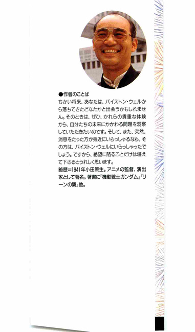
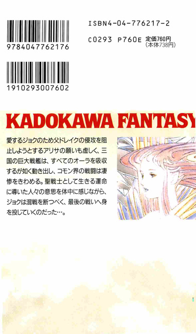

| [富野由悠季] オーラバトラー戦記11 | |
| 富野由悠季 | |
| (2015) | |
|
オーラバトラー戦記11 完結編 ハイパー・ホリゾン
富野由悠季
|


オーラバトラー戦記11 完結編 目次
序
１ 第三勢力・ビショット
２ 狭間のミィゼナー
３ ミハンの釈放
４ ザナド見参
５ 戦場をおおうもの
６ スカイダイビング
７ オーラの錯綜
８ ショットのいる処
９ ドレイクとアリサのあいだ
10 ガン・ルーム
11 チェック・アイ
12 アイリンたる者
13 結界を抜ける
14 遠い敵、ちかく
15 カットグラの技
16 訣別の薫り
17 ビショットのぬめり
18 展 開
19 人の行為
20 チャムが飛ぶ
21 天秤の錘
22 オーラの糸
23 グラナダスの空戦
24 カットグラ戦隊
25 生理の波にのる
26 チャムとエレの目
27 なだれ
28 トモヨ変身
29 あがき
30 ハイパー・靄齢子
31 ビヨンド・ホリゾン
序
古代人が岩塊を積みあげてつくった巨大な三角形の墓、ドライアングも、これほどのものではなかったのではないか、とリムル・ルフトは思った。
クの国の巨大オーラシップ、ゲア・ガリングをみたときの第一印象である。
二層の構造物で構成されたゲア・ガリングは、艦艇という概念をこえる形態をしていた。簡単にいえば、複葉機の翼だけのかたちと考えればよい。
下部の主要船体だけで、通常のオーラシップの三隻分にちかい容積をもち、上下の甲板には、フレイ・ランチャーや大砲の旋回台座が、針山のように搭載されていた。
中央には、数層のデッキをもった中央構造物が塔のようにそそり立ち、その最上部には、下部の船体とおなじように、まさに翼そのものという感じで左右にはりだしている艦橋構造物があって、そのデッキにも十数門の機銃座が装備されていた。
その全幅も下部の半分ほどはあって、小型のオーラシップ、すなわちミィゼナーとおなじくらいの容積があるようにみえた。
『......スィーウィドーで建造されているラウの国のゴラオンとくらべても遜色はない......これとウィル・ウィプスが襲いかかれば、フォイゾン・ゴウといえども、どうしようもない......』
オーラマシーン、ドッフオの小窓からゲア・ガリングを見上げて、その黄金色にかがやく偉容に息をのんでいたリムル・ルフトの耳に、母ルーザの声がひびいた。
「いやいや、たいしたものでございますなぁ......ビショット・ハッタ王はお若いのに、ここまでのことをなされた。これはもう、ドレイク・ルフト王の真似などという次元を超えております」
羽根扇をゆったりとつかって艶然とほほえんでみせるルーザの姿を、目の端にとらえて、リムルは、
『......あの姿は、地に棲むガロウ・ラン以外のなにものでもない......』
と思った。
ルーザは、女王でありながら、不節操で好色で、民のことなどは毛ほども考えていないのである。
そう思ったとたん、リムルのちいさな頭に、ある考えがひらめいた。
『......そうか......このような女の腹から生れたわたしが、聖戦士に出会い、ミの国の王妃であるパットフットさまやエレさまに会えたのは......そうか!?......この女の始末をつけるためであったか......』
それは、義姉のアリサを追ってアの国から亡命し、別世界を見聞した少女、リムルの密かな決断でもあった。
このリムルの決断は唐突すぎて奇妙の感をまぬがれない。だが、もっと不思議だったのは、ゲア・ガリングという巨大戦艦が、クの国のドックで建造されたことである。
三十隻ほどの各種のオーラシップを建造して、力を蓄積していたとはいえ、過去に数倍する巨艦の建造は、クの国の技術的経済的蓄積を凌駕し、社会的歴史的蓄積を無視するような現象だったからである。
もちろん、それは、クの国のみならず、アの国にもラウの国にもいえることなのだが、ビショット・ハッタというお調子者で、ドレイク・ルフトに追従をいうしか芸がないようにみえる王のもとで為されたことであるがゆえに、なおのこと摩詞不思議に思えるのであった。
背景に、オーラマシーンの発明者である地上人、ショット・ウェポンが、基礎設計をしてあたえたという事実はあるのだが、それにしても、巨大な艦艇の建造は、ひとりのすぐれた設計者の存在だけでできるものではない。
ドレイクの前ではいつもはしゃいでみせるだけだが、若い国王ビショットは、アの国以上に教育機関の整備をいそがせ、産学一体政策をおしすすめるという非凡さを持っていた。ビショットは、革新的な技術を消化吸収させながら学生を養成し、実技を習得させるために、学生たちを教官もろとも現場に投入したのである。
実技習得の場は戦場であり、実践の場は、最前線である。
このビショットの施策は、乱暴で無駄も多く、人的損害も多出したが、成果もまたすさまじかったのである。
そして、この日が、産学一体政策の真骨頂を披露するゲア・ガリングの進水式の日であった。
だが、これもふつうに理解されている進水式ではなく、壮行式とよぶべきもので、この日、ゲア・ガリングは戦場へ発進するのである。
つまり、艤装は完了しているのである。
これは、ドレイク・ルフトの強硬な要請にしたがわざるをえなかったビショットが、前後の見境がないほどの報償金を餌にして、作業を督促した結果であって、そのため、技術者と職人たちは、最後の一カ月あまりは不撓不屈の精神をもって不眠不休で働いたのであった。
しかし、これもまた奇怪な現象であった。
人びとのオーラ力が発動した、としか考えられないような進捗情況であったからだ。
これは、戦場という場ではみることができない背景であった。しかし、まさに、この背景をささえた力、人びとのオーラ力の発動こそが、コモン界のユーロ地域を壊滅させていくのである。
この日、つまり、ジョクと合流したミィゼナーが、カラカラ山塊を南下して、ミハン・カームの無線を傍受する前日。
この日からバイストン・ウェルのコモン界には、三隻の巨大戦艦が存在して、その巨体を稼働させるために、そのオーラ・エンジンがオーラ・エナジーをたくわえはじめたのである。
１ 第三勢力・ビショット
進水式の儀式が型通りに終了すると、ビショット・ハッタは、クの国の周辺国の王侯貴族、大使と武官たちが見上げるなか、ドレイク・ルフトの名代であるルーザ・ルフトとその娘リムル・ルフトをゲア・ガリングにあがるエレベータに案内していった。
艤装工事用のエレベータは、リボンをまいて飾りたててはあったが、てすりに囲われただけであったために、乗った者は、諸国の貴族高官たちを睥睨する形になった。
エレベータは、近衛士官の手で操作されて、上昇を開始した。
「ウオーッ!!」
「オオゥーッ!!」
進水式の式典に参列することを許された高位高官たちと将兵の歓声が、ゲア・ガリングの艦首部を前にした式典会場からおこって、左右に津波のようにひろがっていった。
進水式から出陣の儀式に移ったのだ。
ズゴーゥゥゥッ......。
オーラの陽光をうけるゲア・ガリングの上空には、数十機になんなんとするオーラバトラーとオーラマシーンが、三機、六機と編隊をくんで、ゲア・ガリングの出陣を祝った。
「なんとまあ......」
ルーザは、ここでも羽根扇をつかいながら、艶然たる微笑をビショットにむけた。
「......まことに、ビショット王のご威光には驚嘆いたすばかりで、なにか身がすくむ思いでございます」
ルーザは、足下にとおくなっていく高位高官たちと、上空を整然と飛行するオーラマシーンの編隊を惚れ惚れと見やった。
「............」
不遜さが宝石と絹を着ている、とリムルは、ルーザの後ろ姿を見つめながら思った。
「アッハハハーッ......ドレイク・ルフト王が戦場におられますので、今日の出陣の式典に華がなくなるのではないかと案じておりましたが、ルーザさまとリムルさまのご来臨をたまわりまして、クの国がアの国と一枚岩であることを周辺国家に証明でき、安堵いたしております......ハハハー......」
ビショットは、かん高い笑い声をたてた。
彼の笑いがわざとらしい作り笑いであることは、誰の目にも明らかだったが、それがビショットの真意をみえなくしていることも事実だった。
もちろんドレイクもその点は十分承知していたが、些細なことと目をつぶって、ビショットとの連合体制を堅持するために、ルーザをここに派遣したのだった。そして、ドレイクは、このことでルーザの真意をも計ろうとしていたのである。
ビショットとルーザ。
ドレイクの目には、密通の可能性もあるとうつっていたのである。
が、それは通俗的な側面にすぎない。
ドレイクは、ルーザを、自分とビショットの将来性を両天秤にかけている賢しい女と断じており、ルーザをダシにして、ビショットを駆逐する手段を講じたいと思っていたのである。
あからさまにいえば、ふたりの関係を口実にして、クの国を無血で手にいれる算段をしているのだった。
ビショットがルーザとリムルをブリッジに案内すると同時に、ブリッジ全体がかすかに震えはじめた。
ゲア・ガリングは、巨大なオーラ・エンジンに火をともし、その巨体を世界に晒す瞬間を待っているのである。
「発進でありますか？」
「ハッハハハァ......我等は、ドレイク・ルフト王の要請にこたえるにあたって、時間がないながらも、万全の準備をしたつもりであります。艤装中にも、数回のテスト飛行をすませて、艦の不都合なところはすべて改善させてあります」
ブリッジにあがっても、ビショットはベルベット製のとんがり帽子をぬぐことなく、その頭三つ分の高さはあろう帽子をふりたてて笑った。
ズズッ！
ブリッジ内にいる十数人の担当下士官の計器を確認する声が静まると、ブリッジの床がかすかに跳ねるように感じられ、つぎに、足下から腰に浮揚感がはしった。
『飛んだ......!?』
リムルは、ルーザとビショットの背後の席にちいさく身を沈めていたが、ゲア・ガリングのスムーズな発進に、この艦は飛行性能がすぐれているだけでなく、とんでもない能力を秘めているにちがいないと思った。
身内の生体力がザワッとそそけ立ち、神経が外にむかってさかだつような感じをリムルはおぼえた。
ゴラオンに滞在しているときにも、全身を圧迫されるような力を感じたものだったが、それは、スィーウィドーがかもしだす重苦しい気配と、ゴラオンの巨大なオーラ・エンジンが、コモン界のオーラを吸引するためにおこる空気の流動が感じられるのである、とおしえられていた。
しかし、いまゲア・ガリングで受ける圧迫感はもうすこし明確に、神経にさわるのである。
それは、まだ稼働していないゴラオンと、飛翔を開始したゲア・ガリングのちがいなのであろうか......。
そうではなく、
『物をつくる人の意志がちがえば、物もちがうものになるのだろうか？』
リムルは、そんな疑いをいだくこともできるようになっていた。
肉体を構成する体液という体液が波立つような感触......おぞけをふるうというのとはちがう、もっと微妙な感覚に身を震わせながら、リムルは、毛穴という毛穴からにじみでてくるものがあるような気がして、そっとてのひらで脇腹を撫でてみた。
しかし、汗は感じられなかった。
「......馬車なら半日はかかる距離ですぞ。あれが我がカリングの王城であります」
ビショットの声が耳に飛び込んできた。語尾のほうは、またも笑いにまぎれていた。
「おお、あの切り立った断崖の上の白くかがやく城でありますな。ハッタ王がつね日頃、ご自慢になさっていたお気持ちがよくわかる景観でありますなぁ」
ルーザは、席からなかば腰をうかして、明るいオーラの光が射しこむ正面の窓をのぞくようにした。
「............!?」
リムルにとっては、きくにたえない会話だった。
上昇するゲア・ガリングの飛行の静かさがふたりの会話をきわだたせていた。
その上、ビショットが説明する外のようすから、ゲア・ガリングの巡航速度もかなりのものだと知れた。
『この形態とこの大きさでありながら、ミィゼナーなみの速度をもっているということなの......？』
専門家でなくとも、その意味するところ、すなわち戦場では強力な威力を発揮するであろうことは、容易に察しがつく。
真青な空の色しかなかった正面の窓に、左右にはしる雲がみえはじめたときに、艦の速度は、リムルの想像を絶するものになった。
「リムル、いらっしゃいな。すぐにカリングのお城が、この下をとおっていきます」
席を立ったルーザが、ブリッジの右側の中央に設けられたてすりから呼んだ。
「はい？」
あまり無愛想では、ドレイクの名代の母についてきた姫としては、物議をかもしそうな気がして、リムルはシート・ベルトをはずして立ちあがった。
「いやー、ここからガダの爆弾を投下すれば、我が城も炎上するという寸法でありますな......ハハハァー、いや、なんとも空爆というものは、恐ろしいものだ」
ルーザが立つてすりの反対側から、床にしつらえられた窓をのぞいたビショットは、あいかわらず上機嫌だった。
「まあ......！」
真下にみえる地上の光景は、斜めに遠望する景色とはちがったすごさがあった。見える物すべての位置関係がはっきりとしていて、かくれたところがない。
地上の隆起と平地の関係、そのあいだをはしる道路と集落の関係。
ビショットの居城のひとつが、急速にはしってきて、ゲア・ガリングの下にながれこんできた。
その白くかがやく城は、まるで夢と可愛らしさを象徴する精巧な工芸品のようだった。
『......あのなかで、このビショットさまが育ったか......』
思わずリムルは、少女らしからぬロジックで、ものを考えていた。
『いけない......こんな考えにふけるのは聖戦士どのの悪い癖というわ......わたしにも、それが伝染してしまったのかしら......？』
リムルは思わず身をひいて、ひとりうろたえた。
「どうなされたかな？ リムルさまには、ご心配事でもおありなのかな？」
笑いをふくんだビショットの言葉には、リムルと聖戦士との感応を見抜いたような棘があった。
「いえ、この艦が飛行しているにもかかわらず、下のデッキで働いていらっしゃる将兵たちがいるので、驚いたところであります」
リムルは、頭に湧き出てくる想念を打ち消そうとしてそういったが、事実、下部デッキにうごめく人影に感嘆もしていたので、わざとらしくないフィーリングでしゃべることができた。
『こうしないといけないのだ。考えるのは危険だ......』
リムルは、しゃべりながら決意を新たにした。
「おお!? いわれてみれば、下のデッキの屋根には、働く将兵たちの姿がありますな」
ルーザが間の抜けた感嘆の声を発した。おかげで、リムルの決意はビショットに感知されることはなかった。
リムルは思考を停止して、下部デッキの将兵の動きに意識を集中させ、努めて感動しようとした。
『......風に足をとられないのかしら？ 周囲の景色がみえないから、平気なのかしら......』
と......。
「いや、まったく。軍人や技術者というのは、不思議な連中でしてな、任務に夢中になると、ほかのことが耳にも目にもはいらんようで......」
ビショットのちょっと生真面目な声音が、リムルには不思議だった。
「まったく、彼等は物にたいして実直というか、直線的でありますからな。電球などもつくってくれましたが、電気なるものがどういうものか、目にはみえませぬゆえに、とんとわかりかねます。オーラ・エナジーにいたっては、動く機械をみせられましても、そのエナジーとの関係がわかりかねて、さて、なにかと......」
「彼等が、これこれであるからしてこれこれである、と懇切丁寧に説明してくれることがはっきり理解できなくても、ま、電気のパン焼き器ごときものをみせられれば、それでよしとして報償をあたえるようにしております。そうすると、次にもっと便利な機械を製造してくれますな。ハッハハァー......」
「豪胆なことを。そのお心があるからこそ、日短くしてアの国に秀るとも劣らないものをこうして手にいれたのでありますなぁ」
ルーザとビショットの怪し気な会話を耳にしながら、リムルは言外の意味を推量しないように努力した。
それは、リムルにとって緊張を強いられる作業だった。
「......姫さまは、このゲア・ガリング、お気に入り下されたかな？」
「はい！ ウィル・ウィプスの飛行を経験しておりませんでしたから、感動いたしております。従来のオーラシップにくらべたら、天と地ほどに乗り心地のよいものです。これが戦場に押し出すところを想像いたしますと、戦争などはただちにおわってしまって、将兵、人民の苦労もすくなくてすむと実感いたします」
追従に似た言葉がスラスラと口をついてでたので、リムルは思わず微笑をうかべた。
「ご賢察であります。しかし、リムルさま......世の中は、それほど簡単ではありませんぞ。なかなか平和にならぬというのが現実であります。ドレイク王に反旗をひるがえしているラウの国でも、巨大戦艦が建造されているという噂がございます。ゲア・ガリングとウィル・ウィプスが押し出してすむかどうか、これは、楽観できるものではございません」
最後は、ビショットらしからぬ慎重な言葉づかいであったが、リムルは、ラウの内情について知っていることは話してくれなければ困る、と強制されているような気がした。
「............」
一瞬、リムルは、ゴラオンでのエレ・ゴウとのみじかい生活を思い出していた。それを意識の外に追い出そうとしたが、むずかしかった。
リムルは、意識を感知されるのを防ぐために、おちついていった。
「その噂は、ラウで囚われの身になっていたわたくしには、きこえませんでした。物事は、なにごとも、近くの者よりも遠い者のほうがわかるということがございましょう？」
「......お上手な口のききよう......ハハハーッ！賢い姫さまでいらっしゃる」
「恐れいります」
ビショットの大人らしいひきぎわに、リムルは軽く頭をさげてこたえた。その際、首をのばすようにして頭をさげたので、首斬台の上に頭を差し出すときの感じはこういうものではないのか、と想像してしまった。
首のまわりにネックレスのように、ヒヤッと冷気がとりついたが、その想像を、ビショットが感知することはなかった。
ズッズズズツ！ と、正面の窓ちかくを横切ったオーラシップが、ブリッジを震えさせたからだ。
「よーし、もう一度だ。やってくれ！」
ブリッジの正面に位置する士官の怒声が炸裂した。
と、そのオーラシップはもう一度船体をかたむけながら、ゲア・ガリングの前を横切っていった。
なにかのテストのようだった。
ゲア・ガリングは、慣熟飛行まで、まだまだ整備をしなければならないことが山ほどあるのだ。
ゲア・ガリングの左右と前後に、五隻のオーラシップが随伴しはじめたのは、カリングの城をすぎてしばらくしてからのことであった。
その、天を圧してみえる艦隊が、クの国を北上しアの国をかすめて、カラカラの主戦場にいたるのには、一昼夜を要するはずである。
その間に、ゲア・ガリングは、各地の駐屯地に配備してあるオーラバトラーを糾合していくのである。
このたびのコモン界ユーロ地域における戦争は、外交的な思惑があってのことなのだが、それ以上に、それぞれの王に、事態を自分ののぞむ方向に進展させられるという自負があって始められたものである。
しょせん、人の行為などは、自己の判断領域のなかで、どれほど自惚れられるか、によって決定される。
オーラマシーンという革命的な機械は、これら王たちに絶対的な自信をあたえて、それぞれの王に、自分こそこの機械をつかうものと信じ込ませていた。
しかし、事実はまったく逆で、機械の存在が、王たちを急き立てているのである。
道具が発達すると、つかう側の利便性以上の力を発揮することを、人はわすれるのである。
こん棒をつかうことを知った太古の時代から、道具は永遠に人の意思に従属するものであって、どのように道具が発達しても、道具は道具であると人は信じ込んでしまっていた。
道具や機械の進歩が、人の悟性にマイナスに作用した部分があるということを、産業革命以来のめざましい道具の進歩の歴史をもっている地上人でさえも考えることができないのである。
もちろん、部分的には、人がアニミズムの時代からもっていた鋭敏な感性が、道具の発達によって失われたと指摘されることはある。だが、製造業が社会の根底をささえるようになって以後、人は、どのような機械や道具であっても、メンタルな部分で、人にマイナスに作用することがある、ということを認めるのをわすれてしまったのである。
それを認めることは、社会構造を変革することであり、経済社会を否定することにつながるからである。
最近になって、ようやく環境という側面から、道具や機械に懸念が表明されるようになったが、それでも、巨大すぎる機械、大きすぎる道具、手におえない機械にたいする懸念であって、道具そのものの存在を問題にする視点はない。
まして、オーラマシーンは、コモン界の根源をささえる力を利用した機械である。
コモン人は、自らの能力と一体化し自らの能力を拡大してくれるものと信じてオーラマシーンをつかっているのである。
オーラマシーンが内包する独自の力が、人の存在を凌駕するようなものであるかもしれないという想像は、誰ひとりとしてもっていない。
しかし、まさにオーラマシーンであるがゆえに、それが人を支配するものであることは、地上界の機械など比べものにならないほど自明のことなのである。
コモン人であれ地上人であれ、人の通癖として、はじめての体験にたいしては、あらゆる意味で過剰反応をする。
この時代、コモン人は、オーラマシーンの価値を過大に評価して、ただはしゃいでいるのである。
２ 狭間のミィゼナー
聖戦士ジョクこと、日本人青年城毅は、ラウの国のふたりのパイロットと彼等の二機のオーラバトラーをたずさえてミィゼナーに合流していた。
その二機のパイロットは、フォイゾン・ゴウの近衛部隊ともいうべき竜旗隊のなかでも、さらに七竜旗とよばれるうちのふたりである。
この配備をもってしても、フォイゾンのミィゼナーとジョクによせる思いが知れよう。
これによって、ミィゼナーには、計六機のオーラバトラーが搭載されることになった。
ジョクのドウミーロックをベースとしたカットグラと、整備中のカットグラの補助機で、プロトタイプから発展したⅡ型機が一機。
それに、マーベル・フローズン、ソトロウ・レストラーマのドウミーロック二機。
七竜旗隊のダッサ・コランザン、トリプース・セニオスの二機。
これは、ミィゼナーにとっては一機おおい編成で、艦体にとっては多少過重ではあったが、決定的な不都合ではなかった。
だが、ミィゼナーには、パイロットの補助要員がいない。それがミィゼナーの弱点である。
その上、ジョクは、傷が癒えたとはいえ、まだ完調と自覚するまでにはいたっていない。
フォイゾンが、七竜旗隊のダッサ・コランザンとトリプース・セニオスをジョクにつけたのは、そんなジョクが無理をしすぎないように牽制するためであった。
「......まちがいないな？」
「はい、ミハンとチャム、そういっています。どこでどう合流したのかは知れませんが、無線には、チャムの声らしいものもきこえました」
メトー・ライランはそういいながらも、なんとか電波をひろおうとしていたが、ノイズがひどくなるだけで、一向にその電波をとらえることはできなかった。
「これが方位です......」
ようやく、二本の赤い線をひきおえた地図を、キーン・キッスがさしだした。
ミィゼナーからみた角度で右前二十度ほどに、中心角約四度の扇形がえがかれている。距離はオーラバトラーの一戦闘飛行距離ギリギリというところだった。
位置不明の敵にたいして接触をこころみるには、たしょう無理のある距離だ。
「逐一、情報をおろしてくれ。オープン・デッキで発進態勢にはいる」
「頼む。先鋒は騎士ソトロウだ。いいな!?」
ニー・ギブン艦長が、ジョクを制するように声をかけた。
「了解だ」
ジョクは、キーンの地図を手にするとタラップのてすりをすべるようにして、オープン・デッキにおりていったが、両腕に体重をかけると、脇腹をひきつるような鈍痛がおそった。デッキに両足で着床すると、右大腿部が痛みできしんだ。
しかし、痛みはこらえればすむ。
問題は、こんな状態でカットグラを操縦して、反応が遅くなることのほうなのだ。
ジョクは、そんな気配は全くみせずに、ムッとした表情をつくって、オープン・デッキに面した待機室の椅子にすわった。
「......望楼の布団のムラソバ砲台を中心にしたラウの艦隊の布陣のうえに、いましがたのミハン機の推定位置をかさねると......こうなりますね」
マーベル・フローズンが壁の作戦地図上に記入した赤い線を見上げて、ソトロウ・レストラーマは眉をひそめた。
「......想像でしかないが、ミハンがでてきた方位は、ウィル・ウィプスが消えていった方位と重なるんじゃないか？アの国の主力艦隊は、東側に展開しているはずだぞ？」
「......囮ですな」
七竜旗隊のひとり、ダッサ・コランザンが、ミィゼナーのパイロットの気を悪くしないように気をつかいながら、わってはいった。
「いまごろは、ウィル・ウィプスは、アの主力艦隊と合流しているとみるのが正しい。ミハン機の無線を受信して、我々がでていったら、高空からか低空からかはわからないが、ミハン機に貼りついてきた追撃部隊が、ラウの艦隊の先鋒をたたくという挙にでてきましょう。その間に、アの主力艦隊は、東の海岸ぞいにラウに侵攻する」
「同感です」
ソトロウの発言に、ダッサのかたわらのトリプース・セニオスがつづいた。
ラウの騎士たちが、ミィゼナーやミの国のパイロットにたいして一目おくのは、実戦の経験が数段にちがうからである。
騎士の時代、槍合わせの場数がおおいほど、騎士は敬われたものである。
その気風が、ラウの部隊のなかでもっとも気位が高いといわれている竜旗隊のふたりにはのこっていた。
「......騎士ソトロウは実戦主義者で、ひょっとしたら近視眼的な意見かもしれません。忌憚ないご意見をたまわりたい」
ジョクは、ダッサとトリプースをうながした。
「常識的といえば、騎士ソトロウに叱られましょうが、ミハン機の捜索にでるのは問題ない、と考えます。我が艦隊のうち、望楼の布団を軸にして、左右には第一、第二戦闘単位の艦隊が進行しております。その動きがたしょう遅いのが気になりますが、牽制役にはなりましょうから、先鋒をつとめるミィゼナーが殲滅されることはないでありましょう」
ダッサが、ジョクの気持ちを斟酌してくれた。
しかも、ラウの全艦隊の先鋒をつとめるのはただ一隻、ミィゼナーのみである、という点についても言及してくれたのである。
「お気になさるな。先鋒役は、自分からフォイゾン・ゴウ王に提案したことであります」
「......!? いや、聖戦士どの、誤解なさらぬように......我等は、このようにミィゼナーに同乗させていただいて、先鋒がいかに恐ろしいものであるか、身にしみているのであります。よくぞ、この任を申し出られたと驚嘆いたしております」
白面の青年であるダッサが、率直にいった。
「ミハン機の針路上にクの艦隊があらわれてくれれぼ、この先鋒、まさに図星となりましょうがな？」
トリプースは、気を張るようにいった。
ジョクは、微笑をみせると、
「......ミハン機を迎えに参ります。本艦が、望楼の布団を越えたら、オーラバトラーは全機発進します。それまでには、もうすこし明確に位置を確認できる電波をミハン機から受信することができましょう」
「ハッ......！」
マーベルとソトロウは、ただうなずくだけだったが、七竜旗隊のふたりは、立ちあがって踵をあわせた。
「よろしいか？ 自惚れた作戦をとらせていただきます。つまり、自分が高空にあがり、ソトロウ、マーベル、ダッサとトリプースの四機は低空から侵攻して、ミハン機と合流します」
「ハッ！」
「質問は？」
「ミハン機と合流する意味は？」
マーベルが、これはわざと質問するのよ、という顔をみせながら、例の水のはいった皮袋をデスクの下からとりだした。
ジョクは、身体の痛みを顔にだすことなく立ちあがり、ラウの騎士に説明した。
「ミハンは、アリサさまを同道し、スィーウィドーから発進してアの国の艦隊と接触したらしい。同時に、リムルさまも行方不明である。その上、それ以前から行方不明だったチャム・ファウの声が、さきほどミハン機でしたという。ミハンの周辺でなにが起ったのか、囮であるにしても、戦術的になにか意味がある現象なり、事実関係なりが浮き彫りになるかもしれない。だから、捕捉する」
「了解であります」
他のパイロットとともに敬礼すると、マーベルは手にした皮袋の口をひらいた。
３ ミハンの釈放
この数時間前。
アリサ・ルフトとリムル・ルフトをウィル・ウィプスに移送したミハン・カームは、ウィル・ウィプスの艦内で、査問委員会の威儀をただした委員卿から、釈放をいいわたされていたのである。
ミハンは、紙を巻きとる耳障りな音をききながら、悪寒が背筋をゆったりと降下していくのを感じていた。
『こりゃ、妙だ......これなら、いますぐ処刑されたほうが楽だ......』
委員卿は巻き紙をデスクの上におくと、ミハンをつまらなそうに見下ろして、尋問室をでていってしまった。
「......おい、しばらくすわって待て。貴様のオーラバトラーの用意ができているかどうか、調べてくる」
ミハンの背後に位置していた尋問官のひとりが、ひどくぶっきらぼうにそういってでていくと、ふたりの尋問官が、残った。
「また敵同士だな？ ええ......!?」
「らしいな......なんでだ？」
ミハンのカサカサになった咽喉の上下の皮がくっつきそうになった。
「姫さまおふたりを救出したからというんだろうが、言語道断な判決だ。ドレイク・ルフトさまは、どうかなされたのだ」
「よせよ」
一方の尋問官が、愚痴をつづけそうな同僚を制した。
「......ミハンがラウの勢力圏内にもどれるかどうか、判決文では保証していないんだ。わかっているのか？」
愚痴をいいあう危険を感じたのか、ひとりの尋問官がそうミハンに声をかけたが、ミハンにはきこえなかった。
『戦線に帰らなければ、囮になる気遣いはないが、そうなると、アの国の勢力圏内を飛行しなければならないわけだから、どこを飛んでも、あっという間に撃墜されちまうだろう......』
それでは、敵前逃亡ととられてもしかたのない行動だけがみえてしまうことになる。
それは、ミハンのような成り上りの騎士にとっては、とうてい容認できることではなかった。
轡取りの身分から騎士にちかい地位にのぼれたのも、機械の時代という新時代が到来したからであり、ハンダノの城以来ジョクにつかえてきたからこそ、その出世も早かったのである。
その恩に反することなどできないから、ジョクがアの国を捨てるといいだしたとき、ジョクにしたがう道を選んだのである。
そして、ミの国が滅びるのを見、ラウにはいって、スィーウィドーでゴラオンをみたときに、ミハンはミハンなりに、ジョクという地上人が、世界の趨勢をみていると納得したのである。
オーラマシーンをコモン界で実用化した王ドレイク・ルフトも、ギィ・グッガとの戦いのなかで、変質していった。ドレイクは、オーラマシーンの威力を絶対的なものと信じ、世界を制覇できると確信して、それを実行しようとしている。
コモン界は広く、人物もいる。
コモン界自体が、ひとつの世界なのである。
そういう実感にてらして考えたとき、ドレイクは、機械を弄んでいる男というしかなく、ほかのことには鈍感になって、天なる界にある地上界まで掌中にしようとする傲慢さの塊でしかない王、とミハンの目には映った。
それでは、ドレイクは早晩、自壊しよう。フォイゾンが勝利を得るほうが順当であろう、とミハンは考えるのである。
そうであれば、フォイゾンの治世下、ドレイクの世よりも好ましいかたちで、故郷に錦をかざることができるのだ。
『......しかし、たとえ自分が囮にされても生きのびられたなら、戦線に復帰する方法もあるはずだ......そうすれば、敵前逃亡の罪の埋めあわせはつくのではないか......』
ミハンは、両膝のあいだにのぞく床を凝視したまま、ウィル・ウィプスが潜伏している一帯の地形を頭のなかにえがいて、アの国の艦隊の展開の薄いところはどこかと考えてみた。
『......超高層まで飛べばなんとかなるが......』
「ミハン・カーム、でろ！ この部屋は倉庫になる。貴様にいられると邪魔なんだとよ」
尋問官のいらだった声がはじけた。
ミハンは立ちあがった。
通路に待つふたりの士官の背後にしたがって、タラップを三回ほどおりたところで、ウィル・ウィプスの中甲板らしいところにでた。
「整備はすませてある」
整備兵の言葉は、ミハンには、機体の性能は全部調べた、というようにきこえた。
「ウィル・ウィプスの影をみたら、極北の地にでも遁走しろとニー・ギブンにつたえてくれ。顔をしっている者からのせめてもの忠告だ」
見送りにでた歳かさの尋問官がいった。
ミハンは、その尋問官の声を背に木製のタラップをのぼると自機のコックピットのシートにすわり、コンソール・パネルをチェックした。
異状はない。エンジンの吹き上りも順調だった。
ドウミーロックのフレイ・ランチャーは外されていたが、楯は唯一のオーラバトラーらしい装備としてのこされていた。
『騎士バーン・バニングスはいらっしゃらないのか......？』
チャム・ファウのことも気になったが、機体の周囲に立つ尋問官や整備兵、甲板要員に確かめる術はなかった。
バーンは、すでに自艦に帰っているのであろう。
すっきりと晴れた上空には、数機のドメーロとオーラバトラーが滞空している。自分の機が離艦したと同時に攻撃するつもりなのかもしれない、とミハンは思った。
「......ミハン機、離艦いたします」
勇を鼓して無線によびかけると、目の前の任務にだけは忠実な発着艦デッキの下士官の事務的な声がかえってきた。
「離艦します！」
ミハン機が離艦すると、左右に二機のオーラバトラーが、機体をすりよせるように並進してきた。
「真北にむかえっ」
ウィル・ウィプスの全体をみようとするミハンの気配をよみとった左右のオーラバトラーは、機体が手にした楯でミハン機を叩くようにして急きたててきた。
「カラカラまでは随伴させてもらう。貴公のためだ」
随伴機の無線が恩着せがましい言い方をしてきた。
「......配慮に感謝する......」
そう答えながら、敵がそういってきたということは、予想に反して戦局が膠着している証明ではないか、とミハンは思った。
『......天地の精霊のみが知ることかもしれないが、なんとかなるか』
ミハンは無理してそう思おうとしたが、自由を奪われたまま国境まで連行される惨めさに変りはなく、頭を垂れて我慢するしかなかった。
『そうだよ。ミハン、絶対、なにかあるよ』
かん高い少女の声が、ミハンの頭にガンとひびいた。
「............!?」
ミハンはゾッとして周囲をみまわしたが、誰もいなかった。
正面の透明なハッチの下には、盆地の畑の列と赤茶けた山並がはしるだけだ。
『しゃべっちゃ駄目だ』
おなじ声が、また頭にひびいた。
「ウッ......あ......!!」
チャム・ファウが、ミハンの足のあいだの床から見上げるようにしていた。ミハンとチャムの目があった。
『騎士バーンがさ、整備兵たちの隙をみて、道具箱にもぐりこませてくれたの』
「そんなの......!?」
『しゃべったら無線できかれちゃうでしょ！』
チャムの叱責が、ミハンの頭のなかで、耳鳴りのようにひびいた。
ミハンは、ジョクとコモン人との意思の伝え方をきいていたから、相手が直接頭に語りかけてくる意思の伝達方法を知らないではなかった。
しかし、これほど明瞭にミ・フェラリオの意思がつたわってくるとは思ってもいなかったので、ミハンは、左右のオーラバトラーのパイロットにも、チャムの声をきかれたのではないかと慌てた。
『いいたいことがあるんなら、ちゃんと言葉にして考えてよね』
チャムは、革鎧の下に着る木綿の上下に、ボロ布をマントのようにまとっていた。
『......バーンがいっていたよ。ミハンは囮にされているんだって......』
『バーンが追ってくるのか？』
ミハンはチャムに語りかける言葉を、頭のなかではっきりとならべてみた。
『ドレイクが飼っている女がいるんだって......それが、ザナドなんかを動かすらしいっていっていた』
『どうでてくるんだ？』
『そんなのバーンにもわかるもんか。バーンはウィル・ウィプスからでていっちゃった』
チャムは、ミハンが答えてくれたので安心したのだろう、ミハンの足のあいだから這いだしてきてニッと白い歯をみせると、シートの横の隙間に移動していった。
『どうしたらいいんだ？』
問いかけるミハンに、肩をすくめてみせただけで、チャムはシートの下の道具箱を固定しているベルトをひきだすと、その下にもぐりこむようにしてからだを固定した。
『......なるようにしかならないんじゃない』
チャムの意見は、ミ・フェラリオにしても知恵がなさすぎるというか、子供じみてきこえた。
『......そんなことじゃ、ふたりして死ぬぞ』
ミハンはそう応じながら、チャムのやることを見下ろして、ミ・フェラリオがこんなにも自分のやることを知っているものだろうかと思う。
『死ぬのは厭だよ。あたしはクスタンガに帰るんだ』
『......じゃ、どうすればいいんだ』
『そんなの考えてよ』
ケロッというチャムの視線をさけるようにして、ミハンは正面のハッチから身を乗り出して、左右に随伴するアの国のフル装備のオーラバトラーの動きを観察した。
『ジョクは、いつもこいつといっしょだったか......』
ミハンは、チャムの屈託のなさそうな態度を無責任だと感じながらも、こうして意思をつうじあえる相手がいるということは、いいことだと思った。
『......ジョクは、こいつといるから聖戦士をやっていられるのか』
『なにゴチャゴチャ考えているの。外がどうなっているか、これからどうなるか、それだけに神経を集中してよね』
チャムの叱責は、ミハンには脳味噌をかきまわされたように感じられた。ミハンは顎を鎖骨のあいだに埋めるようにして、
『わかっているから、これからは干渉するな。囮の立場から逃げ出してみせるさ』
『そうだよ。ミハンならできる』
『そうかい？』
ミハンが見下ろすと、チャムは羽根をからだに巻き込むようにして、床の上に横になっていた。
疲れているらしい。
喉の渇きをおぼえたが、ミハンは、敵対関係にあるアの国の整備兵が用意してくれた水筒を手にする気はなかった。まさかとは思うが、警戒するにこしたことはないのだ。
しかし、いったんひとつのことを心配しだすと、次々と悪いことが思いうかんだ。
たとえば、戦闘速度にしようとして、オーラ・エンジンの回転を一定以上にあげると爆発する仕掛けがしてあるとか、どこかの関節を急激にまげると爆発するとか、だ。
「くそっ......」
不吉な想像は、ますます咽喉の渇きをおぼえさせた。
「なんだ！ なにいった!?」
随伴するオーラバトラーのパイロットの声がふりかかってきた。
「いや、自分がこんな立場にいることが情けないんだよ！」
「............」
それにたいして、左右のオーラバトラーから応答はなかった。
巡航速度をすこしこえる速度で、無言の飛行が、二時間あまりつづいた。
カラカラの山塊が視界にはいったところで、随伴機から無線がはいった。
「これからは、ラウの制空圏にはいる。我々は帰還する。つぎに会うときは、騎士として勝敗を決しよう。慈悲も逡巡もなしだぞ」
「望むところです。ご苦労でした。今回の措置に感謝するが、つぎに会うときまで騎士の名誉にかけて、いさぎよい騎士魂の切磋琢磨を！」
騎士の慣習にのっとった挨拶をかわすと、二機の随伴機は、あっけないほど簡単に回頭していった。
ミハン機は、一機放り出されたのである。
『......上空からだと思うよ』
いつの間にか、チャムが目を覚していた。
「そうだな」
ミハンは無線をきって、声をだした。
「水、飲みたい......」
「ドレイク軍の用意した水だぞ」
「構わないよ。あたしが毒味してやる」
ミハンは苦笑して、水筒の水をキャップに注いでやった。チャムは、キャップを抱えるようにして水を飲んだ。
「まずいのは軍艦の水だからね......ミハンも少し飲みな。空中戦になったらもたないよ」
「フレイ・ランチャーもないのに、どうやって戦うんだ」
「それを考えるのがパイロットでしょ。なに経験してきたんだろ。そんなこっちゃ、あたしは、外にでるわ」
水を口にしたミハンは、チャムの言葉にあわてた。
「ちょっと待ってくれ。チャムがいてくれないと困るんだ」
「あたしは、小銃もつかえないミ・フェラリオだよ。いたってしようがないじゃないか」
「チャムはいい相談相手になる。ジョクとコンビで、対空監視だってやっていたんだろう。そういう仲間がいないと、考えだってまとまらないんだ」
ミハンは、本気だった。
チャムはからだを固定したベルトの下からミハンを仰ぎ見るようにして、
「......ミハン、好きよ」
と、白く可愛い歯をみせた。
「ありがと」
ミハンとチャムのおだやかな時間はそこまでだった。
ザァーッ！
雨よりすこし重い音が、ミハン機をつつんだのだ。
４ ザナド見参
「......!! 動いちゃ駄目！ 落ちるんだよ！」
前後左右に閃光が明滅してみえるなかで、チャムのかん高い怒声は、本能的に加速しようとしていたミハンを混乱させた。
それでも、ミハンは、チャムの命令で減速にきりかえた。機体が前のめりになって急速に縦回転しはじめた。
ミハンもチャムも、身体が前に放り出されそうになったが、それぞれのベルトが身体をささえてくれた。
「そうだ！ そのまま落下！」
ベルトで胸を押し潰されながらも、チャムは指示をくりかえした。
ミハンは、機体の回転を殺し、一直線に降下していった。
「そう！ 狙われちゃいないよ。こっちが逃げるのを待っているんだ」
「そうらしいな......敵影がみえない......送り狼じゃないよな」
ミハンは、上空を見上げた。雲の小さな塊があちこちにある。
ミハンは、機体の回転をとめずに、多くなっている雲を利用しようと思った。
「トモヨかザナドだ......地面を這って逃げるのがいいけど、下にもいるよ」
チャムが、ケロッといった。
「じゃ、どうすんだ」
ミハンは腹を立てた。
「ジョクが来るかもしれない。よくわからないけど」
「感じないのかよっ？」
ミハンは、カラカラ特有の幾筋にも切れ込んだ渓谷のひとつに、頭から落下していった、それでも、ハッチ面はたえず上空にむけるようにした。
「それほど便利じゃない」
「でもよ、チャムはなんか、こう、力がついているんじゃないのか!?だから、こうして会えたんじゃないか......六機だ!?」
「ちがう！ 八機だ」
ミハンが認めた敵影の数を、チャムは即座に否定した。
「高度、気をつけて」
「ン......!?」
チャムの指示に、ミハンは反射的に応じて、正面ハッチの光景を褐色の大地の色にかえた。
「左にオーラバトラーがいる。右にながれてっ」
「どうしてそんなにみえる!? チビのチャムは、おれたちより視界は限定されているはずだ」
「いまのあたしはそうじゃないよ」
「だったら、ジョクなりなんなり、味方を呼べよっ！」
「無線つかっていいよ」
「そうか!?」
その間に、ミハン機は、渓谷のディテールをはっきりと見分けられる高度にすべりこんでいた。
「左に敵がいるんだな？」
「そうだよ」
水平飛行にうつった。
ミハンは、一瞬の間をおいて無線機のダイアルをラウの艦隊の制式周波数にあわせると、再び高度をあげた。
「来るよ！」
機体をスピンさせ、上空と渓谷にひそんで追尾してくるオーラバトラー部隊を視界にいれようとしながら、ミハンは回避運動にはいった。
わずかにカーブしたフレイ・ボンムが、左右上下にはしった。牽制だとわかってはいるが、距離をつめてきたのも確かだった。
「こちらミハン機、チャムもいっしょだ。救援、頼む！」
無線にむかったミハンの第一声は、途中からひっくりかえるような悲鳴にかわった。チャムはギョッとして、操縦桿をあつかうミハンの腕を見上げた。
「ミハン!?」
チャムは、どなった。
「わかっている！ こちらミハン機、救援頼む！敵オーラバトラー部隊に追尾されている」
その間に、機体は再び降下姿勢にはいったが、ハッチ面は上空にむいていなかった。
「駄目だ！ ミハン！ 上、上っ！」
チャムは、ベルトの下から這いでると、パッと飛んで、ミハンの肩にとりついた。慣性が働いているせまいコックピットで飛ぶのは、想像する以上にむずかしく危険なのだが、チャムはそれをやってのけたのだ。
「ミハン、まだ大丈夫だよ。しっかりみてっ！」
ミハンの肩口にかじりついたチャムは、蒼白なミハンの頬に脂汗が吹き出しているのを見てゾッとした。
ミハンは、救援をもとめる声を発したとたん、安心して、張りつめていたものが切れたのである。
「敵のフレイ・ボンムに飛びこんじゃいけないんだ。敵は当てるつもりがないんだから、よけたらかえって危ないんだよ」
バウッ！
敵のフレイ・ボンムが、ミハンの眼前で落下した。
「うわっ！」
「よけるなっ！」
「こちらミハン機、ミハン機だっ！」
この無線を、ミィゼナーは受信していたのである。
が、恐慌状態におちいったミハンを叱りつけながら、チャムは、これでもう駄目かもしれないと思った。
「モアイっ、ジャコバのおばあちゃんっ！ なんとかしてちょうだいよっ！」
チャムは、自分のその声に驚いていた。
なんというものにすがろうとしているのか、もし、そんな、界のちがうおばあちゃんたちが、自分のことを助けてくれる気があるのなら、とっくの昔に助け出してくれているはずなのだ。
それなのに、思わずおばあちゃんの名を口にしていた......。
「よほど意気地なしなのか？ あのドウミーロックのパイロットは？」
ザナド・ボジョンの後見人のような立場にたつ騎士レッグス・グロは、自分の戦闘小隊をひきいてザナドの三機編隊の後方に位置していた。
威しのフレイ・ボンム攻撃を数度かけながら、ミハン機との距離をつめていきはしたが、レッグスの戦闘小隊もザナドの戦闘小隊も高高度からおりることはしていない。
にもかかわらず、ミハン機の回避運動と、味方の艦隊によびかける無線は、ふたりの姫を対戦国に送り届けてくれたパイロットにしては、かなり狼狽しているように思えた。
「雲がおおくなった......」
レッグス・グロは、左右の僚機に現在位置を維持するように自機の腕の動きで命令すると、ザナドのガベットゲンガーに後方から接触していった。
ミハン機の無線をうけて、ラウの艦隊、ことに聖戦士がでてくるにしても、もう少し時間がかかることは明白だからだ。
「ザナド！ どう思う」
無線をつかうことはできない情況なので、機体同士、アンテナ線を内蔵してある指や楯を接触させて交信するのだ。
「ターゲットのオーラバトラーは、低空にはいってからあわてすぎているようだ。下にも別のオーラバトラー隊がいるんじゃないですかい？」
ザナドは、レッグスを上官とは思っていないような口調でいった。
「アイリンツーか？」
「いや、あの人は出ないといってました」
「どういうんだ？ これは、ザナドがドレイクから直接に命令された作戦じゃなかったのか？そのアイリンツーとかいう女は、なんなんだ？」
「ドレイク王の前でおれに命令した女です。そういうの、文句なんかいいようがないでしょうが」
ザナドのその説明は、ドレイクがザナドを呼び出して、アイリンツーの口を介してこの作戦を言い渡したときの事情を、半分もいい表わしていなかった。
ドレイクは、ザナドに、アイリンツーはドレイクの生れ故郷であるマラーケシュでみつけた女で、善きフェラリオ的な気性をもつ女だと紹介してくれた。
コモン人のあいだで、そのように紹介される女は、単なる愛妾ではなく、さらに特別な関係があるということなのだ。
『ハッ......？』
ザナドのような山だしの男は、そんな紹介では納得がいかない。
『ガルガンチュアのパイロットをやらせているといえば、どのような女かわかろう？』
ザナドは、絶句した。
ガルガンチュアは、バーンのディーモッシュと同型機であるが、その風貌は、天と地を永遠に肩に背負うことを宿命づけられたガルガンチーという妖魔を模したものである。消えることがない苦衷と怒りをあらわしながらも、その運命を甘受して、逃げることをあきらめた妖魔の名前は、生来の狂暴さに対する恐怖よりも苦い同情をかきたて、コモン人の普遍的な敬愛の対象になっていた。
その名を冠した機体のパイロットが、どの部隊に所属する者であるのか誰も知らなかった。
だが、ガルガンチュアの強力な機動力を目撃したパイロットたちによって、そのパイロットは尋常でないと噂されていた。
第二の機械の館ちかくの基地で、ガルガンチュアの慣熟飛行がはじまってしばらくしてから、そのパイロットは無名で、小柄だが男女の別は不明だと前線にもつたわってきた。
ザナドは、自分が目にしたこともない機体とパイロットに興味はなかった。
しかしドレイクから、アイリンツーを紹介されたとき、ザナドは、ドレイクが、ガロウ・ランの大将であったギィ・グッガの霊に憑依されたのではないか、という噂を思い出した。
そうでなければ、コモン人が、フェラリオ的な女、すなわちガロウ・ランにちかい雰囲気をもった女を身近におくことなどはないからである。
『わたしが、ガロウ・ランかもしれないという騎士ザナド・ボジョンの想像は、あたっていましょうな？』
アイリンツーはそう口をきって、ザナドを驚かせておいて、
『ミハン・カームをラウの前線にはなします。そうすれば、聖戦士が出迎えに来るでしょう。貴公は、聖戦士と接近戦をしています。ここで落す。それが任務です』
『お言葉をかえすようでありますが、それほどの任務なら、騎士バーン・バニングスにお任せになるのが筋と考えます』
アイリンツーの気迫に抵抗したい衝動が、ザナドにそういわせた。
『バーンには別の任務もあるが、なにより、ドレイク・ルフト王にあらせられては、貴公の胆力を買ってのことである。心にもない言辞は、無礼である』
アイリンツーの言葉にふくまれるかすかな怒りが、ザナドの胸をさした。
『ハーッ！』
ザナドはすべてを見透しているようなアイリンツーの言葉に、生来の無頼漢の気性を萎えさせて、頭を垂れた。
床をみるザナドの視線の先に、アイリンツーの可愛い足がながれこんできた。
『顔をあげよ』
間近にみるアイリンツーは、ふっくらとして少女のあどけなさをとどめていた。
やや厚味のある唇が、ザナドにむかって突き出され、しっかりとした口づけがひたいにされた。
ザナドの敗北の瞬間であった。
アイリンツーの胸元が、ザナドの視野からきえると、そのむこうに、全身から精気を放つドレイクがそびえ立っていた。
その壁のような威圧感は、アイリンツーでさえも、その精気のなかで泳いでいるのではないかとみえたほどであった。
『首尾よく聖戦士をたおせれば、アイリンツーの股倉をのぞくもよしとする。ザナド』
と、ドレイクは笑った。自嘲の笑いではない。
アイリンツーをめぐって展開されたこのような事情を、ザナドは、レッグス・グロに語るわけにはいかなかった。
ムラソバの大砲中隊が守る『望楼の布団』と、たがいの奮戦を激励しあう手旗信号をやりとりしたミィゼナーは、その特異な形の岩柱をかすめて南下をつづけ、アの国の艦隊とラウの国の艦隊が牽制しあい、こぜりあいをつづけているテリトリーの最後の一線をこえた。
ミィぜナーは、気球を上げアンテナ線を高く広く展開すると渓谷に身をしずめて南下する僚艦と最後の位置確認をし、オーラバトラーの発進を告げた。
「ハンラウゴとグッタムは、こちらの予定を了解。オーラバトラー部隊を待機させてくれました」
メトー・ライランが、ニー・ギブンに交信内容をしるした電文をわたした。
ニーはつぎの運動を操舵輪をにぎるキーン・キッスに指示して、オーラバトラー・デッキにおりていった。
伝声管で発進を命令するだけでは気がすまないのは、ミハン機の救援のよびかけが、アの国によって仕組まれたものにちがいないと感じているからだった。
マーベル・フローズンも出撃する。彼女との最後の接吻になるかもしれない。
そんな焦燥が、ニーをオープン・デッキに行かせた。
「......最後のミハン機の発信位置は、ここだ」
ニーは、ジョクをはじめとする五人のパイロットの地図にその位置を記入させると、直接、発進の指揮をとった。
五機のオーラバトラーは、規定通りの発進をして、南下するミィゼナーの針路からやや東の空に消えていった。
それは、マーベルの接吻の味が、ニーの唇から消えていくのとおなじくらい早いものだった。
「生きていてくれよ......」
ニーは、ひとりブリッジにあがりながら、マーベルとセックスをしなくなって、とんでもない時間がたっているな、と思い返していた。
それは、切ないことだった。
５ 戦場をおおうもの
ミハン機が味方によびかけなければ、ジョクはでてこないかもしれないという可能性も、たしょう考えないわけではなかったが、アイリンツーは、聖戦士であるジョクなら、どのようなかたちであってもでてくると思っていた。
彼女は、実際の戦場を知らない。
しかし、このたびの戦争が、機械力を背景にしたアの国の力押しですすんでいると理解するのは、あまりに表層的だと感じていた。
ドレイクのちかくでオーラバトラーの操縦の訓練をうけるうちに、アイリンツーの異常にオーラマシーンと適合する感性が、オーラマシーンの背景にあるものまで嗅ぎわけていたのである。
ドレイクが自分を呼んだのも、騎士の時代には考えられないような速度で戦場が拡大するのも、オーラマシーンが増殖するのも、その根本にあるものは生体力であると考えるしかない。そのエナジーが混沌を生んでいるのだ、とアイリンツーは感じていた。
『そうでなければ、あたしが王のそばに来れるわけがなかった。騎士の時代の感覚では、武器であるオーラマシーンの技術を周辺国家に売って、それで稼いだ金で軍備をととのえるという発想はできない。たとえ地上人の入れ知恵があっても、それは、王がとるべき政策ではない。その王が、あたしを呼んだ。この異常さは、ぜんぶつながっている』
先日、聖戦士のたった一機のカットグラによって、ドレイク麾下の数隻の艦艇が一瞬に殲滅させられたことも、彼女はおなじように考えていた。
『敵の生体力が、強かったのだろうよ。その力、発現させないようにするためにはどうすべきか......』
おなじように生体力の強いものをぶつけるしかない。
それは、自分であろう、とアイリンツーは確信していた。
アイリンツーは、騎士の時代の尻尾をひきずった将兵たちが、オーラシップをあやつりながらも、カットグラに対抗する戦術を生みだすことができず、オロオロしているのをみて呆れたものだ。
だから、ドレイクに当面の作戦について問われたとき、カットグラを殲滅するためには、自分が出撃するしかない、とミハン機を囮にする作戦を提案したのである。
ドレイクは、アイリンツーの作戦をきいて、そんなに簡単に聖戦士がでてくることはないと笑ったのだが、アイリンツーは、聖戦士の生体力を信じた。
そして、バーン・バニングスをつかうのは当り前すぎるし、なによりも、バーンが撃墜でもされれば、艦隊にあたえる影響は、けっして好ましいものではない。それに、アイリンツーは、バーンに会って、彼の意識がふらついていると感じた。
それゆえ、アイリンツーはジョクと白兵戦を演じ、結果は痛みわけに終ったが、終始優位に立っていたザナドを選んだのである。
ドレイクのほうは、たった一機のカットグラによって、腰がひけているようにみえる艦隊に活をいれるためには、アイリンツーを起用するこのちいさな作戦は、有効に作用するだろうと踏んだのだ。
ドレイクが、アイリンツーのセックスに呑みこまれて、彼女の思うままを許しているという推測もできないことはないが、それはあまりにも通俗的である。
セックスについては、ドレイクはすでに老成していた。彼女に手ほどきはしてやっても、遊ぶということはないのだ。
そんなドレイクだからこそ、アイリンツーも、パイロットとして遊べるのである。
アイリンツーは、ザナドの編隊よりも、さらに高高度から彼を追尾していた。
一機である。
アイリンツーにとって、仲間は、現在のところドレイクしかいない。他のすべての存在は、彼女にとって道具でしかない、とドレイクによって信じこまされていた。
「フム......」
少女の頭であっても、ドレイクの信託をうけたアイリンツーには、眼下に展開する断雲の波と、その下にひろがるカラカラの峨々たる山並を見渡して、つぎの艦隊戦の戦気はないと直感できた。
「スィーウィドーのある方位は、この左......」
天までいたるというスィーウィドーの森のあたりでは、霞の色がかすかに濁っているようにみえた。
「あそこか......ドレイクさまも甘いな」
はじめてカラカラを俯瞰して、アイリンツーは、スィーウィドーの方角にも、何であるかははっきりしないが、戦局を動かすものの胎動がある、と直感したのである。
しかし、アイリンツーはスィーウィドーをのぞこうとは思わなかった。距離もあったし、いまは、聖戦士との遭遇に神経を集中したいからだ。
それに、ここまで追尾飛行をしてきて、さらに、スィーウィドーまで距離をのばす自信もなかった。
自分の能力に真の自信をもっている者は、その限界も熟知しているのである。
「......チッ！ 考えられるのは、トモヨ・アッシュか......？」
ザナドの編隊をトレースしていくと、その下に、ザナド以上に強力に感じられる気の流れがあった。
それは、アイリンツーの目には、鋭利なピンク色にちかい筋でえがかれているようにみえた。
「............!!」
しかし、その直後、アイリンツーは、その鋭利にみえたピンクの筋も弱々しいものに感じられるほどの鮮烈な線を、ザナドの編隊が飛行するカラカラの山肌上にみたような気がした。
ゾクッ、とした。
「なに......!?」
線と思ったのは第一印象だけで、それは面になって、彼女の眼下はるかにひろがっていった。
それは、ピンクとも赤ともみえる色で、アイリンツーが何ものかの胎動を予感したスィーウィドーの方角からひろがり、線とみえた色とまじりあって、西にながれていった。
まばたきひとつかふたつという間のできごとであった。
「戦気をみちびく者がきた......!?」
アイリンツーには、一瞬みえた鮮烈な線が、聖戦士とよばれている者がはなつ気であることもわかっていた。
「そういうことか......」
彼女は、ドレイク・ルフトはまちがっていたと直感すると共に、ジョクと一緒に地上界に行ってもどってきたバーン・バニングスが、どこか曖昧な態度をみせていた理由もわかったような気がした。
これほど鮮烈に気をしめすことができる者がいれぼ、そのちかくにいる者が感化されないはずはないのだ。
「秀れているかどうかはしらんが、世界が、聖戦士に荷担をしているという噂は......デマではないな」
アイリンツーは、断定した。
世界の秘密などはどこにもなく、すべてあらわれている。現象の意味することを正確によめれば、世界が行き着く先もわかる。
アイリンツーはそう理解した。だが、彼女自身は自分の出生さえ知らないのだ。
おぼえているのは、ドレイクの生れ故郷であるマラケーシュの田舎町の三軒しかない洗濯屋の一つで、明るいうちは、手の皮をすりむくようにして、洗濯をしていたときのことからである。
が、十代になると、彼女は、背筋がすっと伸びた、気品の高さを感じさせる雰囲気があると誉められるような少女になっていた。
そのような雰囲気は、貧しい恰好をしていても、見る者がみればわかるのであった。
ウィル・ウィプスの建造を視察するついでに、地方産業の振興を奨励するために、各地を視察していたドレイクが、オーラマシーンのドメーロでその田舎町にきたとき、アイリンツーは洗濯女の仲間たちとその機械を見にいき、群衆のなかからオーラマシーンに乗るドレイクを見上げた。
そして、ドレイクと視線が合った。
『機械は好きか？』
『はじめてみたものですから、わかりません。でも、機械のまわりの気が張りすぎていて、ひきこまれそうになりました。でも、王よ。この機械は気が乱れています。動けなくなりましょう』
アイリンツーの予言は、翌日に証明された。
ドレイクはアイリンツーをラース・ワウによんで礼儀作法をしこませながら、彼女のパイロットとしての適性をチェックさせたのである。
「ザナドは、捨てるしかないようだ」
アイリンツーはひとりこちると、ガルガンチュアの機体を大きくあおるようにして、さらに高度をとった。
空気が稀薄になってすさまじい冷気が襲いはじめたが、そのことで彼女の気力が萎えることはなかった。
アイリンツーの気力が萎縮するのは、感が的中するときである。
アイリンツーの予測を知らないザナド・ボジョンは、彼女とは別のことで、ゾクッとするものを感じていた。
山肌スレスレに自分たちの編隊を追うものがあった。ジョク打倒にもえるトモヨ・アッシュにちがいない。
ミハン機追尾作戦は、アイリンツーの個人的な作戦にちかかったのだ。それを察知できた者があるとすれば、ザナドのフォローをわすれないでいるトモヨぐらいであろう。
『いい女だからな......』
それは、ザナドの勘違いかもしれないが、彼の男をふるい立たせる、いい刺激になった。
「見えなくなった!?」
ミハン機が、雲にかくれた。ザナドは神経をノイズが発するヘッドフォンに集中させていた。
が......、
「......ン......!!」
ザナドは機速を落してハッチをひらくと、上空のゴミのような点を凝視した。
自分の眼球や網膜にキズがあったら、その障害のためかもしれないと思えるようなちいさなシミを、ザナドはあまり透明度のよくないハッチごしに見つけたのだ。
「ジョクとかいう奴、ノコノコでてきたとなれば、ここはやらせてもらう。トモヨ、邪魔はしないでくれよ」
ザナドは、自分が動けばトモヨが支掩してくれるだろうと思った。
「......アイリンは、おれを餌にするつもりなのだろうが、ジョクを倒せば、後を襲える。そのときは、あの偉そうなガルガンチュアとかを潰してみせるぜ」
ザナドの思いは、その部分にむけて突出していた。
ドレイクが期待するほど、ザナドはアイリンツーの股をのぞこうとは思っていない。彼は、アイリンツーより肉づきがよく、ベッド・マナーがラフなトモヨのほうが、好みなのである。
「あんな偉ぶった女の股倉などは、腐って消えろってなものだ」
アイリンツーのキスの威力も、ザナドにとっては作戦の信憑性を信じさせるだけのものにすぎなかったのだ。
ザナドは、ガベットゲンガーの腕の動きで、僚機に初戦の目標をしめした。追尾するレッグス・グロの編隊は高度をあげていった。
予定どおりである。
「ミハンがどういう奴かはしらんが、楯になってもらうぜ。こちらは、図にのってみえようが、聖戦士を舐めるほどバカじゃあない」
ザナドは、上空から接近するカットグラにたいして、ミハン機をあいだにおく位置につけるつもりである。
これは、ザナドがトモヨからきいたジョクの威力に対抗する戦術であった。
「聖戦士とやら！ おれが、この間、貴様と戦った相手だということ、わかるな！」
ザナドは、さすがにその声を無線にとおす勇気はなかったが、相手が聖戦士ならば、自分の動きはよんでくれるだろうと確信していた。
それが騎士というものである。
無名の者を相手にして、なんの騎士か、なんの軍功かという心意気があるからこそ、騎士なのである。
カラカラの山肌にころがっている岩のひとつひとつがみえるくらいに高度をさげれば、追尾しているはずのトモヨの編隊の正面にでるはずだった。
ザナドの僚機二機は、峰ひとつをおく位置に散開していた。
ミハン機は、ザナドの前方、山ふたつという距離のところで、さらに低空にはいるような気配をみせた。
「そうはさせん」
ドバウッ、バヴッ！
ザナド機の楯にしこんだロケット弾が数発、峰を越えてミハン機を脅かした。ミハン機が、フッと高度を上げた。
「無駄な動きとみないでくれよ。聖戦士どの！おれは、貴公に雪辱戦などはさせん。ここで貴様をたたいて、あのバーンの鼻もあかさねばならんのだ。せっかくいい連れ合いをみつけられたんだからな」
ザナドは、高度を上げたミハン機に、僚機が下からもぐりこむようにするのをみつめながら、聖戦士のカットグラにこちらの作戦をよまれてしまうかもしれないと思った。
『......低空を進攻してくるはずの編隊は、どこからでてくる？』
ザナドは一瞬、そのことを考えた。
ザナドの僚機の追いあげに、低空を堅持していたミハン機はやや高度をとって、断雲を楯にするようにした。
そこを、ザナド機が直線にすすんで、ミハン機を捕捉する作戦だった。
問題は、上空のジョクのカットグラが、ザナドたちの思惑のとおり、距離をつめてくれるかどうかにかかっていた。
が、戦闘は、一方のつごうで動くものではない。
「クソッ！」
ミハン機をザナドが追尾するかたちになったとき、前方の山陰から、突然オーラバトラーの編隊が出現した。
ソトロウ・レストラーマ以下のミィゼナーから発した四機だ。
ザナド小隊の二機がこれに対抗した。
レッグス・グロの戦闘小隊は、あくまでも上空でカットグラをターゲットにすることになっている。それ以外、動くことはない。
バッ！ ドウッ！
薄褐色の爆煙柱が、次々と山肌に屹立して、その隙間を数機のオーラバトラーが交差したが、ミハン機はそれを無視するようにして上昇をつづけた。
「チッ！」
ミハン機の思いきりのよい動きに、ザナドは舌打ちした。
間があけば、カットグラの長大なオーラの光があふれて、レッグス・グロの戦隊をなぎはらうかもしれないのだ。
ザナドは、断雲をひとつ突き抜けた。
と、ミハン機が、意外に間近な距離にいた。
ドウミーロックとガベットゲンガーの性能差だけの問題ではなく、逃亡するコースを迷ったようだ。
ガブーンッ！
オーラバトラー同士の楯が激突して、ガベットゲンガーの楯側の手が、ミハン機の肩を噛んだ。
「ウワッ！」
ミハンの声がオーバー・ボリュームで、ザナドのヘッドフォンをふるわせた。
「抵抗すれば撃破する。しかし、カットグラを撃破できれば、解放してやる」
ザナドは、視線を上空に固定したままミハンにむかって絶叫した。
戦闘空域に接近してくるカットグラの機影をザナドの目がとらえた。
「聖戦士！ ここに貴公の部下がいる。抵抗するならこれを血祭にあげるぞっ！」
ザナドは、ミハンともうひとつのかん高い子供の声をヘッドフォンでききながら、カットグラによびかけた。
ザナドのよびかけは、戦闘にはいった各オーラバトラーのパイロットたちにもきこえた。
だが、トモヨ・アッシュのピンクのガウベドは後方に位置していて、ミィゼナーから発したオーラバトラー隊と接触するにはまだ距離があった。
『......ザナドがいうほど、脆くはあるまい』
トモヨは、そう思った。
ジョクに痛い目にあっているトモヨは、ザナドがジョクとの戦闘体験をもとに編みだした作戦のすべてを信用しているわけではなかった。ベッドでの性があったからといって、気を許したわけではない。遊んだだけの男なのである。
トモヨには、レッグスの戦闘小隊が、上空から降下するカットグラを包囲するようにみえた。
カットグラはミハン機を助けるために、標的になるしかない位置に飛びこもうとしていた。
ザナドとトモヨのひきいるオーラバトラーに、前をおさえられてしまったソトロウ以下、マーベル、七竜旗隊のダッサとトリプースの四機は、ザナドの警告を傍受して、動きをとめてしまっていた。
６ スカイダイビング
「冗談じゃねえっ！」
ザナド機に肩をつかまれた瞬間、ミハンは、機体の上体をふってザナド機の腕を払おうとした。
が、ガベットゲンガーは巧妙だった。
ミハン機の腕と楯による抵抗をよけながら、ガベットゲンガーは両方の脚の爪で、ミハン機の両肩をつかんで、それを左右にひらくようにした。
空中でこの姿勢をとらされると、オーラバトラーの腕は完全に死んでしまう。
「くそおーっ！」
機体の足で蹴り上げることもできず、ミハン機は、いつフレイ・ランチャーをぶちこまれても仕方がない状態になった。
しかし、チャムには、ミハンがパニックから立ち直ったのがわかった。チャムは、マイクにかじりついて絶叫した。
「ジョク、ザナドのいうことなんか構うなっ！射って！あたしたちは逃げる！」
「チャム!?」
ミハンは、仰天した。
「ハッチを開けるんだよ！」
チャムは飛びだして、ハッチのハンドルにかじりついたが、チャムの力ではどうにもならない。
「正気かよ！」
ミハンも、計器盤を横に押しやりながら、チャムのいう方法しかないと思った。
「ミハンも空に飛ぶんだ」
チャムは、顔をひきつらせて、自分の身長とおなじ大きさのハンドルを懸命に押しあげようとしていた。
「どけっ！」
ミハンはハンドルをあげて、ハッチを押したが、外からの風圧でビクともしなかった。
「どの道やられるなら、こいつらをジョクにやっつけさせちゃえ。そうすれば、あとは簡単なんだ」
「わかっている！ クッ！」
戦闘速度にちかい風圧をうけているハッチはビクともしなかった。それでも、ミハンは、足でシートの横のレバーを右に左に蹴り、フット・バーも踏みつけて機体をゆすった。
機体が自転した。
「うわっ！」
チャムはコックピットの壁にぶつかって跳ねとび、ミハンの肩にかじりついた。
「このっ！ ひらけってんだ！」
「ひらくよ絶対！ ジョクはみてくれてる」
チャムはミハンの覚悟に感動すると同時に、どんなときでも、ジョクはうまくやってくれるだろうと信じていた。
ハッチの外の空と山がクルクル回転し、炸裂するオレンジ色の光の塊もみえた。
「ア......!?」
その閃光は、攻撃をためらったカットグラを、レッグス・グロの編隊が集中攻撃をしたものだ。
「そのままだ！ 攻撃をつづけろ！」
ザナドの声がしたと思うと、一瞬、ミハン機の動きが逆になったようだ。
ミハン機のハッチ前の気流が逆流した。ザナド機がカットグラの攻撃にくわわろうと、姿勢をたてなおしたからだ。
ハッチが風圧に吸われて、一気にひらいた。
「うわっ！」
「うおーっ！」
チャムはミハンの首にかじりつくようにしていたため、ふたりはひとつになってコックピットの外に吸い出されていった。
「ああーっ！」
チャムには、ミハンの絶叫よりも、風切り音の方が大きくきこえた。
「両手と両足をひらくのっ！ そうすれば、落ちる速度が遅くなる！」
クルクルと縦にまわるミハンの首にかじりついているチャムは、自分ひとりで飛んだほうがよほど楽だと思った。が、その腕をはずそうとは思わなかった。
「うっ、クウーッ！」
ミハンはチャムの叱責に気をとりもどして、手足をひろげて身体の回転をとめようとしたが、自分がちいさな独楽になっていくような恐怖に、意識は真白になっていた。
ミハンの首にかじりついたまま、チャムは、羽根を震わせてミハンを引っぱりあげようとした。
「くうーっ！」
意識が真白になっていても、ミハンは、人型の機体をあつかうパイロットだった。ともかく、手足をひろげて水平姿勢をとった。
「ど、どうなる!?」
「どうなるったってぇー、飛べっ飛べ、飛べーっ！」
スカイダイビングの姿勢をとっても、身長三十センチのチャムの羽根では、ふたりの落下速度を遅くすることはできない。落下速度は、チャムがひとりで飛ぶより速いのだ。
「うわっ！」
チャムの気力が弱くなった。その瞬間、羽根がそっくりかえって痙攣するように震えた。
「だめだーっ！」
「どうしたっ！」
ミハンはチャムを見ることもできない。カラカラの山肌が急速に拡大してくるのが、はっきりとみえた。
しかし、首にかじりつくチャムの腕の感触はある。ミハンは自分はまだ冷静だと自覚したが、それ以上に、恐怖が、拡大する大地のディテールとおなじ速度でせまってきた。
「くそおーっ！」
ミハンは、無念さに絶叫した。
バッ、と視界にきらめくものがあった。
そのせいで、せまる山肌の陰影がクッキリとみてとれた。ミハンは、恐怖にすくんだ自分の視覚が、異常になったのではないかと感じた。
真白になった意識のスクリーンに、両親の顔と妹の顔と、ひどく角の長い驢馬のコンドラムが、たんぼの畦道で足をすべらせてもがいている光景が映った。コンドラムの背中で、雨が白い煙になっていた。
『そんなことがあった......!?』
ミハンの深層の記憶が、喚声をあげた。
妹のテルラーマがひどい熱をだして、母と父がコンドラムに妹をのせて、雪のなかを出掛けていった。
小屋のなかを暖かくして待っていろという父は、やせ細っていた。母は妹よりも熱があるようだった。その雪の夜以来、三人はミハンの待っている小屋に帰ってこなかった。
三人とも伝染病であったことをミハンはのちに近隣の大人たちからきいた。
『おしまいだ!!』
過去の記憶が意識のなかをはしれば、それは最期という証明である。民話や小説でも読んだし、戦争から帰ってきた傷病兵たちも、みんなそう語っていた。
「こんちくしょーっ！」
チャムの怒声がミハンの意識を覚醒させた。そうでなけれぼ、ミハンは山肌に激突していたはずだ。
「............!!」
ミハンは、肌をさす風圧にクワッと目をひらいた。しかし、眼球が頭の中心にめりこむのではないかという圧力に、あわてて目を細くした。
そのとき、数機のドウミーロックが、眼下にみえた。
反射的によびかけてみたが、眼下のドウミーロックは、無情に左右に散っていった。
チャムは悲鳴をあげ、また羽根を震わせて落下速度に抵抗していた。
「チャム、お前は離れろ！ おれにつきあわなくっていいっ！」
それは、血ヘドを吐く者が、生きているあいだにみせる最後の善意であった。
「え!? ええー!?」
チャムは、そういわれてはじめて自分だけなら助かるということに気づいた。
「手を放せっ！ チャム！」
「そんなのないよっ！」
チャムは、左右を見やった。
高速で落下していても、もともとチャムは飛ぶ者である。ミハンより観察眼は利いた。
「マーベル！」
チャムは、左の下を飛ぶドウミーロックをみとめた。
ミハンの首から腕をはなすと、チャムはその方向に全力で飛んでいったが、ひとりだけ助かるつもりではなかった。
チリーン！
一瞬だったが、チャムの航跡に閃光が散った。
「あ......!?」
昼のオーラ光の満ちたカラカラの山塊の空に、そのチャムの閃光は、流れ星のように尾をひいて、マーベルの視覚をうった。
それは、地上界の東京のちかくの都市、田無のジョクの実家の庭で、中臣杏耶子がみたのとおなじ光だった。
それが、あのとき以上に強力にきらめいて、マーベルの注意を喚起したのだ。
その光のむこうに、マーベルは、ひどく現代的なスカイダイビングのスタイルをみせるミハンを見つけた。
マーベルは、自機を加速しながらミハンの落下点との距離をはかった。
「クッ!?」
むずかしい距離だと思った。それでも、やれるだけのことはやってみようとマーベルが決心したとたん、ブスッ！という音とともにオーラ・エンジンの一方が急激に推力を減じた。
いましがたの戦闘で、被弾したせいだ。
「冗談でしょ！」
マーベルは、フット・バーを力いっぱい蹴り込みながら、本能的にミハンにむけて、自機の楯を投げていた。
当りどころが悪ければ、ミハンは致命傷を受けるかもしれない。
楯は、ななめに弧をえがくように上昇していった。スカイダイビングをするミハンの身体がその影にかくれた。
ミハンの姿が、なくなっていた。
楯は高度をあげるように、クルクルと舞った。
マーベルはそれを追おうとしたのだが、マーベル機は飛行の中心軸を狂わせていた。
機体はマーベルの意思に反して、左にカーブをきってしまった。
「チャム！ ご免！」
マーベルは、泣くように叫んだ。流れ星のようにきらめいた閃光がチャムのものだとわかっていたのだ。
右手にみえる楯の速度が落ち、落下する気配をみせたので、マーベルは、機体をその方向に捩っていこうとした。
「曲って！ ちょっとだけ飛んでっ！」
涙でかすむ目で、マーベルは落下をはじめた楯の上に、ミハンらしい人影が貼りついているのをみとめたが、マーベル機の足では、その楯の落下点に間にあわないのだ。
と、
「......ジョク!?」
落下をはじめた楯の下に、ザウッと光の渦がかたまってみえたと思うと、その光の渦のなかにカットグラがながれこんできた。
ミハンの貼りついた楯を、カットグラの手がつかんだようだ。
カットグラは、機体をややうしろにそらせて、楯の落下速度を落すようにした。
ズワッ！ ズズッ......。
カットグラの足が着地し、よろけながらも片膝をついて、手にした楯を前にさしだす姿勢をとって停止した。
一呼吸半という間のできごとだった。その間に、マーベル機もカットグラの間近に着地することができた。
カットグラが前にさしだした楯が、ゆっくりと地におろされていった。その上に、ミハンがクタッと横になっているのがみえた。
「ジョク、よくも......!?」
「ミハンは大丈夫だ。周囲の警戒！ 後方につけていた編隊が、もどってくるかもしれないぞ」
「ソトロウ、ダッサ、トリプース。ミハンを収容！周囲を警戒しつつ、カットグラに集結！」
楯の上で身をおこしたミハンに、カットグラの機体がかがみこむようにしているのを確認すると、マーベルは自機にフレイ・ランチャーを構えさせて、目の前の斜面を登っていった。
「......チャムは？」
あの娘のことである。マーベルの位置からは確認できなくても、いまごろは、ジョクの胸に飛びこんで、どなり散らしていることだろう。
マーベル機が立った尾根はそれほど高くはなかったが、それでも、カットグラが戦闘した空域を見晴らせることはできた。大きな輪になった爆煙が、風で横になびきはじめていた。
『......あの光は、カットグラのつかう剣のオーラの光だったんだろうか？』
マーベルは、敵機の攻撃を回避するのが精一杯で、カットグラの白兵戦はみていないのだ。
ただ、ジョクからミハンを助けうという指示がきたときに、交戦相手があっという間に散開して遁走するのは茫然とみていた。そして、ミハンを捜しはじめたマーベルの目に、チャムの発する光がみえたのである。
「......ソトロウ......」
マーベルは、上空を監視するように大きく旋回するソトロウ機をみとめ、つづいて、カットグラが着地した反対の山並の上に、トリプース機を確認した。
マーベルは、彼等に自分の位置をつげるために、自機の腕を大きく振って、カットグラの位置をさししめした。
「騎士ダッサ......？」
その機影は、正面からマーベルに接近して、いったん彼女の視野から消え、再び眼前にヒョイと浮上してきた。
マーベルは苦笑して、わだかまっていた不安をわすれた。
「......騎士ミハンは、ご無事か？」
ダッサは、白面の青年でありながら、茶目っ気があるのだ。
「あれに......」
マーベルはハッチをひらいて、眼下にあるカットグラを指ししめした。
「ここで待機のまま、監視です」
マーベルは、ハッチ前に位置させた自機のてのひらの上にのりだしていった。
「了解です」
ダッサもハッチをひらいてマーベルと視線をかわしてから、機体をマーベル機の背後にもっていって、反対空域の監視にあたった。
革兜ははずしてもよいだろうと、命びろいをした感慨が、マーベルにそんなことを思わせた。
「......あとからでてきた編隊、気は抜けないわ」
マーベルは自分にいいきかせながら、シートの横にとりつけてある水筒をとりにいった。
自機のてのひらの上に立つと、右にカットグラがみえ、正面から左にかけて断雲によって寸断された陽光ともいうべきオーラの光をうけたカラカラの山並が見晴らせた。
「フッ......」
レモンよりもちょっと辛味のある水は、マーベルの好みによくあった。
一瞬にして終了した戦闘の経緯を想像するのはやめた。そんなことは、あとでジョクにきけばいい。いまは、いまという刻を生きのびることが課題なのである。
「それをこの山々は許してくれるかどうか......」
マーベルにはふつうの人の感性しかないから、五感で感じられる限りの警戒をするしかないのである。
「騎士マーベル！ カットグラが離陸するようです。ここを離脱します」
背後に立っていたダッサ・コランザンの、どこか甘い感じのする声に、
「あ、はい！」
マーベルはあわててこたえると、コックピットにもぐりこんでいった。
ミハンとチャムを収容したカットグラの編隊は、一機の損傷もだすことなくミィゼナーにもどることができた。
７ オーラの錯綜
「騎士レッグス、いいな!?」
「手伝わせてすまなかった。帰投できる」
「よし、無線は切るぞ？」
トモヨ・アッシュは、ザナド機がカットグラの直撃にあって、ミハン機とともに爆発したのを目撃したが、どうしてそうなったのかは見えなかった。
けれども、カットグラとの位置関係から、ザナド機が直撃されたと推測することはできたし、ザナドの機体が爆発する直前に怖気だつような恐怖を感じて慄然としたのはおぼえていた。
その直後というより同時に、ザナド機はまるで紙細工のようにあっけなく爆発したのである。
そのとき、トモヨは、反射的に掩護にだした自分の編隊に、後退命令をだしていた。
『もどれ！ 敵は巨大だ！ 天をおおうぞっ！』
なぜそんな風に叫んだのか、トモヨにもわからない。
しいていえば、目の前の戦闘空域をみたしているはずのバイストン・ウェルの構成要素であるオーラがなくなってしまうのではないか、という漠然とした恐怖のようなものを感じたのであった。
現代の地上人の感覚でいえば、そこにブラック・ホールがうまれたように感じた、というような表現になろう。
トモヨは、自機のガウベドをクルッとまわすと、カットグラがいるであろう空域とのあいだに障害物をおくようにして、低空を後退していた。
ザナドの戦闘小隊の二機は、ミィゼナーのオーラバトラー部隊と遭遇したとき、トモヨが自分の編隊の五機を助っ人にだしたおかげで、損害はなかったようだった。
早く逃げだしたほうがいいとトモヨが感じたのは、先の艦隊戦で、オーラ光の壁のようなものに跳ね飛ばされたときと情況が似ていたからだ。
「......ザナドは、バーンを意識するあまり、軍功をあせったか？」
カットグラの手にした武器がはなった閃光が、フレイ・ボンムではないことは明らかだった。
「しかし......っ」
トモヨは、ザナドが爆死した瞬間に、彼の気を身体の正面にうけたと感じた。それを吸収したと感じた。
「ザナドは、あたしにとって、いい精気をもっていた......」
ザナドにとってもトモヨにとっても、おたがいが華だったのである。
トモヨは、体内に別のなにかがもぐりこんで、細胞のひとつひとつが沸々と肥大してゆくような感触に身をまかせていった。
皮膚の下にもぐりこんだみみずが、ゆったりと這いくねるようなその感触がトモヨに、彼女が生来もっている別の力を思い出させた。
「ザナドを......っ！」
彼をとりかえしたいとは思わないが、自分が直進すべき目標は、カットグラではなくてザナドだったのであろう、とトモヨは思った。
『......バカがっ！』
そんな叱責がきこえたような気がした。
「............!?」
前かがみになったトモヨは、うしろからはがいじめにされたような気がした。
トモヨは、子宮から満ちてくるものに身をゆだねていたつもりだったが、その声が、トモヨを現実に引き戻したのである。
その気に、トモヨは自分と同質の女を感じた。
トモヨ機にブレーキがかかり、機体がグッと降下した。
そのとき、トモヨは、交錯する味方の無線のなかに、おびえた獣の呻きのような声をききつけた。
トモヨにその者にどなりつけるだけの余裕がうまれた。
「なんだ！ はっきりいえ！ 言葉にしろ！」
「カ、カ、カットグラが......オーラ光をあやつって......！」
恐れおののく獣が、逃げ場を失って、巣のなかから最後の呻きを発しているのだ。
「誰だ！ 官姓名をいえっ！」
山並に自機の腹部をこすりつけるように飛行しながら、トモヨはしかりつけた。
「レッグス・グロだ......レッグス......」
その声で、トモヨは、カットグラを包囲する動きをみせていたレッグスの編隊が、先にトモヨが経験したとおなじ事態に直面したのを知った。
「......騎士レッグス!! こちらトモヨだ。しっかりせい！情況を報せっ！」
「どこなんだ！ ここは......わからんっ！」
最後のその一声は、性能の悪い無線からではなく、生の声としてきこえた。
「なんだ!?」
トモヨはその声をきいた瞬間、機体をさらに降下させていた。理由などはない。
機体が山肌に接触して、大きくバウンドした。
楯が岩にぶつかり、腕との接続部を破壊して、トモヨ機の上に舞い飛んできた。
ガウンッ！
その楯が、空中で跳ねた。
レッグス・グロ機が突然あらわれて、楯を下に撥ね飛ばしたのだ。
「......チック!!」
楯が飛んで機体がひねられたために、トモヨはその光景を直視することになった。
レッグス機はなにものかに押されるように落下していたが、楯がぶつかったおかげで、レッグスが意識をとり戻したらしく、減速をかけようとした。
そりかえった羽根がふるえ、機体の脚が地を噛むようにしてジャンプした。
機体をかしがせながらも、レッグス機はトモヨ機にぶつかるのを回避しようとしたのだ。
トモヨ自身は、それを下にして上昇した。
レッグス機が水平になって、前方の山並をこえたのを見とどけて、トモヨはレッグス機のやや上、背後につけた。
「空からあらわれた......!?」
トモヨは、レッグスの機体に異状がないかと観察した。
パイロットの習性である。が、その間にも、レッグスからはなんの反応もなかった。
「騎士レッグス！」
「......あ？ ああ......トモヨか？ どうなんだ」
「なにがだ!?」
レッグスの声は虚ろだった。
その声をきいて、トモヨには、カットグラがやったことが想像できた。レッグスのうけた打撃など心配している暇はなかった。
『ジョクとやら！ 貴様の力、世界を狂わせるぞ！』
トモヨは絶叫した。そして、つぎに聖戦士に出会っても、自分はレッグスのようにはならないと覚悟を決めていた。
『......聖戦士のオーラ力......あたしは、それを吸い込んででも、自分の力を拡大してみせる......あたしはそれくらい意地汚いんだ。ザナドの精気だって吸ってみせたんだからな......』
あるていどの力をもつ武芸者は、対戦することに腕をあげるものだ。いまのトモヨがそれであった。
ただ、それが個人の武芸の技に限定される地上界と異なり、このバイストン・ウェルのコモン界にあっては、それが人の生体力として還元されて、世界を震憾させるほどの力を発揮させるということであった。
「しかし、あれは気のせいではなかった......なんだ？」
レッグスの呻きをきく直前、自分を叱責して現実に引き戻した声は、女の声のような感じだったと、トモヨはあらためて思い返した。
それが、トモヨよりずっと高高度から戦場を俯瞰していたアイリンツーのものであることは、トモヨには想像もつかないことであった。
このとき、オーラ世界のバイストン・ウェルの一角で、オーラは局所的ながら、乱れをみせはじめていたのである。
しかし、アイリンツーは、戦場を俯瞰できる自分には、世界を広く洞察する力があると過信するだけで、世界が、つぎのフィールドに変質するための胎動をはじめたことなど想像もできなかったろう。
「......ミィゼナーが中心軸になって、左右の艦艇の動き......ラウの強力なオーラバトラー部隊があるとみなければならない......ここで、レッグスとトモヨという、我が軍の核になる部隊を全滅させるわけにはいかないな」
アイリンツーは、ザナド機とカットグラが交戦した空域を凝視してひとりごつと、その姿勢のままガルガンチュアを後退させていった。
「............？」
感覚器官と神経のすべて、それにはひょっとしたら精神そのものも含まれるのだろうが、そういった人の知覚と認識をつかさどるものすべてが、肉体から引き抜かれたのではないかという感覚に襲われて、アイリンツーは、革鎧の下を汗でグッショリと濡らしていた。
あれから一分とはたっていない......。
思考はまだ正常に働かないものの、怒りだけは、確実に頭をもたげてきた。
『......カットグラ、聖戦士のもの......ジョク......ジョー・タケシ』
そういう単語がつぎつぎとひらめく。アイリンツーには、パイロットとして訓練された思考を駆使しなければ、事態を好きにすることはできないとわかっているのである。
『......戦闘報告には、オーラ力をこうも刺激するものだとは書かれていなかった』
ようやく、思考が働きだした。
アイリンツーは、味方の騎士たちのセンスのいいかげんさに腹をたてた。
ドレイクだけは、聖戦士の威力を洞察していたといえるのだが、ドレイクは実戦で聖戦士のカットグラをみているわけではないので、蓋然的に聖戦士の脅威を語るだけだったのだ。
「騎士などと奉られても、このザマだ！」
アイリンツーは息をつき、言葉を吐きだすと、ベンチレーターの風力を強くし、革鎧の前をはだけて下着に風をあてていった。
オーラバトラーを操縦することは、アイリンツーにとっては、外界の気を吸って、それを自分の力に転化するシステムを自由にあやつるということである。
オーラバトラーの機能は、彼女の第六感とか、その他の感覚に磨きをかけるものとしてはたらき、その磨きぬかれた感性の延長上にオーラバトラーを駆使しての戦いがある、と彼女は認識しているのである。
だからこそ、ドレイクは、アイリンツーにガルガンチュアという新鋭マシンをあたえたのだが、そのアイリンツーが、初陣でジョクのあやつるオーラバトラーの威力を目のあたりにして驚嘆したのは、彼女の感覚のするどさの証であろう。
そればかりでなく、アイリンツーは、カットグラとジョクの能力のすべてを理解したのである。
ザナドのように表面的な理解と推量に拠って、自己の立場を強固なものにするために突出して戦っていたら、アイリンツーといえども簡単に敗北していただろう。
下の能力の者には、上の能力の者のやることや、語ることを理解することはできない。審美眼がなければ、どんなに美しいものや秀れたものをみても、その美しさを理解できないのとおなじである。
人の能力と感性の高みを理解するためには、その高みにいたらなけれぼならないのである。
それができるのは、もともと天性に恵まれた者か、その能力を獲得する努力をした者である。
アイリンツーは天性に恵まれていた上に、その能力を開花させることができるオーラバトラーに出会えたのである。彼女はおもしろがりながらマシンを自在にあやつるために研鑽した。
だからこそ、華ひらいたのである。
「......あのカットグラが放った閃光は、オーラの稲妻......そうだな、そうにしかみえなかった......」
アイリンツーは、オーラバトラーに搭乗するときは常に携行しているアメを口にふくんだ。その甘さをいつものように感じながら、彼女はいましがた目にした光景を反芻していった。
カットグラが放った閃光が稲妻とちがうのは、ほそく一直線で、しかも、その速度はフレイ・ボンムの数倍もあって、狙いも極度に正確だったということだ。
そこまでみることができたのも不思議なことなのだが、アイリンツーには、カットグラが閃光を発したとき、視野が一瞬拡大したように感じられたのである。
カットグラの放った一本の光の筋が、ザナド機が楯にしていたミハン機をかすめて、ザナド機の肩口から下半身を貫くのがみえた。
つぎにザナド機が、ガベットゲンガーのオーラ光を爆光のように拡大させて、ミハン機までつつみながら、二機のオーラバトラーを構成する『物』を四散させたのも、彼女は確認していた。
さらに、アイリンツーは、カットグラの発した光の筋がザナド機を貫通したとき、自分の生体力が、その光に吸い込まれるような感じを受けたのである。
だから、アイリンツーもパニックに襲われた。
『......あんなものには、対抗できるわけがない......』
そこまでオーラバトラーとその光を発する武器をあやつれる敵にたいして、吸い込まれるような精神状態で対峙するしか方法がなければ、撃墜されるだけなのだ。
「......すこしだけだが、聖戦士、あんたの実体をみせてもらった......つぎには、あんたのそのオーラ力をあたしがいただいて、その力であんたを自己崩壊させてやる......」
カットグラのいた戦闘空域が雲のむこうにかくれたとき、アイリンツーは、つぎの戦闘は、生体力そのものの戦いになるだろう、と思った。
８ ショットのいる処
「こちらの発進がおわってから、着艦させろ！」
ウィル・ウィプスのブリッジのすみで、怒声があがった。その下士官の声には、ドレイク・ルフトが直接指揮をしている艦だという自負があった。
「なんだ？」
艦長のラバン・ドレトが眉をよせて、その下士官にきいた。
ドレイクは、発進間際で緊張しているブリッジのやりとりに気を配ることはない。
ドレイクの関心は、左に所在なげに立っているショット・ウエポンに向けられていた。
「......騎士バーンのガベットゲンガーの着艦を、第三デッキが許可しているのです」
「やらせろ。バーンなら失敗もすまい。発進計器よみとり続行！」
艦長がうっとうしそうに命令すると、手順にしたがったよみとり作業が、左右の計器の前にすわった下士官たちによってはじめられた。
「フン......いいな？ ショット？」
「ハ？ ハーッ！ ウィル・ウィプスは、万全以上であります」
ショットはドレイクに振りむくと、胸を前にそらすようにしながら、軽い目礼をかえした。
「発進は予定どおりである。以後、戦隊を組むまでの手順も、予定どおりである」
ドレイクはそういいおくと、戦場にいるときに着るきらびやかな総大将のマントをあおってブリッジの玉座をおり、その背後にあるハッチにきえていった。
「ハーッ！」
ショットと艦長の声が、ドレイクを追った。
ショットには、ドレイクの声がひたいに突き刺さるように感じられた。自分の気力が萎えているからであろう。自分の態度にも虚勢をはるようなところがあったと思う。
ブリッジの主動機関の計器盤の前にすわる下士官たちの背中を見やっただけで、ショットには、ウィル・ウィプスのオーラ・ノズルの状態が良好だとわかった。
「いいな？」
「ハッ」
今度は、艦長が応答した。
乗員のすべての気配が刺々しいものに感じられるのは、戦闘艦の常なのだが、それは士気があがっているというのとはすこしちがっていた。
オーラシップの巨大なエンジンが、周囲のオーラ・エナジーを攪乱させるために、乗員たちの気が荒々しくなっているのではないか、と最近のショットは考えるようになっていた。
「離陸しろ」
ラバン・ドレト艦長がみじかく左右に命令すると、ズズッ！とかすかな震動がしてから、ウィル・ウィプスは浮上した。
このような静かな離陸であれば、いつ着艦するオーラバトラーがいても問題はない。
「......バーンどのも、行ったり来たり、多忙なことだな？」
ショットは、自分がここにいなければならないという怒りを肚におさえ込むために、艦長にいった。
「ああ、編成が面倒でな。同情はするさ......」
「しかし、こちらもおなじようなものだものな？」
「そう......」
艦長はショットに顔をむけることなく答えた。
生真面目な老将軍らしく、若い副艦長たちのやることを注視していたからである。
ショットは、ドレトのシートの隣の席に身をしずめて嘆息した。
『......ドレイク奴、おれをここで飼い殺しにするつもりか......』
そんな思いはあっても、それを頭のなかで言葉にすることはない。テレパシーで誰が感知しているか知れたものではないからだ。
ショットは、表面上ゆったりと左右の士官たちのやることを観察しているだけである。
後方で兵器生産の指揮をとっていたショットに、ドレイクがウィル・ウィプスの機関のチェックをするように命令してきたのは、ショットの肚をさぐるためではなく、ドレイクの老婆心であろう。
ドレイクも不安なのだ。
クの国のビショットにも巨大戦艦を出させての、ラウとの決戦である。
ラウでも『ゴラオン』という暗号名で巨大戦艦を建造しているらしいという情報はあるのだが、確としたものではなかった。
勝利はまちがいないとしても、ゲア・ガリングを楯にして、ウィル・ウィプスは無傷のままでなければならない、というのがドレイクの計画である。
戦後の問題を考えれば、それが必須条件であった。
とすれば、この艦隊戦にあたっては、ドレイクが、数世紀すすんだ歴史をもつ地上界の人間にちかくにいて欲しいとねがうのは当然であろう。
「トレンまで召喚されなくてよかった......」
ショットの率直な感想である。
ショットはトレン・アスベアをすでに密かにクの国に出奔させていたので、呼ばれたら万事休すだったのだ。
ショットは、ドレイクにたいして独自の立場を堅持するためのひとつの布石のつもりで、トレンを出奔させたのである。
オーラシップの建造を建議した頃は、この異世界から脱出する方法が発見できなくて、その焦燥感からくる反動から、ショットは、コモン界の一角に自分の名前を刻むことを決心したのだった。
オーラマシーンの技術を周囲の国々にも流出させて、技術的にも政治的にも国同士に競わせるようにして、その競う者のあいだに身をおくことによって、将来、絶対的な立場を築こうと考えたのである。
政治や経済、技術にたいする認識が数段おくれている世界でなら、地上界の歴史をなぞっていくだけで、コモン人をどうにでもコントロールできると思うと、ショットは、愉快であった。
だから、覇権競争をあおり、それを裏から操作しようとしたのである。
ショットの偏見であった。
しかし、巨大戦艦などの建造が信じられない速度で伝播していくのを知って、ショットは、自分の誤りを悟った。
『技術の伝播が早すぎる......』
その一つの疑問が、ショットに、オーラそのものがもつ波及効果を、機械の問題としてだけではなく、人心の問題から社会現象まで関連づけて考察させるようになった。
その上、ジョクとバーンが、地上界に行ってもどってきたのである。
『オーラマシーンは、世界の存在にかかわっている。バイストン・ウェルだけのものではない......』
オーラマシーンが、次元をこえる道具であると知って、ショットは郷里心を刺激された。
しかし、やがてショットは、自分の個人的な発想から開発がはじまったオーラマシーンが、実は世界の存在と密接にかかわっているのではないかという認識にまでたどり着いた。その認識は、アメリカの西海岸にもどれるかもしれないという郷愁をも吹きとばすほど、ショットにとって衝撃的なものであった。
コモン界のユーロ地域の政治的な抗争などは、しょせん、ガラスケースに入れられた一幅の絵物語でしかない。
しかし、オーラマシーンは、ガラスケースの置かれている場所そのものに関与する性質のある機械であるらしい。それが間違いなく事実であるなら、オーラマシーンの存在は、未知の事態を招来する危険があるのではないか、とショットは直感したのだ。
ウィル・ウィプスの機関の調整が進むにつれて、その直感は、実感となってショットにせまった。
巨大なオーラ・ノズルがもつ能力は、設計者であるショットの予測を超えているだけでなく、どこかで、ショットの手を離れてしまったと感じられるのだ。
『地上にでたときには、ビショットのほうが適応能力があろうなどと夢想したことも、おれを狂わせたな......巨大オーラシップが、ひとつの場でそのエネルギーを放出したら、コモン界は、ゆがんでしまうのではないのか？』
原爆や水爆は、単純に破壊能力が強大であるにすぎない。もちろん、放射能汚染は、物理的に破壊の性格をガラリとかえるものである。その意味では、原水爆も旧来の破壊兵器とは性格を異にする。
しかし、オーラマシーンのエネルギーの供給と放出作用は、原水爆の比ではない。それは、世界の存在そのものに関与するのである。
それが、ショットの推論であった。
「......カットグラが異常に強力であるという戦闘報告もそれを証明している......」
ショットは、機関員の下士官たちの肩ごしに、計器の針の動きを観察し、その結果全身に感じられる艦体の震動から、ウィル・ウィプスが正常な運航をしていることを知って安心した。ショットは、階下にいるはずのドレイクの考えを追ってみた。
しかし、オーラマシーンの発明者であっても、ウィル・ウィプスの発するオーラのテリトリーにいても、ショットの生体力が拡大することはなかった。
ショットには、他人の気は読めないのである。
『......おれは、どこにいても、いつも能力のギリギリをつかっていたからな......』
ショットは慨嘆するしかなかった。
９ ドレイクとアリサのあいだ
エレベータで、直接ドレイクの居室のあるデッキに行くことはできない。
その下の階から上へ行くには、タラップをつかうようにしてあるのは、戦闘によってうける構造的ダメージをすくなくするためである。
だから、バーン・バニングスは、ドレイクの居室にあがるために、下の階で当番兵に案内を請う必要があった。
「......お待ちです。ああ、もうこんな高度ですか？」
当番兵は、バーンにタラップをあがるようにうながしてから、通路の丸窓から外をのぞいた。
「ウィル・ウィプス、巨大なだけあってたいしたものだ」
「まったく」
バーンは、当番兵を見下ろしながらタラップをあがって、絨毯がしいてある通路に歩をすすめた。
一方の壁が各種の収納庫になっていて、反対の壁は居室の隔壁である。
その通路の左右には、上下の別のデッキにいけるタラップのてすりがあった。
ドッ！
ドアが音をたててひらいた。だが、そのドアがひらききらないうちに、キュロット姿のアリサがひきこまれるように部屋にもどっていった。
「あうっ！」
アリサの声が、居室に吸い込まれた。
「............!?」
あわてて走ったバーンがドアにとりついたとき、もう一度、アリサの身体がはじけるように飛び出してきて、バーンの胸にぶつかった。
「アブッ......!!」
アリサの口から赤い色の唾が飛んだ。
「......王っ......!?」
アリサの肩を抱くようにして振りむいたバーンは、居室の中央に立つドレイクが、手にした短剣をヒラッとかえしたのを見た。
「............!?」
バーンは、怒りに変形したドレイクの形相をみとめながらも、それが狂ったものではないと直感した。バーンは、アリサの身体ごとドアを閉じると、アリサを背中にかばうようにした。
「......王よ......!?」
こんどは、はっきりと制するように呼びかけた。
「フッ......フーンム！」
ドレイクの胸が波打ち、マントにくるまれるようになっていた利腕が、短剣を宙におよがせてから、床に放り投げた。
トン、短剣の柄がブルルと震えて、グラッとかたむいたが、厚い絨毯に刺さったために倒れなかった。
ウィル・ウィプスが飛行によって立てる音響だけが、居室の空間を満たした。
カチ、カチ、カカッ......。
バーンの耳には、アリサが震えて打ち鳴らす前歯の音のほうが大きくきこえた。
「フンムー......すんでのところで、娘を殺すところであった。バーン、兵に見られずにすんだな？」
音をたてて息を吐いてから、ドレイクはバーンが閉じたドアをしゃくるようにした。
「ハッ......！」
ドレイクの巨体がソファのほうにながれた。バーンの目には、負傷しているようにはみえなかったが、ドレイクは脇腹に傷をうけたらしい。
「医者をよびます」
「ウム......ギンゲ・ムアゥだ」
「ハッ......アリサさま、出てはなりません。よろしいか」
全身を硬直させて、ドアに貼りつくようにしているアリサの肩を抱いて、バーンはきつい調子でいいつけた。が、ウラッと見開かれたアリサの瞳には、なにも映ってはいなかった。動く気づかいはない。
バーンは、ドアに差し込まれたままになっていた鍵をかけてから、床の絨毯に刺さって傾いている短剣をぬきとると、艦内電話の受話器をとりあげて、ギンゲ・ムアゥ医師を呼び出した。
その間に、ドレイクはソファにくつろぐ姿勢をとって、衣服の前をひらいていった。
「バーンである。気分が悪くなったので、救急道具一式をもって至急あがってきて欲しい。吐血もあって嫌な気分なのだ」
バーンは、そんな風にいってから、受話器をおさめると、
「この部屋には、救急箱はございませんか？」
「その棚にある」
ドレイクはシャツの前をはだけながら、ソファの背後の収納棚のひとつを顎でしめした。その眉がグッとしかめられた。
シャツの脇腹にあたる部分には、かなり血の色がひろがっていた。
「シャツは破きます」
「そうしてくれ」
ドレイクは上着を脱ぐと、身体をソファに横たえた。
「......我が娘にしては、気合が不足しておった。かすり傷だ」
そういっただけで、ドレイクはすぐに口をつぐんだ。
「ヒッ......!?」
アリサは、ドレイクのシャツの血の色をみて咽喉を鳴らすと、ドアの前から横に、壁をつたうように逃げようとしたが、膝がいうことをきかないようだった。
バーンは、ドレイクの声音とアリサの反応から、この部屋で行なわれたことのすべてを理解した。
しょせん、この王と娘は、意見が折り合わないのだ。
ミハンをあおりたててウィル・ウィプスまで帰ってきたアリサに、ここまでの覚悟があったのは納得できることであったし、アリサていどの攻撃なら、ドレイクがかわすことも容易である。
シャツを鋏で切り裂き、傷が二カ所であることを知って、バーンは、ドレイクは本気でアリサの攻撃をよけたのではない、とも感じた。
胸のすこし下の脇にある数センチ幅の傷が深く、その下のはかすり傷ていどのものだった。
「ハァ......アァ......」
床を凝視していたアリサが、壁にもたれたまま崩れていった。
「しかし、もうすこしボンヤリした父親なら、やれたかもしれんな？アリサ」
「......は、はい......？」
気丈に返事をしたアリサの唇からも、血の糸が垂れていた。
「ごめん」
バーンは、消毒液をふくませた柔らかい布で、ドレイクの傷口の周囲の血をぬぐった。
「これをおさえていて下さい。止血剤のほうを用意いたします」
「うむ......」
ドレイクは、バーンが用意してくれた布で傷口をおさえてから言った。
「......アリサ、まだまだチャンスだとは考えんのか？このバーンの力を借りれば、儂を討てるぞ」
バーンは、自分の名前を持ち出されてギョッとしたものの、救急箱にかがみこんでいたので、その顔をみられずにすんだと安心した。
「......いまは、いまは、もう......」
しわがれたアリサの声は、呻きにちかかった。
バーンは、肩ごしにアリサを見やってから、ドレイクが手でおさえていた布をはずすと、黄色の止血剤をふりかけた布を傷口にあてがっていった。
「傷は深いとはみえません」
「ああ......」
「お力を抜いて......」
バーンは、止血剤をふりかけた傷口をのぞいた。
トットッとあふれる血はすぐにおさまると思ったが、傷口にめりこんでいる下着の繊維のほうが気になった。
「すこし痛みます。こらえて下さい」
バーンはピンセットを手にして、傷口の繊維と布片をとりのぞきながら、先ほどの、『バーンの力を借りれば......』というドレイクの言葉が、自分の深層心理を突いていることにひどく驚くと同時に納得もしていた。
「......貴公は......目の前の事態にひどく生真面目に対処するのだな......それが騎士か」
「はい、こうでなければ、殺されるのは、自分でありますから」
「それでは、政治はできんな」
その言葉のほうが、バーンの癇に障った。
「怒るな。バカにしたわけではない」
そのとき、ドアがノックされた。主治医がきたのであろう。
「............!?」
傷口に止血剤の布をあてがっておいて、バーンはドアの鍵をあけて、小柄な老人を招きいれた。
「............!?」
「アリサにな、護身術をおしえていたら、まちがってしまった。歳をとったものだ」
ドレイクは、ピシャリとギンゲ・ムアゥにいった。
とうぜん、ギンゲ・ムアゥはアリサとバーンを見やった。が、すぐにバーンには微笑をみせた。
「血をみて、アリサさまが動転されてな......」
主治医は、バーンが当てがった布をとって傷口をみると、ホッとした表情をみせた。
「はやく血をとめるために、糸一本、縫合いたしましょう。ジッと寝ているわけにはまいらないでしょうからな？」
「痛むか？」
「痛みがあるから、傷を気にしてくださいます。それがよろしいのです」
「ここでできるな？」
「無論」
その間に、バーンはアリサの前にひざまずくようにしてから、ドレイクにきいた。
「お部屋にお送りいたしましょうか？」
「いや、すこし待て」
ドレイクは、主治医がいったん退出するのを待ってから、バーンを手で招いた。
その表情に、ひどく曖昧な戸惑いに似たものがあるのを、バーンは見逃さなかった。
「......アリサを貴公に任せる」
ドレイクはそういった。
意外ではなかったが、即答するわけにはいかない申し出でもあった。
「......姫さまをお守りするのは、やぶさかではありませんが、すぐに姫さまを安全な場所に移すことはできかねます」
「貴公なら、作戦に支障がない隙をみつけだせよう。この件は、艦隊につたえておく」
ドレイクは、視線を天井にむけた。その物言いは、いつもの王として決定的な命令をくだすときのものになっていた。
「ハッ、そこまでのおおせであれば......」
「ン......あとは予定どおりである。オーラバトラーの移動の指揮をとりつつ、アリサを同道せい」
「ハーッ！」
バーンはドレイクに一礼すると、床を凝視したまますわりこんでいるアリサに近寄った。
「アリサさま、お立ちを」
覚悟を決めていたアリサは顔もあげず、かすかに間をとってから、両手を背後の壁にはりつかせるようにして、上体をもちあげていった。
「アリサ、バーンを困らすようなことはするでない」
霞をとおして人影をみるように、そのドレイクの声はくぐもっていた。
アリサは、瞳を大きく見開いて、ソファに横になっているドレイクのほうを見やった。歯をくいしばっているアリサの唇が、かすかな痙攣をみせていた。
「......は、はい......」
その声は、ドレイクにきこえたとは思えないほど小さかった。
バーンは、ドレイクの了解を待つように間合いをとってから、ドアをひらいてアリサをうながした。
「ハッ......!!」
返事のかわりに溜息をついて、アリサはドレイクの居室をでた。
「お大事に」
「ン、当番兵はいれるなよ」
「ハァーッ！」
バーンは、いつも隊内でするように明快な返事をしてみせて、ドアをうしろ手に閉じ、そして、タラップのわきに立つ兵に声をかけた。
「王はこ不興であらせられる。こんど主治医がきたらお通しして、以後は、主治医の指示にしたがえ」
「ハッ...！」
バーンはアリサを先にして、タラップをおりていった。
バーンは、少女の薫りがぬけきらないアリサのちいさな肩ときゃしゃな背中を見守って、とんでもない荷物を背負わされたと実感した。
『ジョク奴、ここまで追いやったか......』
そうは思う。
が、同時にバーンは、自分がアリサと同じ界の住人であるからこそ、このような局面に出会えたのだとも思うのだ。
ドレイクとは、なんの会話もしていない。しかし、おたがいに相手の声がきこえたはずだとバーンは思っている。
『......親殺し、子殺し、前妻のアリシアさまが知ったら、悲しみましょう』
『死んだ者が、生者の苦衷を知るものか！』
『死すれば、魂は迎合しあうと申します。そのとき、アリシアさまになんと申されます？ドレイクは偉大な王、いくつもの意思をつつむ人格者でありましょうに』
『世辞だよ。でなければ、目下の者のへつらいの言葉だ』
『王は人格者であらねばならない。天と地の精霊の名代として、コモン界をたばねる者でなければならない。これは、目下の者の王への要求であります。このお話、おわかりかと拝察いたします。故に、アリサさまは、自分がお守りいたします』
『アリサの父殺しの罪は、許すのか？』
『許しはいたしません。いまは、アリサさまを収監するのみとし、戦争が終了した後に、審議なさればよろしい』
そういう認識のやりとりはあった、とバーンは信じていた。
ウィル・ウィプスは、すでに巡航速度にはいっていた。
一機のドメーロがアリサのために用意された。
アリサは、これでバーンの指揮するオーラバトラー隊を追わなければならないのである。
「こんな戦争をつづけ、オーラマシーンをコモン界にひろめることは......」
「ハ......？」
バーンが、アリサの最後の鞄をドメーロの兵にわたしたとき、アリサがしゃべりはじめた。
「......オーラマシーンをひろめることは、母を悲しませるだろうと申しましたら、父は狂ったように怒りました」
「......ああ......」
バーンは、アリサのマントのフードを左右から整えるようにしてみせて、視線を宙空にただよわせたままのアリサを見つめた。
「王には王としての義務がある。アリシアの名前をだして親を脅すなど、娘ではないと申されたのです」
「それで、剣をお使いか？」
はい、という風にアリサは視線をあげた。その髪の毛が数本、風に激しくなびいていた。
「......でも、ご覧のとおりの醜態でした」
「ご心中、お察しいたします」
バーンは、アリサの背中を抱くようにして、ドメーロにあげてやった。
「艦隊は展開中ですから、機をみて安全な基地にお下ろしいたします」
「戦場にはなれております。見知った方がいらっしゃるほうが楽でありますから、ご迷惑でなければ......迷惑でしょうな。どこかでおろして下さい」
「すこしは考える間はあるようですから......」
バーンとアリサは、巡航速度にのって展開する主力艦隊をこえて、バーンの母艦にむかった。
10 ガン・ルーム
傷口の治りが予想以上に順調なのは、ゴラオンにいたときのことを考えれぼ、おどろくことではない。
ジョクが包帯を巻くのも、もう傷のためというより、サポーターかテーピングのつもりだった。
「いいわね？」
「ああ......」
ころあいをみはからって、ガン・ルームの外からマーベルが声をかけてくれた。
「......妙なんだよね。傷とオーラ力の関係って、肉体的に衰弱しているときのほうが、オーラは強くなるというが......本当らしいんだ」
「そうなの？......包帯をとめるのは、やってあげるわ」
マーベル・フローズンは、ジョクが腹巻きをするように包帯をしてゆくのをおもしろそうに眺めていた。
「足のほうは？」
「テーピングは、自分でやるほうがいい」
「チャムは、どこなの？」
「ここにいる」
ベンチ・シートの隅のタオルの山のなかで、チャムは眠りこけていた。
「ああ......！ ミハンもよく眠っているわ」
マーベルは、入口の壁ぎわのベンチ・シートで眠っているミハン・カームを見やってから、救急箱から鋏をとりだした。この艦の救急箱には、ちいさな金具の爪がついた包帯止めのようなものはない。
「あ、やるわ」
マーベルはジョクのかたわらにしゃがみこんで、鋏で包帯の端を縦に半分にきって、それをねじってから、ジョクの腹部に三回ほどまわした。
そして、作りが粗雑で粘着剤がぶあつく塗ってある絆創膏で、包帯のケバ立っている部分を固定した。
「......ゼンとかヨガの行で無我の境地になるということは、肉体的な働きを極度に低下させることよね？それで精神統一をするんだけど......」
「そうだが、精神統一が目的というより、オーラを強くさせるためなんだよ。死んで生き返った人が、自分の肉体から、魂がぬけて、死の世界の入口まで行ったとかいうイメージを話すことがあるよね？」
「オーラ力と関係あるの？」
「ン......死にそうになった人というのは、極度に肉体的な活動が衰弱しているということだから......」
「ああ！ ザゼンとかヨガのその、なんだ......あれは、その肉体的な活動を意識的に弱くして、オーラの力を強くするということね？」
「本当の瞑想にはいったら何が一番邪魔になるか、座禅をやっていたマーベルには想像がつくだろう？」
「周囲の騒音もそうだけれど、自分の心配事や欲望が邪魔になるわね......」
マーベルは、絆創膏を切りながら、答えた。
「それも問題でなくなるほど瞑想ができるようになれば、なにが邪魔だい？」
「そうなれば、悟り、達観にちかいのよ......そうねぇ......」
「マーベルは禅のファンだったらしいけど、たいした勉強はしてないね」
「バイストン・ウェルにおちてきても、聖戦士になれなかった女だといいたいの？」
「それなら、ぼくもおなじだよ。聖戦士になれたのは、タイミングの問題でしかなかった......瞑想で最終的に心を乱すものは、自分の心臓と呼吸の音さ。内臓の活動も気になってしまう」
「そうか、その感覚はわかるわ」
「だから、修行をかさねた禅やヨガの行者は、肉体的な活動を極度にひくくすることができるんだ。脈搏を一分間に四、五回にすることもできる」
「そうすると、悟りの世界ね？」
「超能力が発揮されることになる。光の渦をみたり、地球の反対側のことがわかったり、未来も過去もみえるという」
「それが、オーラ力が発揮されたということ」
「ああ、幽体離脱もできる......ということは、オーラ力を発揮して操縦するオーラバトラーはさ、死にぎわの人とか深い瞑想にはいって自己を滅却している人のほうが、パワーアップできるということになる」
「でも、実際の操縦はちがうわ」
マーベルは腹部の包帯を固定するための絆創膏を貼りおわると、ジョクの大腿部の包帯をはずしにかかった。
つまり、ジョクは、負傷兵の特権で、パンツひとつという恰好でいるのだ。
「......コックピットにいるときって、肉体的にも最高に緊張していて、第六感までつかおうとして、アスリート以上にスポーツしている感じだわ。いまの理屈ではこれは説明がつかないでしょ？」
「そうも思ったけど......痛いっ......!!」
「......そう？ 傷口が、茶色っぽくなってふさがっているわ」
マーベルは、消毒液で大腿部の傷跡をぬぐいはじめた。
「ぼくらはここでこうしていて、生きていると実感できる。次元がちがっていても、生命体の在り方の根幹は、どこでもおなじなんだ。とすれば、肉体とオーラ力の関係を、ヨガの方向から説明できるかもしれないと思うな」
「そうだけど、ジョクの説明してくれた考え方は、まだ仮説でしょ？だいたい、ジョクは、ゼンとヨガをごっちゃにして説明しているけど、それだってちがうのよ」
「宗派がちがうことで、独自性とか考え方が決定的にちがうようにいう人がいるが、そういう人たちは、ひとつの宗派の教義に染まって、その宗派の考えを広めたいためにいいつのっているだけのことさ。それは、狭い我欲。それにとらわれているかぎり、悟りはないよ」
「そう。でもさ、コックピットで死に体になっていたら、ジョクはとっくに死んでいたわよ」
「そうなんだよなぁ......」
ジョクは、マーベルがガーゼで、大腿部の体毛を生えている方向にそろえるように、傷口だったところをぬぐうのをみつめていた。
「ききかじりの理屈では、オーラマシーンと人間の関係なんか、説明のしようがないんだよな......」
マーベルは、絆創膏とガーゼを組み合わせながら応じた。
「でも、地上界の機械だって、たとえば石油があったからそれをつかう道具ができたんだし、電気があったから、それをつかう道具ができたんでしょ。電気が脳波を構成するものだったり、植物や魚に電磁波を発生させるものがあったりすることから、電気や磁力が生物とどういう関係をもつかなんて、電気自動車の構造を調べたってわからないわよ」
マーベルは、大腿部の傷跡には、ガーゼと組み合わせた絆創膏を貼るだけにした。
「そうだ......オーラバトラーがパイロットのプロテクターになっていることだけは、たしかだな」
「オーラバトラーがなければ、パイロットの存在意義はないっていうわけね？」
「そうだ。仮説だけどね」
「とすれば、結局のところ、どうなるの？」
「プロテクターがなくなれば、ぼくらの肉体は一挙に老衰するかもしれないし、消えちまうかもしれない」
「冗談......。はい、おわったわ。絆創膏をはがすときには、毛の生えている方向にひっぱるのね」
「わかっているよ」
ジョクが仏頂面をしてみせたのは、とんでもない恰好をマーベルにさらしていることが恥かしくなったからだ。
「でも、大丈夫よ。ザナド機を一閃で撃破できる威力をカットグラがもっていても、こうしてジョクの傷は治って、肉体的にも勇気凛々！」
救急箱をかたづけながら、マーベルは、不足しているものを補充しなければ、とジョクに目で問うた。
「......ああ、ミハンの足のあたりの上の棚に、補充品があるはずだ」
きのうまでは、そんな仕事はアリサがしていたのだ。
『......あの王家の娘が......』
ジョクは、マーベルのうしろ姿にアリサの影をかさねてみている自分に気づき、あわてて汗臭い革鎧を着込んでいった。
「......!? 勇気凛々はいいんだ。けどね......ジャコバ・アオンにもらった剣が威力を発揮しても、これからの戦闘、ドレイクとビショットの艦隊が出てくるんだ、こちらの好きにはできないよ」
「そう......？」
「いちばん怖いのは、剣の威力が突然でたことだ。ということは、その逆もあるということだ」
「それは考えないで。そのときは、みんなで協力しあえばいいのよ。ドウミーロック、結構いい機体よ。あたし、逃げ切れたもの......」
ジョクには、マーベルのはげましがありがたかった。息がつけるという感じがした。
ジョクは、革鎧の恰好で、ゴロッとベンチ・シートに横になった。
『......でも、カットグラが困るようなときに、あのふたりがあらわれるのが、バイストン・ウェルだ』
そのいやな想像を、ジョクは完全に否定することができなかった。
「剣の威力のままにドレイク軍を殲滅するさ......そのとき、アリサやリムルが、ノコノコあらわれたりしないことを祈るけどね......」
「ハハハ......ドレイクは、アリサとリムルみたいなお邪魔虫を、戦場におくことなどしないわよ」
「ふたりは、ラース・ワウに帰っているか......」
ジョクは、本物の樫の木でつくられているガン・ルームの天井を不思議なものをみるように眺めた。
「輪廻転生という考え方といっしょに、因果応報という言葉があってね、世界のすべての存在は、因果関係で成立していると考えられているんだ。そう考えると、マーベルがいうようにつごうよく、こちらの意思にあわせて、アリサとリムルが戦闘を回避するように動くことはないってことだよ。むしろ、こちらの意思に連動して、ちかづいてくると考えるほうが自然だな」
「ドレイクという個人の意思は、どうなるの？」
「それは、個人主義という思想があると信じているアメリカ人の考え方だね。そんなわがままは、事態を混乱させるだけで、世界のすすもうとしている根幹をゆるがすことにはならないよ。地球が人類に蹂躙されていることも、世界にとっては、一局面にすぎない。世界の行き着く先は決っている」
「ブーッ、だわ。世界のつごうで、人の運命も決っているなんて......だったら、なんできょうまで生きてきたの？」
「その発想が、我執なんだよ。ゆったりと世界を大観すれば、世界の真意がみえて、いま自分がやることもみつかる......いや、みつけたいと思うからこそ、事態の推移をマイナス要因もふくめて考えようとしてしまうんだよ」
マーベルは眉間に皺をよせて、ベンチ・シートに横になっているジョクの顔をのぞきこんだ。
「......聖戦士どの？ ひとつだけいわせてね」
「どうぞ？」
「世界世界っていうけど、宇宙のビッグバンがあったときから、すなわち存在がはじまったときから、存在っていうのが、マイナス思考のものだったら、もともと、ものが生成することなんかなかったんじゃない？バイストン・ウェルがオーラ力によってできたものなら、これは世界が、存在するものを継続させるために生み出した方法でしょう？」
「そうだ」
あおむけになっているジョクにとって、マーベルの言葉は天からふりそそぐもので、マーベルの瞳は銀河そのものに感じられた。
「あたしたちは、オーラバトラーのなかで急激に老成して消えるかもしれないわ......だからって、その行き着く先が、なにもかもなくなるってことではないはずだわ」
「オーラ力が、つぎの存在を生み出すためのステップになるために、この世界がある」
「それが聖戦士のいうべきことよ。人を絶望させないでね」
「ああ......マーベル、ありがとう」
ジョクは、天に位置するマーベルの髪に手をのばして、それをひきよせた。
マーベルの口紅をつけていない唇は、ひどく肉感的で、生命力を喚起する。
これで、オーラ力が発現しないのなら、それはそれでいいと思うほど、ジョクにとっては、慕わしく、生理を刺激するものだった。
唇を吸い、舌をからませて、グッグッと力をますジョクの男性自身......。
革鎧の表皮を突き抜けるのではないかと思えた。
膨脹する肉がおさえつけられて痛みを感じるから、ジョクにはわずかに自制心がわいてくるのだ
が、マーベルは唇をはなさなかった。
ジョクの手は、知らず知らずマーベルの股間に泳いでいった。
むろん、マーベルは、ジョクの手を拒みはしなかったが、革鎧につつまれたマーベルのそれは、肉の熱を発生しながらも、それ以上でもなかった。
それは、ジョクも同じだった。
ぬちゃっとした粘液質の音が唇のあいだでおこった。それが刺激になって、マーベルの手が、ジョクの膨脹するものを革鎧のうえからつつんで愛撫してくれた。
ジョクはそのまま射精していた。
「......アフゥ......!!」
マーベルの息は熱かった。ジョクのものもおなじように熱をもっていたのだろう。
その熱気がふたりをつないでいるという認識は、甘美なものだった。
「......ごめん......」
マーベルの銀河がふたたびジョクの視野いっぱいになったとき、その声が鈴のようにジョクの耳にひびいた。
「いや、ぼくこそ、みっともないことをしたと感じている。恥かしいな。聖戦士というのは、毅然としていなければならない......」
ジョクは、股間の吐き出したものが発する熱気を、気持ちの悪いものとは感じなかった。
「......約束しよう。地上界にもどれたら、浮気をしような......」
「それは、とんでもないハッピーエンドよね？」
「そうだ。ハリウッドだ」
マーベルはすっと身をひくと、振り返ることなくガン・ルームをでていった。
『ヤバイな......なんか、ヤバイな......』
ジョクは、足下のベンチ・シートで眠っているチャムに、この光景をみられたのではないかと顔を上げてみた。
脇腹の鈍痛はまだあった。
自分の股間のふくらみのむこうに、タオルに巻かれて死んだように眠るチャムがいた。
「......チャムにヒステリーをおこされないようにしないといかんか......」
ジョクは、精液の臭いを気にして、ゴソッと立った。
下着ぐらいはとりかえないとまずいのだが、新しく包帯をしたばかりで、シャワーをつかうわけにはいかない。身体を拭くという口実で、シャワー室にはいるしかなかった。
11 チェック・アイ
アイリンツーの前に横たわって、レッグス・グロは、ボソボソと口のなかで呪文のように言葉をつぶやきつづけ、その上体は酔ったようにゆれていた。
「ザナドを見殺しにした、助けられなかった。そうきこえます」
レッグス・グロの口許に耳をよせていた士官が、うさん臭いものを見下ろすように立ちあがった。
「騎士レッグスはよくやった。そういう顔をみせるな。丁重に後方に送ってやれ」
「ハッ！」
その士官はアイリンツーにも、うさん臭そうな顔をむけたまま敬礼をかえした。
「チッ......!!」
アイリンツーの眉間が険しくなったとみる間もなく、彼女の左手がはしり、その士官は棒のように硬直して倒れた。
「騎士アイリン!!」
倒れた士官の背後にひかえていた将兵たちは、パッと殺気をみせると、腰にした剣に手をかけ、小銃をもつ者はそれをアイリンツーにむけた。
アイリンツーは、面倒臭そうに彼等を一瞥しながら、
「ドレイクさまに目をかけられている特権を行使しようとは思わんが、貴公等は、わたしのことをわかっていないようだな......十一人、銃をもつはふたりか？わたしを倒せると思うなら試すがいい」
アイリンツーのひっそりとした声には、鋭利な刃のようなするどさがあった。
強獣の甲羅を硬化した床に倒れている士官のひたいの中央から鮮血が吹きでて、顔に数条の血の川をえがいていた。
「くっ......!!」
下士官のひとりがアイリンツーにむけた銃口がゆれた。
「やんなよ」
アイリンツーは、左右の小銃に目をはしらせると、身体をすべらせるようにした。
バン！
制止する士官の声がひびいたときは、もう一人の銃をもつ兵が、口腔から鮮血をほとばしらせて、隣の兵にぶつかっていた。
シャッ！
固いものが飛んで壁にあたり、それがアイリンツーの利手に吸いこまれていった。
「このワイヤーがからめば、束にして首をくくることもできる」
アイリンツーの腕がふられると独楽のようなものが放たれて、また彼女の革手袋のなかにもどっていく。
スパイとか間者といわれる種類の者がつかうとされている『トッカ』という怪しげな武器であった。
ほとんどヨーヨーのような形状なのだが、ヨーヨーよりは倍ほど長いテグスをつかい、丸い木製の胴には鉄か鉛の棘をしこんで、投げた勢いで棘をださせ、引くときの反発力でひきこませる細工がしてあるものだ。
銃をもった下士官は頬を切り裂かれて、悶絶していた。
「運んで手当てをしてやんな。士官のほうは無理だろうが、そっちは助けられる」
「騎士アイリンツーのことは、我々はきかされておりません。無礼ではありましたでしょうが、軍律を維持するためには......」
士官のひとりが、オープン・デッキを背にしていった。
「レッグスからききたいことがあったから、曳航するようにして、このゼミガルまで帰還させてやった。ディーモッシュひとつをみても、わかりそうなものだ」
アイリンツーは、このやりとりをしながら、ふつうの人びとの愚かさと、軍の縦割りの縄張りの不自由さを感じて、こんな連中といっしょに戦争をしなければならないのかと、反吐がでる思いだったのだ。
「すでに事態は了解した。でるぞ！」
「王にはよしなに」
「かまっていられるか。戦争をやっておる」
アイリンツーは、ひたいを割られた士官のながす血の川をまたぐと、将兵のあいだに割ってはいった。
レッグスの状態はわかった。つぎは、ピンクの機体のパイロットに会う必要があると感じていたからである。
カットグラとザナド機が接触したときに、アイリンツーは、トモヨ機の動きも観察して、トモヨ機がカットグラとおなじような吸引力をもっていることを感じていたのである。
「ディーモッシュの名前は存じておりましたが、この機体がそれとは存じませんで......」
アイリンツーを追った士官が、悲鳴のような声をあげたが、彼女はそんな言葉などきく気はなかった。
「これで知ったのだから、それでよい」
アイリンツーは、舷側から吹き込む風にさからうようにして、タラップを駆け上っていった。
「でるぞ！」
「ハッ！」
タラップの左右に甲板要員が散開し、士官たちが血相をかえて、部下たちにディーモッシュの発進準備を急がせた。
ディーモッシュのエンジンを始動させながら、アイリンツーは、ドレイクに庇護されていることのマイナス面を思い知ったのである。
「......ザナドにミハンを追わせたのは、とんでもないミスだったかもしれん」
アイリンツーは、バーンの経歴から、ジョクにちかい関係にあるという懸念を抱いていた。それはバーンと会って、より確かに感じられた。
しかし、戦場の人びとの動静を知ったアイリンツーは、そのバーンをドレイク側にひきよせておく方法を講じておかなければならないと今さらのように思うのである。
タラップが外され、甲板要員がかたちどおりに誘導してくれた。
正面に、舷側の空をとらえると、アイリンツーは、デッキ管制官に呼びかけることもなく、離艦した。
スババゥーッ！
「うわっ！」
「このバカがっ！ 場所をわきまえろっ！」
ディーモッシュのノズルと羽根がまきおこす風圧によって、左右に立っていた兵士の何人かがなぎ倒され、てすりにつかまりそこねた兵は、甲板から飛ばされて、虚空に舞い落ちていった。
が、すでに、そんなふつうの人びとのことなど、アイリンツーの意識に感知されることはなかった。
「動き出したか......」
アイリンツーがクッタウラーガの村の奥の渓谷から、その巨体を空に浮かべたウィル・ウィプスを捕捉するのに、時間はかからなかった。
ズズ、ズウオッ......
ウィル・ウィプスに接近すると、その巨体を空におしあげたオーラ力の律動が、アイリンツーの身体の芯をふるわせた。
が、それは、耳にきこえるようなものではない。
アイリンツーには、その律動が生命の躍動のように感じられ、全身の細胞と体液が共振して、毛根がザワザワッとさかだつような気がした。それは、彼女にとってはこころよかった。
アイリンツーのディーモッシュは、ウィル・ウィプスのいくつかあるオーラバトラー・デッキの中央、最上部の発着艦デッキに飛びこんでいった。
「騎士バーンの動きはわかるか！」
「自艦のゼイエガに、帰投いたしました」
ディーモッシュにつけたタラップを駆けあがってきた近衛士官が答えてくれた。
「そうか......」
アイリンツーは、ウィル・ウィプスの艦橋にあたる構造物の壁を見上げて、そのどこかに立つドレイクの気をさぐってみた。それはすぐにわかった。
シャーンとアイリンツーのひたいをつらぬくようにして、
『アイリンよ、気をやっていいぞ』
と、閨房でエクスタシーをいざなうときそのままのドレイクの声がきこえた。
「王は......？」
アイリンツーは、ご不興か、ときこうとしてやめた。
「はい？」
アイリンツーは、近衛士官がさしのべた手をどうしたものかと迷った。
「......ン？ わたしの戦闘小隊の編成はどうなっている？」
「精鋭六機を選抜いたしました」
タラップに立つ士官の怪訝そうな顔に、唾を吐きつけたいのを我慢して、アイリンツーは言葉をついだ。
「顔あわせは、あとだ。バーンの母艦を追いたいから、新しい水筒をくれ」
「ハッ！」
士官は、ディーモッシュの外観のチェックをするように、足下の整備兵に命じ、アイリンツーの要求する水筒の手配も命じた。
アイリンツーは無線でブリッジの作戦司令室によびかけて、バーンの母艦の位置を確認した。
「......ドレイクである。どうした？」
士官との交信がおわると、ドレイクの声がわりこんできた。
その声はいつものようにきこえたが、鋭利さは彼の気を感じたときとおなじだった。
「ハッ、レッグス・グロの情況もふくめて、戦況については、先に報告したとおりであります。が、戦況について、騎士バーン・バニングスの意見を直接きいておきたいと考えます」
「......？ トモヨ・アッシュの戦闘報告も受理しているが？」
「聖戦士ジョクにちかい騎士の意見が、必要であります」
「......そうか......」
ドレイクの声に感情はなく、アイリンツーの意図を正確に感じとっているようだった。
「ハッ！」
アイリンツーは、タラップから投げあげられた水筒と携行食のつつみをうけとると、再度、ウィル・ウィプスを離れていった。
12 アイリンたる者
『なんでだ......？』
その若い女の姿を艦長室にみたとき、さすがのアイリンツーも絶句した。
彼女、アリサ・ルフトは、艦長を追いだしてその部屋を自分のものにしていた。
豪華な刺繍のあるベッド・カバーや、手のこんだレース編みの椅子カバーをみれば、それは一目瞭然だった。三段積みにされているルフト家の紋章がついている漆塗りの行李にも気品があって、それらのものが、戦塵くさい艦長室を、婦人がつかう部屋に変えていた。
「......騎士バーン・バニングスは、ただいまこちらにいらっしゃるという伝言がございました。おすわり下さい」
アリサは、キュロットとブラウスの上に、近代的なデザインのジャケットをはおり、王女にふさわしい気品をただよわせていた。
アイリンツーは、不馴れな部屋のドアを閉じるのはいやだったが、目の前にいるドレイクの娘のすすめを拒絶することもできなかった。
「......なんで、こんな先鋒をつとめる軍艦にいらっしゃるのか？」
「父に嫌われるようなことをしましたし、わたくしの希望でもあります」
アリサは、自分の椅子にすわったまま、小机のわきのポットをとって茶の用意をはじめた。
アイリンツーは、世事になれた姫のやることと、遠慮する風情はみせなかった。
「......聖戦士のところに、おもどりになるおつもりか？」
「まさか......どうしてそうお考えになるのでしょうか？......こんど聖戦士どのが、このゼイエガに接触するようなことがあれば、わたくしは、カットグラのオーラ光のなかに消えていましょう」
「ハハハ......聖戦士は、この艦を沈めても、アリサさまおひとりぐらい、造作なくお救いできる豪の者でありましよう？」
「わたくしに気をつかうことはない。アイ・リンツーはそういうお方ではなかろう？」
「アイリンツーです」
その訂正を無視して、アリサはカップをさしだしながら、アイリンツーを正面から見つめた。
「聖戦士の敵には、あなたのような方もバーンもいるのです。それにピンクのオーラバトラーの女騎士も......洞察力にすぐれた人びとは、ときに夢物語と同様の物語を語りたがりますが、ラウとアとクの国の戦いは、わたくしたちが考えるようなものにはなりますまい」
アイリンツーは、カップを口にして考える間をとった。
「......この艦に姫さまを乗せたということは、ドレイクさまにすれば、聖戦士にたいする楯にするつもりでありますか？」
「肉親は、それほど冷静に、身内を動かせないでしょうね。夫婦のあいだでも、そうでありましょう」
「............？」
それは、アイリンツーに想像できる問題ではなかったので、彼女は率直に戸惑いの表情をみせた。
アリサがつづけた。
「......戦争に勝つために人をつかうときには、王にとっては、あなたのような方が便利なのです」
「便利？」
「オーラマシーンの一部になれる人という意味です。地上人である聖戦士もそうであります」
アイリンツーは、アリサの最後の言葉はウソだと感じた。
「......アリサさまは、ラウの国に逃亡するためには、この先鋒をつとめる艦にいるほうがよいとお考えか、騎士バーンなら守ってくれるとお考えか？」
「なりゆきでこうなっただけです......けど、人というものは、本人が思う以上にひろい可能性に賭けられるものだという信念だけはございます」
「精霊たち、地の霊、天の霊にたいしての信心のようなものでありますか？」
「ちがいます。事態がどのように変化しようとも、心を広くもてば、どのような事態にも対処できて、その人がもっている以上の可能性がひらけることがある......そういう信念です」
それをきいて、アイリンツーは、自分が直感力にすぐれ、オーラマシーンにたいする適応能力があることは、特別なことではないのではないかと思った。
アリサがいうとおりの信念をもっていれば、たしかに、どのような事態であっても、簡単に敗北することはないだろう。
レッグス・グロのゼミガルの将兵たちの反応をみたアイリンツーには、ふつうの人びとの頑迷さこそ、事態を打開する際の障害になると実感できるからだ。
「それに騎士バーンの思惑が重なれば、可能性は拡大いたします」
アリサは、かすかに苦笑しながらいった。
「ハ......？」
「けど、他人が何を考えているかはわかりませんから、その可能性の広さは、わたくしにはわかりません」
それは、アリサの弱気がいわせたことではなかった。可能性の行き着く先は想像できるようなせまいものではない、というプラス思考がいわせた否定で、その言葉には力があった。
「......アリサさまは、自分の道の前に立つ女王のように感じられます」
「それは、アイリンに信念がありすぎるからでありましょうな」
アリサは、〝アイリン〟とドレイクとおなじ呼び方をした。
そのとき、アイリンツーは、アリサの全身にガラリと隙ができたのをみてとった。
自分を敵と感じるなら殺してもよい、といっているようにアイリンツーにはみえた。
「............!?」
「わたくしは、あなたを殺すつもりでありました」
アイリンツーが息をつめたので、アリサがいった。
「は？」
アリサは、テーブルの下に置いていた手をテーブルの上に出して、その指にからんだ麻の紐をみせた。
「これで、鉄砲の引き金をひけるのです。その椅子にすわっている方に......」
「ああ......!!」
アイリンツーは、テープルの下をのぞきもしなかった。アリサの前の椅子にすわりたくないと感じたのは、このためだったのか、と納得がいったからだ。
「......で、なぜ？」
「そうですね。わたくしは、あなたはガロウ・ランの片割れかもしれないと想像していたのですが、この部屋にはいってきたときのあなたのコモン人らしい女性的な反応をみて、やめたのです」
「なぜ？」
「コモン人としての才能など、しょせん、それだけのこと。王は王なりに、もろもろの軋轢のなかで、大望を実践するしかないと信じている我欲の塊でしかありませんし、あなたも、その才能をもってして父に認められ、望みを果せるかどうかやるだけのことでしょう？」
「......その料簡がせまいとおっしゃるか？」
「とんでもなく大きな成果を手にいれることだってある、といいましたよ」
「ああ......コモン人には、みんなガロウ・ラン的要素がありましょう？自分は、ドレイク王があたえて下さった可能性がどれほどのものか、それを確かめるために命を捧げるのが、おもしろいのです。それに、姫のいいようにしたがえば、騎士バーンも、王たる輝きをもつ男であろうと思います」
「そうでしょうな......それには、期待もします」
アリサの言葉はとても優しく、アイリンツーを愛撫するような感触があった。それはアイリンツーにとってはちょっと癩に障ることだった。
が、アイリンツーは、背後のドアがノックされる音に、意識をとめた。
「どうぞ」
「失礼いたします。騎士アイリン、待たせた」
バーンのうながす声に、アイリンツーは立った。
「オーラバトラー・デッキの待機室をあけた」
バーンの目には、アイリンツーがアリサに呼ばれたことを不審がるようなようすはなかった。
「手間をかけた」
「わたくしがアイリンをよんだのですから、おふたりのご都合が悪くなければ、ここをおつかい下さい」
「いえ、下々や軍のやることなど、アリサさまのような高貴なお方が、お知りになる必要はございません。ご無礼......」
バーンは、アリサに礼をかえすとドアを閉じた。
バーンがちかくにいるだけで緊張するのか、朴訥な当番兵は、息をつめて正面の壁を凝視していた。
バーンは、アイリンツーに腰を低くするようにして、先にたった。
「......聖戦士が、地上から新兵器をもってきたとは考えられないな。オーラ・ノズルを極度に細くして、数十倍のオーラを噴出させれば可能だが......」
「カットグラは、それをつかったんだ」
「しかし、カットグラだって、フレイ・ランチャーと剣しかもっていない。ランチャーの改造は考えられるが......気にいらんようだな？」
「......わたしの感覚器官が震動したとすれば、オーラの兵器だよ」
アイリンツーは視線をはずした。バーンは彼女に感嘆していた。
会いざまにバーンをひっぱたくような女だったが、じつは、戦況を精密に観察して、その対策のためには、誰にも意見をもとめる姿勢をもっている。
なまじの才能ではないのだ。
「理解できるかどうか......」
バーンは、再度、切り出した。
「理解する。しゃべってくれ」
「......地上界からこちらの界にもどるときに、自分は夢をみていたのではないかと感じられた記憶がある......その夢をみていたのではないかというのは、実在する界のことであったらしい......つまりな、伝説でいわれているようなフェラリオの界とか、聖人たちの界が実在しているらしい。とすれば、聖戦士がフェラリオの界に接触して、このコモン界を支配するような、秘密の力を手にいれた可能性があるということ、だ......」
「フェラリオが、オーラ兵器をつくったか？」
「もともと世界があたえたものがあったのではないか、ということだ」
「魔法か、魔術か？ 妖術ともいうな......!?」
「バイストン・ウェルの世界は、オーラで満たされている。このオーラのエナジーを一点に集中できる道具を手にいれれば......ジョクだって、実在するインテランとワーラー・カーレーンに寄ったということはありえるんじゃないのか？」
「そういう当て推量は、事実関係を説明することにはならんだろうが」
アイリンツーは、革兜を手に立ちあがったが、バーンの話を否定はしなかった。
「最後の質問だが......なんでアリサをひきうけたのだ？姫と寝るつもりか？」
「想像したこともない」
「ホウ？ 聖戦士の内妻だった姫だからか？」
アイリンツーは、革兜をかぶった。
「聖戦士とご一緒だったからこそ、姫は今日まで生きのびてこられたのだ。その力は無視することはできんし、ルフト家の直系であれば、お守りする意味はある」
アイリンツーは、彼女が考えもおよばなかったことをバーンが口にしたので、絶句した。
『守る意味がある』というのは、戦後の問題までふくめてのことなのだ。
アイリンツーは、バーンがどこまで政治のことを考えているかという点については、まったく考えたことがなかった。そのことをいま思い知らされたのである。
『ふつうの人は、あなどれない......』
単純にいえば、そういう思いにつかれて動揺を感じていたのだ。アイリンツーはそれを見透されるのをかくすためにいった。
「そんな大切な姫さまを、こんな艦にのせておくのは危険であろう？」
「すべて急なことなので、対処のしようがなかった。しかし、考えてはいる」
「ン、邪魔をしたな。参考になった」
アイリンツーが、待機室のくぐり戸のようなドアのノブに手をかけたとき、バーンが呼びとめた。
「こちらから聞くことがある。アイリン。カットグラの攻撃を目撃したときに、気力を吸われたのか？」
「ふるえはしたが......このわたしは、それほどのヤワではない」
肩ごしにアイリンツーは、冷笑をふくんでみえるバーンを見返した。
「ではなぜ、カットグラと刃をまじえなかったのだ？」
「戦争が、技とオーラカの優劣だけできまると考えるほどバカではない。それをカットグラが教えてくれた」
「すごいな......」
「そう思うよ」
その声は、隣り合わせのオーラバトラー・デッキの喧騒と艦の風切り音のなかに、ドウッとまぎれ込んでいった。
バーンの目は、キュッと締まって上にあがっているアイリンツーの小さく精力的な尻が、左右にキュッと動いて、視界から消えてゆくのをみていた。
『......あの肉をドレイクが愛でないことはあるまい。が、彼女は、戦士以上であろうとしている......それではアイリン、自分の欲で身を滅ぼすぞ......』
それでは、身につけている技は発揮できない。
よしんば発揮できたとしても、その技は己れにむかうであろう。
それを知るバーンは、はっきりとアイリンツーの行く末を見さだめていた。
「バーンは、戦後のことを考えているか......」
自機にとってかえしながら、アイリンツーは、ドレイクに道具としてしか扱われていない自分には、戦争がおわったあとの華などはない、と痛感するのだった。
金にもならない勲章と、英雄とよばれる名誉だけが手にはいっても、なにになる？
ドレイクの妾になれても、政治にまで手がだせるわけではないだろうし、なにより、アイリンツーの気性では、ハーレムに埋没する生活などできるはずもない。
「......バーンにいったとおり、わたしはオーラマシーンの道具の一部になれれば、それでいいのだ。このマシンが、世界をゆるがす力を秘めているなら、このマシンの力を最大に発揮させたらどうなるか？......それを見極めたいと、はじめてオーラマシーンをみたときから思っている......それを知るために、ドレイクに股倉を舐められながら、ここまできた......だから......カットグラとも対決して、勝たなければならない......見極めたいのだよ......」
あと調べなければならないのは、ピンクのオーラバトラーのトモヨ・アッシュの経験したことなのだが、
「......あれはもういい。あれこそ、あたし以上に、マシンの一部になっているだけの騎士だ」
バーンと会ったことで、それは実感できた。
ドウッ！
アイリンツーひとりがこもるオーラマシーン、ガルガンチュアは、その黒光りする巨体を痙攣させるようにすると、一直線に飛翔して、ゼイエガを離れた。
13 結界を抜ける
「どうだ？」
「はい......」
フォイゾンの問いに、エレ・ゴウは肯定的な返事をしてみせて、暗くしずんでいる気持ちをかくした。
「発進を許す」
フォイゾン・ゴウはそう命じてから、エレの横顔を見やって、あらためて気丈な孫娘だと感嘆した。
フォイゾンには、エレがどことなく沈んでいるのが感じられたが、エレは、ブリッジにいる将兵たちに気づかれることはないようにと、毅然としていたからだ。
その態度には、フォイゾンの娘のパットフットが、ミの国の王ピネガン・ハンムと結婚するといいだしたときを彷彿させるものがあって、母娘の血のつながりの深さを感じさせた。
『が、それも儂の血かもしれん......』
フォイゾンはほろ苦い思いにとりつかれた。
ザヴザヴザウ......、ブロロロウ......!!
いままできいたこともないような音響が、ブリッジの空気をゆるがせて、人びとの心を緊張させた。
ゴラオンのオーラ・ノズルの吐き出す膨大な排気ガスが、スィーウィドーを構成する、海草に似た巨大な植物をゆるがしているのだ。
「スィーウィドーが荒れているようであります！」
広いブリッジの前方から、悲鳴のような声があがった。
「動ずるな。ブリッジの屋根に一本や二本の茎が落ちたからといって、どうということはない」
艦長トラドムト・ロゴの怒声が、おびえる将兵の頭上にふったが、彼の指摘は正しくもあり、正しくもなかった。
天と地をつなぐといわれるスィーウィドーの茎が落ちてくれぼ、それだけで、コモン人が巨大戦艦と豪語する艦艇でも大破して、身動きひとつできないであろう。
しかし、植物学者や建築工学の専門家たちは、研究に研究をかさねた結果、スィーウィドーの茎の十数本を束にして切断しても、それが落ちてくるようなことはないという結論を得ているのである。
スィーウィドーの植物のあいだに建設されたドックから、いまは、すべての人員が撤退して、万一の場合の備えもできているはずであった。
しかし、スィーウィドーという、コモン界の、ひとつの結界ともいうべき場所で、巨大戦艦が稼働するのは、コモン人にとってもはじめての経験なのである。
ブルブルル......横揺れに似た振動がブリッジを襲いだした。
「......茎が三十四区に落下！」
「二十二、二十三区に葉が激突！」
艦長席のわきにならんだいくつもの伝声管から、報告がつきつぎにあがっていた。
茎や葉といっても、直径が数メートルの茎もあるし、一枚の長さでも数十メートルもある葉もあるのだ。ゴラオンの装甲にたいしてまったく問題がないというものではない。
「......気にならんか？」
フォイゾンは、青ざめた顔をみせているかたわらの近衛兵を見やってから、エレにきいた。
「いえ......結界というものは、そのなかにいるかぎりは、人をおびやかすものではないのです」
「そうだな......エレはよく知っている」
フォイゾンは、表相的な現象におびえている将兵たちをあわれだと思う。だが、同情をみせれば甘えてくるのも彼等ふつうの人びとである。戦場に駆り立てるときとおなじく、叱咤激励するしかないのだ。
「エレ・ゴウも動揺はみせておらん。静粛冷静に操艦せい！」
「ハハーッ！」
艦長とふたりの副官だけがフォイゾンの声に呼応するのは、ブリッジでのしきたりである。
それでも、計器盤にかじりついている数人の士官たちは、エレの顔色をそっとうかがわずにはいられなかったようだ。
「主砲、前部フレイ・ランチャー、全門、発射用意！」
艦長は、船体がドックから完全にぬけでたことを確認すると、そう命令した。
またも緊張が、ブリッジを支配した。
「いいな？」
フォイゾンは、エレに確認する。
「どうぞ......」
その間に、各砲座からの応答を担当士官が確認して、艦長につたえる。艦長は、エレとフォイゾンにふりむき、フォイゾンの了解を得ると、
「......照準水平......発射、テーッ！」
と号令した。
バフッ、ゴウーン......!!
正面の窓が閃光で埋まり、エレは肩をすくめてそのあいだに顔を埋めるようにした。
ザバウ、ウ、ウ、ウゥーンッ！
スィーウィドーの海草の群が悶えているのではないかと思われる轟音が、ブリッジを襲った。
「............!!」
エレは、その波動を全身にうけながら、心のなかで『ご容赦！ご容赦っ！』と絶叫していた。
世界に対しての謝罪である。
ゴラオンの建造は、祖父フォイゾンの意志で行なわれたものであるが、その決定をうながしたのは、エレなのである。
世界とのかかわりあいのなかで、自分をふくめた人の存在がどのような位置をしめているのか理解できる少女エレは、この破天荒な武器を創造したコモン人の行為を、存在するものすべてにたいして、謝罪しないではいられないのである。
「ああー!!」
エレの小さな唇が絶叫を発した。
スバーンッ!! ブブブブーン......
波動が、ブリッジを嵐となってとおりすぎた。
「エレ！ しっかりせいっ！」
「大丈夫であります。ご心配なく。大丈夫であります」
エレは激しくかぶりをふって、のびてきたフォイゾンの手を制した。
「どういうことか？」
「......道がみえました。ゴラオンの前に道がみえましたゆえに......これほど、見事にゴラオンの道が、スィーウィドーに拓かれるとは思ってもいませんでしたので......」
しゃべるうちに、エレの口調はおちつきをみせた。
「......しかし......!?」
ブリッジの窓には、砂塵と飛沫が嵐のように叩きつけられている。エレのいうように道が拓けたとはとても思えなかった。
フォイゾンは狼狽をかくして叫んだ。
「きいたか！ 者どもっ！ エレの語ることは天の声、地の霊の声である！前方を注視しつつ、確固として前進せいっ！」
「オオッ！」
「ウオーッ！」
ブリッジから歓声があがり、将兵たちはあたえられた任務に熱狂的に没頭した。
「............!!」
フォイゾンは、チラとエレのようすをうかがった。
エレの物腰は平静さをとりもどしていた。フォイゾンは、エレがウソや思いつきをいったのではないと確信した。
『本物だ......』
あとは、この孫娘をどこでゴラオンからおろすかだけであった。
それほど無定見に、フォイゾンは、エレを飾りとしてつかうことは考えていない。
むしろ、最悪の場合を考えると、エレは本国にかえして、パットフットのもとにおいておくべきだろう。そうすれば、ラウは永続できるのだ。
いましがた、エレが見、口にした現象、それにたいする将兵たちの反応だけでも、十分ひとつの物語になる。これだけで、エレは、人心を収攬するだけの求心力をもっていると証明できたのである。
この才能と人としての徳は、ラウの宝なのだ。
「針路このままっ！」
「オーラバトラー隊、上空を観測しつつ、掃討！」
ゴラオンの針路を確保するための指示がつぎつぎに発令されて、ブリッジは活気づいていった。
「先鋒部隊よりの受信！ 第二射の必要認む！」
「前方主砲、機銃座、斉射用意！ エレさま、いかがいたしましょう？」
艦長のトラドムトはうかつにフォイゾンを無視して、直接エレにきいてしまった。
「問題はありません」
エレはスルッと答えて、フォイゾンを見やった。
「ご容赦を......」
艦長の目礼に、フォイゾンは苦笑をみせて、うなずいた。
前方の空域にはいまだ砂塵が吹き荒れ、スィーウィドーのまきちらす葉や茎の破片が、雨のように降りそそいでいた。
そこを第二射の閃光が切り裂くと、ザザッ、ザウッと落下するものが雨になり、そのなかを、ゴラオンの巨体はズルッと前進していった。
オーラの残照が、空を赤く染めていた。
ゴラオンは、雑草の繁みを抜けてきたもののように、全身にスィーウィドーの葉と茎と気嚢などをからめて、コモンの大気のなかにその巨体をさらしていた。
艦艇の動きからゴラオンの発進を知られるのをさけるために、スィーウィドーの外で出迎えたのは二艦のみで、そのうちの一艦は補給艦であった。
出迎えた艦の将兵たちには、巨大で尖鋭的な建造物であるゴラオンに驚嘆している暇はなかった。
「ゴラオンの船体チェック！ 新しい事態にたいしては、迅速な対処をすることっ！各員、気を締めろっ！」
そんな号令が発せられて、出迎え艦の数機のオーラバトラーが、ゴラオン所属のオーラバトラーとともに船体装甲のチェックにはいり、その結果を待つまでもなく、ゴラオンは、スィーウィドーの外縁部の渓谷に着陸して、総員がかりで船体の点検作業にはいった。
デッキにひっかかった巨大な海草のような破片などは、数機のオーラバトラーが協同してとりのぞき、先端部のよごれは、補給艦の放水で洗浄するのだ。
「......総員がかりは順調です。装甲に多大な損傷はないようであります。まさしく、エレさまのおっしゃったとおりであります」
「ン......エンジンの稼働による影響はどうか？」
艦長の報告をうけたフォイゾンは、そうきいた。
「異状はみとめられません。予定のプログラムのとおりに、いま一昼夜、慣熟飛行をすれば、あす早朝にも実働できます」
「いや、スィーウィドーとこの周辺の気配に影響はないか、ということだ」
「は......？」
「オーラ・エンジンの性格は知っているな？」
「はい、オーラを吸引する......ああ......観測班はすでに各地域で、観測作業にはいっております。しかし、この報告には時間がかかります。なにしろ、デリケートな現象の観測でありますから」
「それはわかっているが、微細なことではないかもしれん、というのがエレの懸念である。逐一、報告データを出させい。いいな？」
「ハッ！」
フォイゾンはそういいつけると、作戦参謀のタッタムート・ハビランのあとを追うようにして、作戦指揮所にうつっていった。
＊ ＊ ＊
「どうかな？」
「はい......しばらく休みましたから、疲れはとれました」
「結構だ」
フォイゾンは、エレのテーブルにのっているカップと皿をみて、夕食のデザートもきちんと食べたと知って安心した。
「......相談がある」
「どうぞ」
丸窓から外をのぞいていたエレは、カウチから飛びおりるようにして、フォイゾンにベッドのわきにあるソファをしめした。
「すまないな......なにをみていた？」
「スィーウィドーの音は耳障りでしたが、こうして遠くになってしまいますと、すこし淋しいものです。それに、久しぶりの空でしたから......」
「ブリッジの屋根の上のデッキなら、掃除はおわっている。あがるか？」
「いえ......このあたりでは、まだスィーウイドーのゴミが降ってまいりましょう」
「ハハハッ......そろそろ城に帰ってもらいたいと思ってな？母上も淋しがっていよう」
惜しいものを手放すような心境で、フォイゾンは笑ってみせたのだが、エレは、そっけないほど簡単に返事をした。
「それは、お爺さまのご予定ではないはずです」
「いうなよ。お前の戦場での任務はおわった......それは、ゴラオンがドックから離れたことでお前にもわかったであろう」
「............」
こんどは、エレは、視線を膝におとして答えなかった。
「......じつをいうと、爺にもわからんのだが......」
しばらくしてフォイゾンは、エレの逡巡する心をはかりかねて、口をきった。
もちろん、推測できる部分はあるのだが、それはあまりにも観念的すぎて、口にすることはできなかった。
「......海が......」
ヒョイと顔をあげて、エレはいった。
「海がみたいのです。ですから、ゴラオンに乗っていたいのです」
「海、といったか？」
「はい。わたくしはずっと以前に、海をみにいったことがございますが、はっきりとした記憶がありません。ですから、海という世界の半分をしめるものを知らないというのは、なんといいますか......そう、全部を知りたいんです......」
「ゴラオンで海をみるというのか？」
「............!?」
驚きの色をたたえたエレの瞳が、フォイゾンを正面から見上げた。
「......あ、そういう意味ではありません。希望を申しただけで、その、いまにも戦場になろうかというところにいながら、子供じみたことをいってしまって、申し訳ございません。お城にかえります」
「戦場は、かなり拡大すると考えているな？」
「......!? そうは......そう考えていったことではございません」
「エレの意識はそうであろうが......エレ、すまないな。もうしばらくゴラオンにいてもらえまいか？」
「それは、予定の行動でございますから......」
「戦争というものは怖いものだ。お前を危険な目にはあわせたくないが......戦闘指揮所はこの艦の中央深くにある。そこにいれば、よほどのことがない限りは、安全であろうから」
「はい......」
エレは、コックリすると肩をすくめてうなだれた。
「すまなんだな。アリサどのなりリムルどのには......」
「いいえ......」
うつむいたままではあったが、フォイゾンの言葉をうち消すエレの声には、力があった。
14 遠い敵、ちかく
その翌朝、カラカラ山塊の東寄りのガルロマン山塊一帯で戦端がひらかれた。主力艦隊がぶつかりあうのも間近だと誰もが感じた。
ラウの艦隊にすれば、アとクの連合艦隊の目を、スィーウィドーをでたゴラオンから逸らすための陽動作戦であった。
カラカラの東端からぬけて、レンの海へのルートを確保しようとする先発隊ともいうべきアとクの第一連合艦隊が、ラウの陽動を任務とした艦隊と遭遇したのである。
その艦隊戦に先立って数度のオーラバトラー戦がおこなわれ、その間に、距離をつめた艦隊が激突した。
ラウの陽動艦隊と第一連合艦隊は同数であったが、実戦練度にまさるアとクの連合軍が優勢に戦いをすすめて、その侵攻ルートを確保し、ラウは二隻の損失をだした。
＊ ＊ ＊
「......いいのか？」
「そんなことわかるものか。先にみつければ、こちらのものなんだ」
ニー・ギブンの険しい表情を見下ろしたジョクは、わざと苦笑いをしてみせた。
ミィゼナーのブリッジには、操舵輪をにぎるキーン・キッスと彼女の補佐のナーム・メルスン、それに無線担当のメトー・ライランがいるだけだった。
全員、周囲の監視に全神経を集中していたが、いちばん堪え性がないのがニーなのだ。
「絶対に、このルートは放棄しない」
「戦場に絶対ということはないよ。ニー......ドレイクは、カラカラを北上してラウの王都タータラへ侵攻するこのルートと、海上からのルートのふたつをみせて、こちらの戦力を二分するつもりなんだ......がね、こんなみえすいた作戦にのっていいのか？」
ジョクは、頭の周囲のガラスが曇ってきたのを気にしていた。
「みえすいているが、クの国の巨大戦艦の動きがはっきりしてきて、そのゲア・ガリングか？それが一隻で北上してくるとすれば、ミィゼナーがここに貼りついている価値はあるんだよ」
ジョクは、ブリッジのキャノピーの屋根の部分に増設された丸窓に頭をつっこむようにして、周囲を監視していた。
そのために、艦長のニーよりもさらに高い位置にいて、ジョクの足の下にニーがすわっているというかたちになっていた。
「だいたい、聖戦士といわれている貴様が、どっちが主力なのか絞れないのが、一番いけないんだよ」
ニーは、ハァーッと大きく深呼吸をして、ジョクを見上げるようにした。
「メトー！ 無線を受信しながら、うしろの監視もわすれないでくれ。こちらのガラスのうしろに霜がついてしまった」
ジョクのよびかけに、メトーは一瞬レシーバーをはずして、ジョクを見上げてうなずいた。ジョクは、背後の監視に隙ができるのを嫌って、顔は背後にむけろ、とメトーに命令した。
「ハッ......ハウッ......」
意識して深呼吸をするニーの肩が目の端にみえる。
ジョクは、マーベルと密通をしたような気分におちいった昨日のことを思い出した。
ニーを裏切るつもりはないし、あんなことで、ジョクもマーベルも情に溺れるつもりもなかった。
しかし、あのような情況がおとずれれば、また、あのようになるのか......？
『いや、そうはなるまいという自信があるから、あそこでは気が緩んだんだ......』
かつて、ガロウ・ランがつかった麻薬で錯乱状態におちいり、ドロのようになったニーをマーベルは献身的に看護した。そのマーベルが、情事に身をまかせることなど絶対にない、とジョクは確信していた。
むしろ、自分のほうがだらしがないという自覚があった。そうでなければ、アリサと結婚同然の生活などしなかっただろう。
『......フフッ......！ こんなときに、こういうことで恥を感じる......』
意識はまともだと思う。
現在の高度では、まだ酸素ボンベをつかう必要はない。
空戦は、先に敵を発見したほうが圧倒的に有利であるが、その上に、艦隊戦の要である艦隊形と進攻軸がかさなって、空の艦隊戦の勝敗が決する。
ミィゼナーは、ラウの一方の旗艦ハンラウゴ麾下の先鋒として、『望楼の布団』の位置まで後退して、いまは高度を五千メートルに維持して滞空していた。
背後には、旗艦をふくめて五隻の艦が菱形に展開して、敵艦影を待っているのだ。
ガルロマンの戦闘から、半日経過していたので、いつ、アとクの連合艦隊が姿をあらわしてもいい頃なのである。
艦隊のオーラバトラーを展開することもなく、敵編隊の襲来を待つだけという、パイロットたちにとっては、もっとも忍耐のいる時間になっていた。
「......戦闘食を配布させろ」
ニーがひっかかるような声で、キーンに告げた。
伝声管をつかって、艦長命令を下につたえるのは副官の役目なのだが、この艦には、そんな気のきいた士官はいない。キーンが、代行するのである。
「もう二千メートルあがりたいな」
「寒いぞ？」
ミィゼナーは、ブリッジ部だけが上部構造物の上に突出しているために、暖房が完全ではなく、その上、艦全体でいえば、酸素ボンベの数が不足していた。
長時間の滞空となれば、この高度が限界なのだ。
「高度をあげる！ 空飛び人の六割頭だぞっ！おたがいに声をかけあって、景気のいい歌があれば、唄いながら監視続行っ！」
ニーは、次々に伝声管に怒鳴りちらして、応答が弱ければ、さらにどなりつけていた。
空飛び人の六割頭というのは、ジョクがアレンジした言い方で、もともとは、『飛行機乗りの六割頭』という。高空にあがると、判断力が六割ほど低下するということで、八千メートルまで上ってしまうと１＋１の計算もできなくなるという話を、大学のグライダー部の先輩からきいていたジョクが、パイロットたちへの訓戒のつもりで披露したのである。
ジョクは、ニーの命令がひととおりおわったところで、
「キーン、たいした時間じゃないから心配するな。そろそろ来そうだから、ちょっとの間だ」
「了解！」
ブリッジにだけは、ひとり一本の酸素ボンベが用意されていたが、ジョクは、七千五百メートルまでは酸素ボンベをつかわないようにしていた。
ラウの国の酸素ボンベ用のマスクは、操縦の邪魔になるほど大仰な代物だからだ。
「......いた!?」
ミィゼナーが仰角をとってしばらくしてから、ジョクは、実影ではないが、移動する物体を感じた。
それは、ミハン機を囮にした先の戦闘で、アイリンツーが目にしたのとおなじようなピンク色の筋で、まずジョクの脳裏に感知され、それからジョクが目にしている光景のなかに重なってきた。
しかも、一本ではない。
かといって、大編隊を感じさせるほど多くもなかった。
ミィゼナーのさらに二千メートルほど上だろうが、ピンク色でなければ、その機影をみつけることはむずかしいと思われる距離だ。
総員監視下でも、質の悪いガラスごしにみたのでは、みつけることはできないだろう。
「右舷九十五度！ 五度上！ 対空戦闘用意！」
ジョクが発見したものをブリッジの四人に確認させたときには、その影はミィゼナーの正面に移動していた。
敵の方が先にミィゼナーを発見していたらしい。
「確認！ 対空戦闘用意！」
ニーは、艦内拡声電話で総員にむかってコールした。
ジョクは直撃がこないことを祈りながら、ブリッジからオープン・デッキまでタラップのてすりをすべりおりていった。
トンと床に足がついた。前のめりになることはなかったが、かるい鈍痛を足に感じた。
オープン・デッキからはすでにオーラバトラーが離艦して、ミィゼナーの周囲を固める位置に散開していた。
「出撃機はそのまま固定だ！ おれはマーベルと敵影を追撃する」
階下のデッキに立つメイザーム・エイたちに怒鳴ると、ジョクはロープをつかって、オープン・デッキに面した回廊から、カットグラのハッチに飛びこんでいった。
それで、自分の方向感覚を確かめたつもりである。
身体も感覚も万全とはいえないまでも、ずっと意識的にコントロールできる状態になっていた。
『なぜ、射ってこない？』
平地とおなじ感覚で思考できる。意識も低下していないようだ。
が、人間というのは、肉体的に完壁にちかづけば、オーラ力が減殺されるかもしれないというよけいな話も思い出していた。
「......回避運動にはいりました」
キムッチ・マハが、背中に酸素ボンベを背負った恰好で、タラップをあがってきた。
「ミハンには予備のカットグラをつかわせろ。出すんじゃあない。ミィゼナー上で、対空攻撃の態勢で待機だ」
「ハッ！」
「チャムはどうした!?」
「ガン・ルームです。ボンベを一本占領して、寝ているんですぜ！」
「文句をいうなよ。ごほうびに、そのくらいのことはさせていい」
その間に、ジョクは、自機を舷側にのりだすように移動させた。
ミハン・カームが、オープン・デッキの奥で整備させていた予備のカットグラのほうに走っていくのがみえた。疲れはとれたらしい。
ミィゼナーは戦闘速度にはいり、水平飛行から大きな蛇行飛行に移ったようだ。
ジョクは、万一を思って、酸素を一度だけ吸ってみた。濃密な酸素の味はもちろん悪いものではないのだが、計器の読み取り能力はまだ減退していないので、酸素ボンベの世話になる必要はないとジョクは思った。
「よし......」
ジョクの発進を確認してくれることになっている陸戦隊のムーラン・ソーが、達磨のような恰好で舷側のてすりにとりついていた。高空の吹きっさらしで、そんなことをしてまで、カットグラの機体の状態を観察してくれるというのは、よほどの胆力がなければできないことだ。
どこにでも、自分を見つめてくれている者がいると感じるのは、嬉しいものだ。
ジョクは、カットグラの楯を装備するほうの腕をあげて、ムーラン・ソーに挨拶をすると、ミィゼナーの甲板を蹴った。
マーベルのドウミーロックの前に出て、楯同士を接触させて機体を安定させると、同行するように手振りで命令した。
そして、ジョク機とマーベル機はからみあうようにして、ソトロウ機からトリプース機へとミィゼナーを周回するようにして、彼等に艦から離れないようにとつたえてから、ミィゼナーを離れていった。
「不思議だ......」
こちらを見つけてもいいはずなのに、敵影は直進したままだった。
敵影の飛行延長線上には、ゴラオンが建造されていたスィーウィドーがある。
彼等の意図は明確であったが、先発隊にしては数がすくなく、偵察にしては数が多い。
しかも、いまだにミィゼナーを発見したという気配をみせないのである。
「............」
マーベル機を見やり、その飛行が安定しているのを確認すると、ジョクは加速した。
薄い刷毛ではいたような雲が、シャッ、シャーッと頭上を扇状に横切っていった。
「来た!!」
その瞬間、ジョクはマーベルのことをわすれた。
これは、飛行機乗りとしては失格である。
まして、たった二機とはいえ指揮官の立場にあるジョクは、どこまでも僚機の動きを頭にいれて、場合によっては、補佐しなければならないのだが、この瞬間、そんなことはジョクの頭からすっぽり抜けていた。
この場合は、マーベルのことを気にかけていたら、ジョクもマーベルも撃墜されると予測していた、というのはウソである。
が、ジョクは、マーベルをわすれることで、前面の敵七機の動きを全体としてイメージすることができた。
「バーン!!」
彼は、もっともはずれた位置にいた。
その正面にあるのは、鮮烈なピンクの線。
それが投網のようにバッとひろがって、ジョクの意識をふさぐようにした。
ドヴッ！
音と同時に、コックピットが揺れて、ジョクの全身が上下左右にゆすられた。
ジョクには、確かにそう感じたのだが、それは、錯覚だった。
意識が、ひたいの側の細胞からはがれるようにして、後頭部の隙間からぬけていった、とも感じた。
誰かの手足がヘナヘナと舞うイメージになってゆがみ、後方にながれていった。
「ケヘーッ！」
息吹、青臭い強獣の息に似た腐った臭い。
そして、あのオスとメスの交合の時の匂いがした。
ジョクはふりむいた。
女がいた。女そのものだ。
肉襞が左右上下から、女陰そのものと知らせるようにひらいた。ザウッ、と視野の左右にその肉襲の面がながれようとした。
『チーッ!!』
肉体のどこかにひそむ気が、これだけは危険だ、と絶叫を発しようとした。
そのときだった。
バッと明るくなった。
「......なにーぃっ!?」
ジョクは、一瞬の夢から覚めたように、全身をシートにうずめていた。
左下方からマーベル機が羽根を震わせるようにしてあがってきた。
そのむこうでバーン機が一機だけ、フワッとその黒い機体をあげたのがみえた。
『奴かっ......酸欠だったか!?」
意識が吠えて、ジョクを覚醒させようとした。
手足がしびれたようになっていて、力がはいらない。ジョクは、次の一撃で、マーベル機もろとも撃破されるかもしれないと覚悟した。
マーベル機の動きが、なぜかひどく緩慢にみえたからだ。
15 カットグラの技
ジョクが意識を失う直前、ジョクとマーベルが接触しようとした編隊は、アイリンツーのものだった。
彼女が急遽、ウィル・ウィプスで編成させた戦闘小隊をひきいて、スィーウィドーに偵察をかけたのは、彼女なりのさいごの学習のつもりであった。
しかし、それは、ウィル・ウィプスを中心とするアの国の艦隊にとっては、よけいな行動であったし、主力の連合艦隊とは別方向から、ガルロマンの東のつぎの想定戦場に移動していたゼイエガ麾下の第一連合艦隊にとっては、許しがたい行動であった。
カラカラの線上を北上するゲア・ガリングを旗艦とするクの国の艦隊からも、アイリンツーの艦隊は北に寄りすぎていた。
となれば、アとクの国のどのオーラバトラー部隊も彼女の小隊を支掩することができないのである。
しかも、その機数は偵察にしては多く、悪く考えれば、戦場放棄の行動にもみえるものであった。
バーンは、このとんでもない動きをする小隊の制止にはいったのである。
バーンは、その戦闘小隊がアイリンツーのものとわかった後も、これを回頭させようとした。
アイリンツーは、スィーウィドーに感じた気配について、バーンに説明する気はなかった。
そのために、ちょっとしたいさかいがバーンとアイリンツーのあいだにあって、そのために彼等はミィゼナーを発見できなかったのである。
「ムザと見殺しにすることになるが、知らんぞ」
「誰が、死ぬものかっ！」
アイリンツーは、一日前に会ったバーンとはちがう、頑固一徹、軍律一辺倒の騎士に唾するようにいった。
バーンは、アイリンツーに捨てゼリフをのこして帰投しようとした。
そのとき、接触をはかってきたジョクとマーベル機が、視界にはいったのだ。
「............!?」
バーンが気づくと同時に、アイリンツーも気づいたのであろう。
あっという間に、アイリンツー機は、ジョクとマーベル機にたいして迎撃態勢にはいった。
アイリンツー自身、即席の自分の小隊の力などはあてにしていないし、口論をしたバーンへのあてつけもあった。
ガルガンチュアの性能もすぐれていた。
アイリンツーに追従しようとする小隊が散開する間もなく、ガルガンチュアは、ジョク機の正面から横にすべってみせて、フレイ・ランチャーをつかった。
つぎに、どちらかが相手の照準上で、直線運動にはいったら狙撃される、とみえた。
バーンは、自機をカットグラに対させようとした。バーンには、カットグラの動きがひるんでいるようにみえた。
が、その感覚は一瞬で、しかもかすかなものだった。
と、ガルガンチュアの頭上で反転したカットグラが、狙おうとするガルガンチュアにたいして、静止したようにみえた。
そのときだった。
バ！
カットグラが光った。
話にきいていたオーラ光!?
そう思ったときには、バーンは死を覚悟したが、
「なんだ......!?」
バーン自身、そう口にした瞬間、まだ生きていると知って、驚嘆していた。
バラッ、ラッ！
光にみえたものに、幾重にも意識と感情が重なった。
バーンの意識は、ただ感知するということだけに集中したのだ。が、これでは敗北なのだ。
しかし、このとき、バーンは、光のつくる『形』をみていた。
カットグラが数機、アイリンツーを包囲するようにしたとみえた。
「カットグラがわかれた!?」
数機か十機以上かもしれないカットグラが、アイリンツー機に一斉にフレイ・ランチャーを発射したのだ。
ブホーン！
フレイ・ボンムの閃光はカットグラの列を外輪にして、渦巻きになってアイリンツー機をつつんだ。
「アギァゥ!!」
獣のような叫び声がバーンの耳をうった。女の声であることはわかった。
性能が悪いながらも、受信状態にしたままの無線にきこえる女の声といえば、アイリンツーのものしかない。
それにしても悪魔的な声だった。
聞く者を地獄にひきこむような、塊にした腸をつぶすような生々しさがあった。
「............!!」
カットグラのフレイ・ボンムの筋はガルガンチュアに集中していた。
しかし、ガルガンチュアの物理的な性能のよさが、その直撃をかわしていた。
バンッ!!
空で音をたてるようにして飛びすさったアイリン機は、驚くべき速度で上昇して、雲の上で横に飛んだと思うと、次には後退していた。
「ウッ......!?」
アイリン機に追従する戦闘小隊のパイロットもえらばれた者たちであった。隊長機の挙動を見逃すことなく追尾しようとしたが、とうてい、追いつけるものではなかった。
「直撃はさけた......!? カットグラ!?」
カットグラが分身したようにみえたのは、光がつくった擬態であろう。
その輪になったカットグラから発した光が、チリチチリと拡散していくにつれて、分身とみえた影も消失して、その光は、直進するカットグラの本体に吸引されるようにみえた。
カットグラの本体は、光を発する直前の勢いのまま直進していた。
バーンは、この一瞬の接触を、下方からながめるようにしていたので、カットグラを追尾しようとしたドウミーロックが左横手にくるまで、その姿に気づかなかった。
それは、マーベル機だった。
フレイ・ランチャーの火線が数条おそってきたが、その火線をバーンがよけられたのも、マーベルが集中していなかったからだ。
彼女もカットグラの異変に狼狽して、カットグラの無防備な飛行をカバーをしようとしながらも動揺から立ち直れないでいるのだった。
バーンは、マーベルとカットグラを前にする位置にまわりこむことができた。
「............!?」
バーンは、こんどはカットグラに生気を感じて、ディーモッシュの両腕をあげた。
『......なんだと!?』
バーンは、自機のふるまいに驚いていた。
そんな明確な意志があるとは思っていなかったのに、バーンは戦意がないことを敵にしめしてしまったのだ。
ドウミーロックが、いったんカットグラをかばう動作をみせたが、カットグラはそれを乗り越えるようにして、バーン機に接近してきた。
「......ジョク！」
バーンは、ハッチをひらいた。
「バーンかっ！」
ジョクもハッチをひらいて、姿をみせた。バーンは手真似で、無線の周波数をあわせうとジョクに指示した。
「......話したい」
「来るか？」
「よし」
他の言葉はなかった。
バーンは、マーベル機とカットグラのあいだに位置した。三機はミィゼナーにむかって直進した。
＊ ＊ ＊
ミィゼナーのオープン・デッキに立つと、ディーモッシュはドウミーロック二機分の容積を占領した。
そのために、ソトロウ機とトリプース機は、ミィゼナーの左右で対空監視をするようにして、飛行するしかなかった。
敵であっても、騎士が武器をふせて対話の意思をしめせば、それに礼をもって応じるのが騎士の作法である。
その気分は、ニー・ギブンにもあったし、ラウのふたりのパイロットも了解するところだった。
だからといって、バーンの行動が、楽観的な転回をもたらすだろうと期待する者はいなかった。
すでに戦端はひらかれているのである。
「......すまない」
バーンは、ジョクの案内でオープン・デッキに面した待機室にはいった。
「すわってくれ」
ニーは、バーンを正面にみていった。
ジョクは、待機室のドアを後ろ手に閉じた。
「ガラリアには、気の毒なことであった......」
革兜を脱いで総髪をゆすったバーンは、開口一番そういった。
予想もしなかったバーンの言葉に、ジョクは、つまずいたような感じに襲われた。
「なんだよ？」
踏みとどまろうとした気分が、ジョクにそういわせた。
「ともに知る者だ。哀悼の念にかられて当然であろう？どこかでジョクとは肩をならべて、ガラリアの霊に祈りたかった......」
ふっとふせるバーンの瞳には翳がある。それは感じすぎだろうと思いながらも、ジョクは、再度踏みとどまるような気分で言葉を継いだ。
「......バーンがそう感じているのなら、すこしは気が楽になるというものだ。ぼくとバーンがもっと強者であれば、ガラリアを守れたかもしれない」
「そうだ。が、そのときは、どちらかが死んでいたろう。ガラリアのおかげで、我々はまたこうして会うことができた」
「なんのためにだ？ 戦闘中だ。時間はない。手みじかに頼む」
ニーが、急かした。
「......どうもな。それがわからんので、のこのことジョクについてきてしまった」
「冗談だとは思いたくないが......。ウィル・ウィプスの動静、ドレイク艦隊とビショットの艦隊の展開でも教えてくれる気になったのではないのか？我々がアの国を離反したことの意味がわかって......」
率直すぎるニーの言葉に、バーンは苦笑いをみせて、
「それほど、騎士魂は腐ってはおらん」
「では、どういうことだ？」
「ジョクが不思議な技をつかってみせてくれた。感動した。オーラバトラーを駆って共に戦っていた頃のことを思い出して、懐しくなった」
「............!!」
バーンの横に立つかたちになったジョクは、何かいいたそうなニーを手で制した。
「......でな、ジョクに教えておいたほうがいいだろう、ということを思い出してな」
「ン......？」
見下ろすジョクの視線を、バーンが下からうけてくれた。
「ウィル・ウィプスでな、アリサさまがドレイク・ルフト王を殺そうとした。が、失敗した。目撃者は、自分だけだ」
「......で？」
予測していたことだ。ジョクは呻きをおさえて、バーンを促した。
「ドレイクは、その事件を不問に付して、アリサさまを自分に預ける処分をなさった」
「......どうする？」
「そんなことは、戦いが終ってからでなければわからん......茶の一杯も接待してくれんのか？咽喉がカラカラだ」
「そうか......」
ニーは、疑わしそうな目をバーンにむけて、ポットに手をやった。
「......ありがとう。アリサのことは、心強い報告だ。安心した」
「ン......」
バーンは、またジョクを見上げた。そのバーンの目には、これでジョクとは心理的にイーブンになった、という色があった。
その気分は、ジョクも了解した。
バーンは、アリサをジョクの楯にするようなことはない、ともいっているのだ。
「......貴公も今回の戦争を恐れているから、こうして、わざわざアリサのことも伝えにきてくれたと思っている。なんとか、あの勢力を駆逐できないのか？」
「あ......？」
ニーからカップを受け取ったバーンは、上体をそらすようにしてジョクを見上げた。
「......貴公は地上界にもいって、地上人が機械を過大に評価して、その結果、大地そのものまで破壊しようとしているのを知ったはずだ。そんなことが、このバイストン・ウェル、コモン界でも起ろうとしていると感じているはずだ。オーラマシーンは、地上界の機械以上に世界と密接な関係をもっているものなんだぞ？我々コモン人の精神もふくめて世界に存在するものすべてと密接に結びついて世界の運命を左右しているのかもしれないのだ、オーラマシーンは。巨大戦艦の存在は怪しすぎる......」
バーンは、カップにのこった茶をみつめていた。
「......機械が肥大しすぎて戦場まで撹乱しているのだ。こんな戦場では、騎士魂も発揮できない。そういう戦場だからこそ、ステラもバーンに接近できたんだ。人のオーラ力が、機械に躁踊されることに抵抗しているんだ。アリサだって、そう考えたからこそ、ドレイクの処にもどったと思うな」
「いましがたカットグラがみせた分身の技というのも、オーラ力がさせたことだろう？」
「たぶんそうだろう。ぼくには、まるでわからなかった。自覚もなかったんだ......つまりな、ぼくもオーラバトラーにつかわれているんだよ......あのときは、アイリンツーとかの気の直撃をうけて、一時的に気絶していたらしい。ぼくにわかるのはそれだけなんだ......」
「......ディーモッシュには、それはないな......」
「その機体での経験不足だろう？ 究極的には、オーラバトラーのコントロールは不可能なのだよ......」
「考えようだ......が、な、ジョクの話を認めた上でいうのだが、オーラ力が巨大戦艦を建造させるまでになったとしても、カットグラの新しい技で、ウィル・ウィプスを撃沈し、ゲア・ガリングも葬り、ゴラオンも沈めれば、バランスはとれるのとちがうか？それで、戦場は収束する。世界は、静かになるということだ」
「.........ゲア・ガリングとゴラオンだと？」
バーンはわざと口をすべらせたのだ。ゴラオンの名前を出したのは、アの国の諜報機関の能力を告げたつもりなのである。
「人をささえたオーラ力が、機械を創出させたのなら、ゴラオンまで黙らせなければ、ジョクの心配はなくならんよ。しかし、ビショットは、ゴラオンはウィル・ウィプスよりもすぐれていると信じているだろうし、フォイゾンだってそうだろう」
バーンのいわんとしていることは、ジョクにも痛烈にわかった。
しかし、ジョクは、ゴラオンまでは排斥する対象として考えてはいなかった。ジョクの決定的なミスといえる。
「......フォイゾンは程度がいいと判断するのは、身勝手だろうな......」
ジョクはそういいながら、ムッとした顔をみせたニーをまた手で制止しなければならなかった。
「地上人は、客観的であってほしいな......わたしに関していえば、コモン界、アの国の騎士だ。家の存続を第一義的に願うわたしは、地上人という輩にも、国家にも、ましてコモン界などという形而上的な考え方から発するものによっても、わたしの行く道を左右されるわけにはいかんのだ。わたしは、戦後のためにアリサさまを擁しておかなければならないと考える騎士だ」
「......？ 政治家になるつもりか？」
「可能性をいっただけだ。次の会戦では、アイリンツーとトモヨを前に出すだろう。そうすればカットグラを撃滅できると読んだ。だから、その前に、旧友であったニー、ジョクに挨拶をする。チャムにもな？そういう心づもりだったということだ」
「ハハハ......いい話だ」
ニーが、つくり笑いとも思えない声を立てた。
「アリサさまをラース・ワウに帰す手立てはつくしている。戦場は、パイロットという新時代の者が覇をきそうところだ。オーラマシーンに、ジョクの懸念するような力があるのなら、それを統合して、今度は地上界まで切り裂くような艦隊を創設したい。オーラマシーンには、そういう力があると知ってわたしは夢をみているのだ。......馳走になった」
バーンはカップをニーにもどすと、立ちあがった。
「そりゃ、筋ちがいだ」
「立場のちがいだ。よい思い出をくれた聖戦士どのには、感謝している。ニー艦長にも！」
バーンのさしだす手をジョクとニーが交互に握りかえすと、バーンは、ふたりの前で革兜をかぶった。
「バーン！」
待機室のオープン・デッキに面したガラス窓にチャムがとりついて、ガンガンと窓をうった。
「あの娘にも礼をいいたいが、また殴られそうだな。なんとか押えておいてくれんか」
「ああ、そうだな。ひっぱたいたんだって？」
「蹴られたんだよ」
バーンが片頬を指さした。
ジョクは、待機室のドアをひらいた。
「チャム！ 騎士バーンがお帰りだ。黙っていろ！」
「バーンの機体に、ガダを仕掛けて爆発させちまえ」
「やってあるからよ、チャムは、黙ってんの！」
キムッチのそんな言葉も、バーンは冗談としてききながすだけの度量をみせて、ミィゼナーから離れていった。
「......バーンな......巨大戦艦すべてを葬ったあと、カットグラはどうなる？ぼくだって、無事ではないはずだ......」
ジョクは、不安そうなマーベルたちの視線をさけるようにして、もう一度、待機室にもどっていった。だが、そんな行動になんの意味もないことはジョク自身よく知っていた。
16 訣別の薫り
アイリンツーの戦闘小隊の六機は、ウィル・ウィプスの正面の着艦デッキに帰投した。
彼等六人が背負う重っくるしい空気に、出迎えの甲板士官たちは、ただ黙して見守るだけだった。
ガベットゲンガーの楯が半分ほど溶解して崩れ、機体の左肩から腕にかけての装甲が焼かれているのをみれぼ、この戦闘小隊になにがおこったかは容易に知れた。
「ドレイクの女が、いけシャアシャアと隊長になったりするからあれだ。騎士アンジェにしても、どうすることもできなかったんだろ」
「気の毒にな。騎士の名前が泣く......」
下士官たちはそうささやきあって、アイリンツーにしたがうパイロットたちに同情した。
小柄なアイリンツーにしたがう五人のパイロットは、すべてドレイクの目にかなった歴戦のパイロットたちであったから。
「......誤解して欲しくないからいうのではない」
アイリンツーは、自分より頭ひとつ以上高いパイロットたちを眺めるようにして口をきった。
「わたしは、貴公等が想像するように下賎の出だ。どんなに舐めても、バカにしてもかまわん。ドレイク・ルフト王を、色仕掛けでたぶらかした女だと思うのも貴公等のかってだ」
「......よろしいか？」
五人のパイロットのなかでもっとも腕がたつといわれているアンジェ・トプロニッツが上体を乗り出した。
「......いわれるとおりに想像していたことをお許し願いたい。しかし、いまはちがう。あの分身したらしいカットグラの攻撃を正面からうけて、撃墜されなかったことに、我等は驚嘆しています。だから、貴公が初陣であるということが信じられない、というほうが正しい。どこかで、オーラバトラーの実戦を重ねた者か、地上人ではないかと想像するくらいだ。それについて、本当のことをおしえて欲しいというのが、我等のいまの気持ちだ」
「世辞にきこえるが......ちがうな？」
アイリンツーの問いに、アンジェはうなずいてみせた。
オープン・デッキに面した待機室はせまい。
肩をよせあったパイロットたちも、アンジェとおなじように、アイリンツーを認めるというのである。
「素性については自分でも知らない......が、いまは、そんなことはどうでもよい。直接作戦に関係することで、命令しておきたいことがあるから、ここに集合してもらった」
「どうぞ？」
「......カットグラのあの性能のことを口にすれば、我が艦隊の戦意はまた減退しよう。それを恐れるから口封じを命令する。もし漏れたら、このなかの誰かがしゃべったということで、全員を即刻始末する」
「......あんたもかな？」
一番若いパイロットがいった。アイリンツーの実力を認めたからこそ、仲間うちでいうような冗談を口にしたのだろう。
シャッ！ ドズ!!
アイリンツーの手からあのトッカが飛んで、その若いパイロット、サンザロ・オカタの頭上の壁に鉛の棘をつきたてて、壁の木片をちらした。
「アイリン......!!」
ズリッと上体をずらせたサンザロは、悲鳴をあげた。
「こんどそのような口をきいたら、この鉛がひたいにあたると思え」
トッカをひいたアイリンツーは、それをヨーヨーのようにつかいながらつづけた。
「わたしを好いてくれる必要はない......わたしを舐めている気分がのこっているらしい貴公等に、いいやすい口実をあたえる。ドレイク風を吹かせる女が、ガルガンチュアとかで出撃して、ラウのドウミーロック一機の偵察機をみつけたら、雀のようにチュンチュンと飛びだしやがって、おれたちの掩護も無視しやがった。だから、連れて帰ってくるのがやっとで、おれたちも全滅するところだった......他の将兵たちには、そういえ」
サンザロは、蒼白な顔に脂汗をうきたたせて、アイリンツーに何度もうなずいてみせた。
「......申し訳ないが、周囲にはそれがもっとも順当な口実になります。我々がここにはいったのも、貴公がそういう噂をたてないようにと我々に命令した、ということですな」
「信じられません。本当に、貴公は初陣なのか？ガルガンチュアのテストをしながら、いろいろと勉強をしたとはきくが、はじめての実戦をあのようにやったというのは、我等の想像の埒外のことです」
クワッターサ・ロウという次鋒のパイロットがいった。
「そういうことでいえば、地上人のジョクが聖戦士だということも、もともと埒外のことだという噂だってある」
「......オーラマシーンの時代は、騎士の時代の規範では語れないことがありすぎるが、いまは、事実を認めて、いかに勝ち抜くかということに徹するしかない」
「そうだ。わたしは......!? なんだ？」
待機室のドアがノックされたので、全身を硬直させていたクワッターサが、ドアの前から身をずらした。
はいってきたのはこのデッキ担当の整備隊長だった。彼は、下からパイロットたちの顔をうかがうようにしてから、アイリンツーに対した。
「ガルガンチュアでありますが、左肩の装甲と二の腕の外の装甲を交換します。マッスルは、四本ほど焼き切れていますが、これを交換するには半日かかりますが、どういたしましょう？」
「腕は動くのか？」
「稼働範囲が狭くなります。反応速度も減退します」
「......そのままでいいから......」
「いや、隊長、マッスルは交換させるべきです。その間に出撃しなければならなくなったら、隊のほかの機体をお使い下さい」
アンジェがいった。
「そうか？」
「作戦......すぐに始まりますか？」
アンジェの髭面の奥の瞳が、率直にアイリンツーに問いかけた。それは、彼女の直感に根ざす能力を信頼している色だ。
「......ふむ......交換しろ。頼む」
「ハーッ！」
整備隊長は一礼して踵を返した。
「では、解散。戦闘態勢のまま待機するかどうかは、オーラバトラー大隊長と協議の上、頼む」
「ハッ！」
アイリンツーは、アンジェ以下の部下の敬礼をうけると、待機室をでていった。
「......心配したぞ？」
ドレイクは、作戦司令室につづいているドアからあらわれて、マントを脱いだ。
「バーンが心配してくれたのは、僭越というものです」
革鎧姿のアイリンツーは、バーンと会ったときのようにソファにすわる素振りはみせなかった。
「そういうな。ゼイエガにすれば、自分たちの前にでるオーラバトラー隊などはないと信じていたのだから、神経質にもなろう」
「わたしは、つくづく戦場というものを知らなかったと痛感しました」
「......スィーウィドーの偵察は失敗したのか」
「ゴラオンが移動を開始した気配は、感知しました。しかし、その前にカットグラに出会って被弾し、わたしも動揺していたようです。ゴラオンがどちらにむかうかは、気取ることができませんでした」
「そうか......それで、そんなことをいうのか？」
「カットグラの技に、ガルガンチュアがやられるわけはない。それはいいのです......」
「......なんだ？」
ドレイクは、だるそうに顎をあげた。
「......騎士バーンは、ゼイエガ麾下の艦隊と第一連合艦隊が、フットラムトの盆地付近で、ゴラオンを捕捉するといっています。そして、ビショットがでてくるのだから、わたしの偵察は無用だといいました」
「そうだ。ゲア・ガリングは、我がウィル・ウィプスと第二連合艦隊が主戦場にはいる前に、ゴラオンを沈めるつもりである......ビショットはそういう男だ......しかし、ゴラオンがその盆地にはいる前に、儂は、ゼイエガ麾下の艦隊と第一連合艦隊をいれかえるつもりだ」
「............？」
「ゼイエガ麾下の艦隊は、子飼いの艦隊だからな」
アイリンツーは、やはり、自分ひとりの直感だけでは、いくら戦場を俯瞰してもすべてを見きわめることはできないと思った。
スィーウィドーへの偵察行は、はしゃぎすぎだったのだ。
だいたい、ラウの新造の巨大戦艦が、ゴラオンという名前であると察知できるぐらいの情報網を、ドレイクももっているのである。
「ガルロマンの戦闘結果から、儂が第二連合艦隊の七隻をひきつれて、海上からラウに侵攻するかもしれんと、ビショットは想像するはずだ。しかし、連合艦隊には、クの艦艇も四隻所属している。儂は、ビショットが考えるほど、自由に動くことはできん」
「はい......」
「お前がカットグラに敗れたというのもひとつの判断材料で、ビショットは、当初の予定よりはやく、ゴラオンを仕留めたくなるはずだ」
「クの国の女パイロット、トモヨ・アッシュに存分に戦わせて、ビショットは、ゴラオンを潰してカラカラを北上しようとする、ということで？」
「そうだ......」
「ゴラオンは、なかなかの気をもった艦です。ウィル・ウィプスがでなければならなくなるのは明白であります」
ドレイクは、上体を背もたれにもたせかけるようにして、目をとじて、アイリンツーの意見をきいていた。
「......おぐあいが悪いのでしょうか？」
「腹痛でな。食べ合わせが悪かったようだ」
「......？ 気力は、いつもより勝れていると感じますが」
「そうでなければならんという意志は、気を養う。それだけで儂は、ガロウ・ランとの戦いをきりぬけてきた男だ。それによって、ユーロ地域は、機械の時代に突入した。いまはつぎなるステップをめざす刻なのだ。しかし、その意味がわかっている連中は、どこにもいない」
「............」
アイリンツーは黙ってしまった。このあとドレイクの話は果てしなくつづき、それを制止することもできない、とわかっていたからである。
ドレイクの話は、機械は人の意識を拡大して時代を飛躍的に進歩させ、コモン界の戦乱にとどめを刺して、すべての人びとを救済するが、それは同時に人の意識を変革させることでもある。そして、この意識の変革の力が、コモン界と地上界を接近させもするだろう、とつづくのである。
半分は、ショット・ウェポンの受けうりなのだが、ドレイクが語るとなれば、そこには、ユーロ地域全域の覇権を制するかもしれない新興国家をひきいた王の理想も含まれるから、話は長くなった。
アイリンツーにすれば、十数カ国を擁するユーロ地域を視野にいれた、包括的な理念をきくことは、上質な音楽をきくようなもので、自分の精神まで高まるような錯覚をおぼえた。
洗濯のさいに、衣類の布の種類のちがいや縫製のちがいによって、サイカチあるいはムクロジの果皮をつかうのか、新式の石鹸でいいのかと考えたり、洗うものの数を仲間ときそったりするのよりは、はるかにおもしろい。
しかし、アイリンツーは、時代の寵児であるオーラバトラーのパイロットになれたことで充足感を味わっていた。他のものを求める気はなかったのである。
「......儂が地上界への夢をみるのはな、それだけ高い目標をかかげておけば、このユーロ地域の制覇など、とるにたらないものに思えて、自己抑制になるからだ」
「お飲みもの、用意させましょうか？」
覚悟したほどドレイクの話は長くなかったので、アイリンツーは、革鎧を脱いだときのやさしい気持ちになれた。
「いや、いまは、飲むものにも気をつけている」
「............？」
「どうだ。悔しさはわすれられたか？」
「はい......冷静になれました」
「ならば、もどれ。お前がどれほどの能力をみせてくれるか、実験させてもらっているが、恨むなよ。成功すれば、それはすべてお前のためになることだ」
「感謝するからこそ、戦場で学んだことを披瀝させていただいて、こうしてご批評もいただくのであります」
「よい配慮だ。トモヨ・アッシュといったか......それほどの者か？」
「戦闘能力においては、騎士バーン・バニングスを凌ぐでしよう」
「そうか......」
その返事にはかすかに疑問符が感じられたが、ドレイクが言葉を継がなかったので、アイリンツーは踵をあわせると、
「では！」
「ン......気力は戦場にな......」
ドレイクの目は笑っていた。
アイリンツーは、ドレイクが彼女の身体をもとめなかったのは、戦場の緊張の真直中にいるからだろうと理解した。
アイリンツーの意識も、戦塵にまみれていたのだ。
＊ ＊ ＊
ショット・ウェポンは、ウィル・ウィプスのわずかな針路の変更でも、自分の個室にいながら知ることができた。艦の飛行状態を計測するための最小限度の計器が、彼の部屋に備えつけられているからである。それは、オーラマシーン開発者である彼の特権であった。
その個室は、ドレイクの居室の数階下にある士官ブロックの最前部にあった。
「......東にすべるか......」
ショットは、ウィル・ウィプスのかすかな針路変更をよんで、彼独自の海図にそれを記入した。
気になるのは、ゲア・ガリングに逃亡したトレン・アスベアが、このウィル・ウィプスの動きを察知してくれるかどうかだった。
むろん、ショットのことであるから、たとえトレンがこちらの動きを察知してくれなかったとしても、痛痒を感じることも困ることもなかった。
しかし、どうせならば、事はうまくすすむに越したことはないのだ。
ゲア・ガリングとウィル・ウィプスが、覇をきそうようにして生きのこってくれることが、ショットにとってもっとも好ましいのである。
むろん、ドレイクとビショットが、ショットのその思惑をよんで、肚を合わせてショットを追い落そうとすれば、ショットは万事休すである。
その場合は、コモン界のもうひとつの世界、蛮族が住む神秘の世界アシアンと呼ばれる東方に逃げるしかない。
「......でなければ、地上だ。巨大戦艦三隻が発するオーラの力が、この界を狂わしてオーラのブラック・ホールともいうべきものが生じれば、オーラ・ロードがひらかれる......オーラ力が激突する局面にうまく出会えればの話だが......」
だから、戦局が混迷して乱戦になることを望むのだが、それは、あまりにも確率の低いことであることも、ショットは知っていた。
「夢か......。ジョクであれ、バーンであれ、渦中にいるものには、その現象のメカニズムを洞察することなどできはせんが、再びオーラ・ロードがひらく場面に居合わせる可能性はある。......しかし、わたしには、夢は夢でしかなく、この胸をかきむしるしかない......」
17 ビショットのぬめり
目の前にみえる敵にたいして生死を賭けざるをえないにもかかわらず、なぜ、この戦場に立っているのか考えることもなければ、自問することもない──長いあいだ、戦争は疑問や懐疑をはさむ余地のないものであった。
疑問や懐疑は、市民階級が台頭してからうまれたもので、いくつかの例外はあるものの、それまでの人類の歴史では、戦争は日常の生活空間にあるものだった。
それを愚鈍であるというのは、平和になれすぎた人びとの頭でっかちの評論である。
戦争が日常茶飯事、すなわち歴史の必然的な付属品でなくなったとき、市民という一般大衆は、膨大な消費経済を手にして、地球上いたるところで我がもの顔にふるまったのである。
幸いなことに、その行為が、戦争行為以上に地球にとって侵略的であったと気づくのには、たいした時間はかからなかった。
しかし、経済社会において、消費をへらす生活体系を構築することは、戦争をなくす以上に困難なことであった。
生活パターンを変革しようとすれば、社会体制そのものを破壊する恐れがあると気づけば、地球への侵略行為である消費をへらさなければならないと頭でわかっていても、なかなか実行できるものではないと信じる。
その愚明さは、戦争を歴史の付属品とするしかなかった人びとと同列か、それ以下であろう。
近代機械文明は、戦争を拡大させ、人から徳を奪い、消費社会を成立させ、進歩、開発という名のもとに、機械の専横を放任する現代を生んだ。
どんな美辞麗句をもって、経済の有効性と効率性を語ろうとも、それは、その論理をあやつる側のつごうを正当化しようとするものでしかない。
一般社会という生活の場が、戦場の様相を呈していないばかりに、人びとは、戦争以上に無尽蔵な消費を看過するのである。
鋼鉄性の戦艦の船底の内壁部からは、日毎に膨大な錆がでるものだが、そのことには恬として気づかず、不沈艦と信じて戦場に派遣する──これは、まだ記憶に新しい大戦で、実際に行なわれたことである。それでも、この事実を現代にいたるも知らない旧軍人と旧技術者は存在するし、まして、トップにいる人間でこれを想像する人はいない。
消費社会の構造は、この例とよく似ている。
しかし、これだけの人が地球上に住みついてしまったいま、効率論を信じて延命策を講ずるしかないのが、我々の直面している現実であるのだが、我々が希望をもてるとすれば、我々の機械は、機械としてのみ存在している要素のほうが強いという点であろう。
しかし、オーラマシーンはそうではなかった。
ゼイエガの艦隊を先鋒としたアとクの国の第一連合艦隊が、『望楼の布団』を突破したとき、ミィゼナーを先鋒とするハンラウゴ麾下の艦隊は、地上砲火と連携をして、倍する戦力を要する敵にたいしてよく奮戦した。
オーラバトラーは、ともに三分の一ずつが撃墜されたが、機数でいえば、連合軍のオーラバトラーは、ラウの倍ちかくを消失したのである。
しかし、このとき、戦域を支配するオーラの力によってか、バーンの作為によってかは知れないのだが、ジョクは、直接バーンの戦闘小隊と接触することはなかった。
ミィゼナー麾下の艦隊は、このオーラバトラー戦のあいだに、ゴラオンと接触すべく後退をかけるという行動にでたのだが、それでも、ハンラウゴの艦隊の一隻が撃沈された。
連合艦隊のほうも一隻、大破した。
ミィゼナーもオーラバトラーの対空攻撃のほか、連合艦隊からの対艦砲弾を一発うけたが、その後の戦闘に支障をきたすほどのものではなかった。
ミィゼナーのオーラバトラー部隊は、トリプース機が撃墜され、ソトロウ以下の全機が被弾したものの、東に後退するミィゼナーに合流することができた。
もともと望楼の布団を死守することは不可能とみられていたので、この艦隊行動が非難されることはないのだが、いくつかの砲台を見殺しにすることを余儀なくされたのは事実であった。
望楼の布団のムラソバ隊にいたっては、全滅であった。
ジョクについて冷酷にいえば、彼が期待どおりの働きをしていれば、第一連合艦隊を全滅させることもできたはずである。
しかし、カットグラは分身とみえる動きもみせなければ、その剣が長大なオーラの閃光をはなつこともなく、ひたすらジョクの実戦でつちかった技量のみで、空戦をつづけたのである。
それは、ハンラウゴ麾下の将兵の期待を裏切るものであり、連合艦隊側をホッとさせることになった。
それでも、この戦いについては、互角以上の評価を、ラウ側にあたえなければならない。
第一連合艦隊は、ハンラウゴ麾下の艦隊を一気に撃滅しても不思議ではない戦力を有していたからである。
その上、第一連合艦隊は、合流したはずのゼイエガ麾下の二隻と針路をわけてしまった。
その結果、ハンラウゴの艦隊を追撃するはずの第一連合艦隊は、カラカラの北部に侵攻しながらも、ウィル・ウィプスの前に展開している第二連合艦隊と合流しうる東方面に運動することになった。
俯瞰している者がいたとすれば、この動きは果敢なものにみえ、ドレイクは、全艦隊をもってゴラオンを討つのであろうと思ったことだろう。
一方、ゼイエガは、ドレイクがアイリンツーにいっていたとおりの動きをみせた。
ゴラオンの動きに呼応して第一連合艦隊を前にだし、ゴラオンを殲滅できそうである、と信じさせる展開。そうすれば、ビショットは、ゲア・ガリングをもって、ゴラオンにとどめを刺しにくるであろう。そして、ドレイクの手には無傷のウィル・ウィプスが残る、というのがドレイクのもくろみだった。
ともかく、第一連合艦隊は、望楼の布団の守備隊を壊滅させて、カラカラの中央に橋頭墾ともいうべき穴をあけたのである。
ゲア・ガリングがはいることで、ラウの艦隊は、いやでも二分せざるをえない。
カラカラを前にして、もともと二派にわかれているようにみせていた連合艦隊は、容易にゴラオンを挟撃できる位置をしめることができたのである。
あとは、戦後の主導権をとるために、ドレイクとビショットがそれぞれどう戦ってみせるか、という興味をのこすだけであった。
「チッ......バーンの隊がいて、ラウの艦隊を殲滅できなかったとは、なんたることだ」
ビショットは、予定よりも早く戦塵をあびなければならない気配を感じて、舌打ちした。しかも、ウィル・ウィプスは思ったより東に移動しているようであった。
が、それは、ビショットの目には、及び腰にみえないでもなかった。
「ここで、ラウの噂の巨大戦艦がくれば、一騎討ちになってしまいます」
作戦参謀のひとりハベットが、ビショットに耳打ちするようにしていった。
「そんなバカなことができるか。トモヨたちは、聖戦士にもゴラオンにも接触していないのだぞ？」
「第二連合艦隊に統合されていますので、ここまではでてこられないのです」
ブリッジでの会話だ。頬全体を強毛でおおわれたハベットの声も低い。
「ドレイク奴、この艦を楯にするつもりだ。ウィル・ウィプスをひきよせて、後方にまわりこむことも考えておけ」
「どうやって......!?」
「ショットがウィル・ウィプスにいるのだろう？機関が不都合だと打電して、ショットを合流させるぐらいの芝居はうってみせろ」
「それは、卑劣かと......」
「貴公はっ！」
ビショットは手を上げずに、ハベットの厚い胸板に自分の胸を押しつけるようにした。
「勝てばよい。手段はえらぶな」
「ひとつだけ、いわせていただきたい」
飾り物の武将そのものといった感じのハベットは、眦を決した。
「......我がゲア・ガリングは、これだけで、戦線の一翼を構築しているのです。騎兵十個師団に匹敵する軍団があるとおぼしめせ。それが後退をみせると、どうなります？」
まだまだ騎士の時代が鮮烈に記憶に残っている。
ハベットのいわんとすることはビショットにも直感的にわかった。
「......どうしろというか!?」
「すくなくとも後退はいけません。ウィル・ウィプスをひきよせる芝居はできますが......」
「それをやれといっている」
「ドレイクがのりますか？ 第一連合艦隊は、ゴラオンと接触をはかる動きをみせております。彼等がゴラオンと遭遇しそうになったら、率先してゴラオンと対決することで、戦場の主導権をとるほうが得策かと......」
「なるほど......」
「そのとき、我が方とゴラオンとどちらがより強力かが問題ですが、第一連合艦隊とて我がゲア・ガリングがゴラオンと対すれば、傍観できますまい。あそこには、我が艦艇も二隻、健在でありますから」
「そのほうが、ドレイクを黙らせられるな。わかった。政治向きのことはまかせろ。しかし、ショットをこちらに移動させるだけでなく、トモヨの部隊も移動させるように要請しろ。ゴラオンが攻めいりそうだという情報をながしてでもだ」
「偵察部隊の報告からも、その気配は感じられます」
「わたしは、もうひとつやることを思い出した」
ビショットは、あたふたとブリッジをでていった。
ビショットにすれば、ウィル・ウィプスを支掩するかたちを堅持して、ゴラオンがでてくるまでは、なんとしても前にでたくはなかった。考えることは、ドレイクもビショットもおなじなのである。
しかし、ビショットは、戦場では果敢であれという教訓を頭から否定する王ではなかったから、そんな策を弄することにわだかまりを感じないわけではなかった。
ビショットはルーザ・ルフトの居室にむかうあいだ、何度となく舌打ちをした。
「おお、王よ」
作戦司令室にあがろうとする地上人トレン・アスベアと、タラップの下で出会った。
「......ショットに来るように要請せい。方法は、作戦司令のハベット・レッドレに任せてある」
「しかし、自分は、アの国から逃亡した身であります」
トレンの顔が、蒼白になった。
「そのお前が要請すれば、真実味が増すのだよ。あとは悪いようにせん。ここで、ゲア・ガリングの動きをまちがえたら、お前にとっても身の処し方などない。ともに死ぬるだけだからな？ハッハハハ......」
ビショットは、長身のトレンの尻をたたいてタラップに追いやるようにした。
地上人にも、優柔不断な男がいると思うと、唾したい気持ちにかられるのだが、トレンの技術的な指導がゲア・ガリングの竣工に有益であったことは、ビショットならずとも認めるところなのだ。
まだまだ、地上人がいるだけで、周囲の職人や工員たちの励みになるのである。
「おお、直々のおでまし......なんと？」
ルーザは、ビショットの姿を目にすると腰をうかせ、ルーザの相手をしていた婦人たちも、スカートの裾をはらうようにして立ちあがった。
ルーザ・ルフトは、ビショットの将官たちの妻といわれる者たち五人と、クの国の博物史について談話をしているところだった。
「お前たちは、退れ......お客人と話がある」
「は、はい......では、女王さま......」
将官たちが戦場にひきつれてきている女たちが、正妻でないことは明白であるが、妻とよばれるからには、彼女たちは全くの無力ではなかった。ときに、人事についてなにかと面倒をおこすのが、この種の女たちなのだ。
ルーザは、この女たちとウマがあうのか、ちょっと間があると、こうして何人かの女たちと、クの国の貴族社会の内情や人間関係の機微について講釈をうけたりした。
ビジョットが、それについて口をださなかったのは、陣の中央にこのような社交の場があることを将兵たちにみせることで、ゲア・ガリングの威力に自信をもたせたいからである。
五人の女たちは戦艦内であるにもかかわらず、ながいスカートで床の塵をはくようにして退出していった。
「......姫さまは？」
「さて......いましがたまで、トレン・アスベアという地上人となにやら話を......」
「そのことでな、彼にも具体的な働きをしてもらうことになった。これで、ようやく、トレンも己れの立つべき足場をえられましょう」
「お心遣いに感謝いたします。トレンについては、ショットの下で、いまひとつ働き場をみいだせず呻吟いたしているようでありましたので、この艦でトレンをみましたときには、王のお心の広さに感銘いたしました。オーラマシーンの技術をふくらませてゆく時代には、新しい血が革新を生むものと信じておりますゆえに......」
「......いやいや、それもこれも目の前の敵を打倒してからのこと。それについて、ルーザさまには、早々にウィル・ウィプスにお帰りいただいて、我がゲア・ガリングによい働き場をあたえていただきたいと考えましてな」
「ハテ......？」
ルーザは、この戦いがおわるまで、ここに居座るつもりでいた。
「ウィル・ウィプスと深く連携することが、ラウの巨大戦艦を駆逐する要......しかし、通信もならず困りはてております。そのことで、トレンどのにも働いてもらっております」
「ウィル・ウィプスとは、この地で合流する手筈であったと？」
「......ラウも玩具をならべて戦争をしているのではございません。聖戦士の働きで、ドレイク艦隊も萎縮しているようにみえますしな」
「女の身では作戦のことはかいもく想像の埒外で......」
「......ハハハッ......なに、ゲア・ガリングがウィル・ウィプスの楯になってみせれば、見事、ドレイクどのがゴラオンを殲滅して、一気にタータラまで抜いてくれましょう。さすれば、クの国とアの国の連合は、ますます強化されるという道理であります。が、それがどこまでできるか。当方の機械の不調ゆえ、ルーザさまリムルさまがお帰りになると知れば、ウィル・ウィプスもお出迎えに来て、連合の絆が深くなるのではないかと」
日ごろ饒舌なビショットのいつにない口の重さから、彼がなにを要求しているのか、ルーザにもわかってきた。
「......!? わたしが帰ると申せば、ウィル・ウィプスは、オーラマシーンの航続距離を無視するわけにはいかんと？」
「ハハハッ......なんとも、ルーザさま。そのときには、我等はゴラオンと交戦いたしておりましょうから、ウィル・ウィプスの楯になれるかと......」
「フム......自信はおありか？」
「もちろん、戦場では初手が功名......そして、後は、ウィル・ウィプスに任せましょう」
「先妻をわすれられない王でありますぞ......？」
ルーザは、主語のない言葉をビショットに吐くことによって、戦機がどのように動いても、自分の立場がビショットにちかいことをつたえようとした。
「御意......いざというときは、ルーザさまが姫さまともどもゲア・ガリングにおもどり下さる手立てを講じておくのも国のためかと......」
さすがのビショットも、最後の言葉は、ひっそりと口にした。
「......失礼いたします」
リムルが、大人たちの会話のおわるのを待っていたかのように入ってきた。
「おお、リムルさまは、戦場の華々しい光景をご覧になれず、飽きてしまわれたか？」
「............!?」
リムルにとっては、このふたりがどのような話をしていたとしても興味はなかった。ただ、ルーザのちょっと緊張した気配に、なにかたくらんでいると感じただけだ。
「いえ、カラカラのような険阻な山並を、オーラバトラーでよく飛んだものと感慨にふけっておりました」
「お父上のウィル・ウィプスとも接触できましょうから、戦いの前に帰還していただくことになりまして、そのことをお母上におつたえにきたところでな......ハハハハッ......」
いつ戦端がひらかれてもおかしくないはずのときに、なんという発言であろうか、とリムルは思った。大人の賢しさが感じられてリムルは警戒した。
『エレさまもちかいから、ビショット王は、あたしたちをこの艦から退避させるおつもりか......』
そう考えたときに、リムルはまったく別の視点から、この戦場をとらえることができた。
『ゴラオンが近いのなら、あたしを楯にすることも考えるはずだ......それを思いつかないということは、ビショットにしても、母にしても、オーラシップのことをまるで知らないということだ。エレさまをゴラオンによばなければならなかったフォイゾン王とは、なんという違いか......』
リムルは、この大人たちに、心底絶望して、母を殺すことなど考える必要もないと思った。
『......気の塊、どう働くかわからない。カットグラを恐れていたトレンのほうが、まだオーラマシーンのことを知っている......』
リムルは、このゲア・ガリングで、ショットの直属の部下であるはずのトレンと出会って、大人たちの不可解な行動に驚きながらも、トレンが自分と同じように、オーラマシーンの行きつく先を案じていると知って、親しみを感じたのだが、異邦人のほうが、親しい存在に感じられたことが悲しかったのも事実である。
ビショットは、ルーザの手をとって挨拶のキスをした。
「......ルーザさまが、いつもどこにいらっしゃるか存じていたという思いを......おくみいただきたい」
「厚いご口上、いたみいります」
ビショットは、これでルーザに、うしろから射たれるようなことはないだろうと思いながら、リムルにむき直って、
「姫さまにあらせられましても、新時代の息吹を全身で体験して、我等、周辺国家の安泰の絆となられますように、陰ながらお祈りいたします」
「父と臣民のために、広いお心をいただき、ありがたく思います。ご武運を天と地の精霊とともにお祈りいたします」
「ハッ......!! おすこやかで」
ビショットは、リムルの手の甲にも形ばかりのキスをした。
リムルは、ビショットの高いベルベットの帽子をよけるために上体をそらせ、眉をひそめた。
18 展開
「......わたしは、このように愚にもつかない存在です。わたしのオーラ力がバリアーになっているなどと考えるとは、バーンもお疲れのようですな？」
「そうでも考えなければ、カットグラが、我が艦隊を殲滅できなかった理由が、わかりません。アリサさまがご自身をそう評価なさるのであれば、それは認めましょう。とすれば、ジョクの聖戦士としての素養が、アリサさまを感じたのです。ジョクにその力がなくても、カットグラが感じたということも考えられます。オーラマシーンでありますからな」
「オーラマシーン......？」
「いや......我が軍が占領した砲台は各所にございます。そこに避難していただきます」
バーンは、議論になりそうな感じがしたので、話をそらした。
アリサは、身近に大砲の弾の風切り音をきき、直撃の猛威も知っていたので、もうどうなってもよいと思っていた。
ジョクが助けに来てくれたとしても、いまの自分はそれをうけ入れることなどできない。そう思うと、バーンにきいてみたくなった、
「......なんでジョクと戦うのか？」
「戦いは望んでいません。自分にとっては、戦いはしょせん家のためであり、オーラバトラーをつかうのがおもしろいだけのことです。ジョクとの戦いなどは、いまは望むのも危険......」
バーンはそこまでいってみて、自分は正直に話していると感じて、言葉を継いだ。
「......そうです。オーラマシーンには魅了されているのです。けっきょくは、そのためにだけ戦場にいるのです。そして、オーラマシーンを駆使して地上界に行くことができるなら、姫さまを地上界にお連れしたいものです」
言葉のいきおいで、そういってしまった。
「どういう意味でおっしゃるのか？」
アリサが、眉をしかめてきいた。
「......意味......意味はございません。ごいっしょできたら心楽しいだろうと思うだけです」
「......ジョクの国、ショットの国でありますからな」
アリサは、そういってみせた。
「意図的に地上界に行ける方法がみつかれば、騎士として生計を立てる道もみえるかもしれませんが......」
「............」
アリサは苦笑もみせず、うなずいた。
彼女の反応に、バーンは軽い羞恥をおぼえて、あわてて頭をさげた。
「......失礼、子供の戯言でした......」
「任せます。よしなに......」
アリサの言葉がバーンの頭をおさえるようにきこえたので、バーンはそのまま、ドアのほうに身体を起こしていった。
アリサは、バーンとジョクの戦いをみる気はなかったから、バーンにそう返事をしてしまうと、サッパリした。
＊ ＊ ＊
ゴラオンとラウの主力艦隊は、カラカラの北端で合流すると東に移動して、連合艦隊を横からつく針路をとりはじめた。
ゴラオンのブリッジを、革鎧に身をつつんで歩くエレ・ゴウの姿は、まるで可愛らしい武者人形のようだった。
しかも、気品と威厳があって、ブりッジの将兵たちに、この姫を守ってみせれば国は安泰で、ひいては自分たちの家族も平和を手にいれられると思わせた。
「すまないな」
フォイゾンは、自分の席にすわり小机の上の書類から目をはなして、将官たちとおなじ思いをもってエレに微笑みかけながら、城に帰してやれなかったことをあやまっていた。
「どんなにわずかな戦力でも、わたくしひとりのために割くことは、はばかられます」
こにくらしい口のききようであるが、それがまた、将兵たちには守るべきものの確かさを感じさせるのだ。
「望楼の布団からハンラウゴの艦隊が、東にながれたというお話ですが、どうなるのでしょうか？」
「ン......ゲア・ガリングがカラカラにはいった。儂は、これはウィル・ウィプスを追って東に移動するとみた」
フォイゾンは、書類の束の上の紙に簡単な略図をえがいて、エレに説明した。
「......よろしいのですか？」
「いけないのか？」
「わかりません」
エレは、爪先立ってフォイゾンの手元をのぞいていた。
その光景は、お爺さんが孫娘に難しい単語のスペルをおしえている図そのものにみえた。
「ビショットという王はな、オーラマシーンの建造とか内政の手腕をみるとなかなかでな......」
「はい......」
「一筋縄ではいかんということだ」
「ドレイク王とは仲良し、なのではないのですか？」
「......連合はするが、どこまで手をとりあうかは知れん」
「お爺さまとも手を組む方と？」
子供が推量することではない。
「それはない。ビショット王は、ユーロ地域の南に野心はもっても、ラウのような北に目をむける気はないだろう」
フォイゾンは、エレにわかるように概略を話してやってみて、物事を簡略に総括することが、物事の核心を知る手段になると感じた。思考の究極では、言葉はすくないほうがよいのだ。
「......そういう王ならば、そうでしょうね？」
エレのクリッとした瞳が、フォイゾンの考えを一点に固定した。
「そうだな。ゲア・ガリングの動き、みえたな......作戦参謀をよべ」
フォイゾンは、参謀本部と作戦司令室の反対をおしきって、望楼の布団の線上に、二隻の艦艇とそのオーラバトラー隊をのこすだけで、のこりの艦艇すべてをゴラオンに追従させることにした。
そして、ゴラオンを中核とする八隻の艦艇は、東に移動していった。
＊ ＊ ＊
アリサの短剣をうけても、平静さをよそおっていたドレイクが、はじめて将兵の前に苦虫をかみつぶしたような顔をみせていた。
ドレイクの眼前で、オーラバトラーの十機あまりの編隊が、西の空にむかって舞いあがっていった。
その戦闘集団には、ピンクの機体もあった。
「......ルーザさまとリムルさまのマシンは、まもなく......」
「アイリンを第二連合艦隊の前にだせ」
「ハッ......」
ドレイクはそれだけ命令すると、作戦司令室におりていった。
ビショットの、ルーザとリムルを送り届けたいという要請を、いくつかの艦を中継した無線でうけた、ウィル・ウィプスは、その位置をゲア・ガリングに報せざるをえなかった。
そのために、ウィル・ウィプスは急遽、第二連合艦隊のうしろにつける位置に移動して、ルーザを待つことにした。
ドレイクは、クの艦隊が擁しているオーラバトラー部隊をゲア・ガリングにもどすことも同意した。だが、ショットを送ることは拒否し、第二連合艦隊を直属のオーラバトラー部隊だけにして、クの二隻の艦艇を質にするかたちにしたのである。
クの国の艦艇は、各艦二機という通常の半分の直掩機をのこすだけだった。
ビショットの目となり手足となるマシンは、早めにもぎとっておくにこしたことはないのだ。
ショットの召喚依頼については、無線を中継する間に、トレン・アスベアが要請しているという最後の一行が消えてしまって、ウィル・ウィプスでは、トレンの存在は認識されることがなかった。
しかし、どのみち、これらのことは大した問題ではない。
それでも、ドレイクは、作戦司令室にはいって、ラウの主力艦隊にたいして、いかにしてゲア・ガリングを楯にする位置に立てるか検討させたのである。
「......ビショットが調子にのって、第一連合艦隊とともにゴラオンと戦うという保証はないのだ。しかし、我が艦が、ゴラオンの前にでることは、万が一にもしてはならん」
しかし、ウィル・ウィプスが不時着をよそおうというような姑息な手段をつかう時期でもなかった。
「高高度で待機するしかありますまい。四千五百メートルまでが限度ですが、そうすれば、どうにでも対処できます」
若い作戦士官たちは、そう進言した。
「そうか......士気に影響をあたえたくない。高度をとるポイントを研究するように......」
ドレイクにとって有利なことがあるとすれば、アイリンツーの偵察飛行のおかげで、ゴラオンの発進位置を特定できていたことである。
「女王さまとリムルさまが、帰艦なされました」
「よし......」
ルーザとリムルがウィル・ウィプスにもどると、ドレイクは、二人の労をねぎらってからきいた。
「......ゲア・ガリングはどうであった？」
「それはすさまじいものでありました。ウィル・ウィプスほどではございませんが、オーラマシーンというものには、いつもながら感嘆を禁じえません」
「そうだろう」
リムルは、ウソをつかなくてすむていどに話の範囲をとどめた。
ドレイクは、リムルの言葉のたらないことを、後妻の連れ娘の遠慮とうけとって疑うことはしなかった。
「性能などはわかりませぬが、ま、いつもながらのビショットさまのやりようというところでございますな」
ルーザはシラッとこたえたが、その答え方こそ、ドレイクにルーザの腹を怪しいと感じさせたのである。
「ま、詳細は武官からきいているが、ふたりがいうとおりの艦であるようだ。心強いものだ」
「あの......」
「なにか？」
「お義姉さまがいらっしゃらないようですが、ラース・ワウにお帰りになったのでしょうか？」
リムルは、擬態を演じる夫婦のあいだにいることが辛くなったので、場をとりつくろうつもりでそう口にした。
「その予定で、バーンに預けた」
「騎士バーンに......？」
「ほう、それは心強いご采配で......」
「............？」
ドレイクは、ルーザの世辞には耳を貸さずに、
「戦機が熟している。お前たちも、ラース・ワウかうまれ故郷のウルにひきとるがいい」
「とんでもございません。わたくしは、おそばにおつかえいたします」
ルーザはかすかに気色ばんだ。
「戦艦に奥と娘を同乗させたまま戦っては、世の物笑いの種になる」
「......家臣が厚いのがラース・ワウの宝でございます。後顧の憂いはございません。なにより、ウィル・ウィプスからわたくしと娘が、いっしょにでていったとなれば、将兵へのしめしがつきませぬぞ？ウィル・ウィプスは、不沈艦ゆえに王家の家族までが同乗していると、将兵は安心いたしているのであります。国民にも王の自信をしめす善き宣伝になっているのではありませぬか？ 王もそうご認識されていると理解いたしておりますが」
「機械の手配はさせておく。戦争はどうなるかわからんものなのだ」
ドレイクは、ルーザの長広舌につきあう気はなかった。バサッとマントをひるがえすと背をむけた。
『ツゥッ......!?』
アリサの短剣でうけた傷に鈍痛があった。
が、たとえ恨みからであろうとも、直接肉親の意志をうけた傷である。その痛みは、ルーザのように口先だけの言葉を弄するものより確かなものに思えた。
痛みでさえもそう思わせるとは切ないことだ、とドレイクは己れの孤独をかみしめた。
だからこそ、その痛みは、怒りにも転化するのである。
『......権勢をもってして、我が身の覇をかざるしかない......』
こういう言葉で表現するしかないのが、ドレイクなのである。
「戦闘をひかえて......王も緊張しておりますなあ......」
ドレイクを見送ったルーザは、ドレイクの孤独などは想像もせずに、リムルに帰城のしたくをしておくようにといいつけた。
「はい、お母さま......でも......」
「なにか？」
なにかいおうとするリムルに、ルーザはめずらしいものでもみるような目をむけた。
ラース・ワウにきて以来、リムルは、自分の意見らしいことを口にすることのない少女になっていたからである。
「......王はあのようにおおせられましたが、できることなら、お母さまも、この戦争、新時代の息吹を象徴している戦争を、お身体で体験なさることが、ビショット王もおっしゃるように、大切なことだと感じます」
「リムル......お前もそのように己れの考えを口にできるようになったとは、母は知りませんでした。ドレイク王もお前の成長を知れば、納得なさるであろう。おうかがいいたしてみましょう」
「はい、お母さま。どのようになってもよいよう、したくはいたしておきます。失礼いたします」
「そうなされ......」
ルーザは、侍女とともに退出するリムルを送りながら胸の中でつぶやいていた。
『ま、帰還用のドメーロに乗せられても、将兵たちを威して、ウィル・ウィプスを視界にいれる空域にいればよいことよ......』
ルーザは、ビショットの最後の言葉を、わすれかけていた乙女心をかきたてる言葉としてうけとめているのである。
『賢しいだけでは、人に愛されることはない......』
リムルは、ルーザの言動から、母は、人民を苦しめる政策をとるような種類の女王と感じるのだった。
『......わたしと母のまわりは戦場になれ！ そのなかで、母は死ね！あの女の血を受け継ぐわたしも死ね！』
いまのリムルにとっては、ジョクが荷担し、エレが乗るゴラオンの勝利こそ正義であり、義理の父であるドレイクに、敵のゴラオンの概要を語らない罪を軽くしておきたいために、ルーザの死を念じ、自分の死も願うのだった。
19 人の行為
ドレイクの第二連合艦隊は、ゴラオンと並進するようにして飛行する第一連合艦隊と接触しようとして、カラカラの北東のフットラムト盆地に侵入していた。
そのころ、第一艦隊から離れたゼイエガとその麾下の二隻の艦艇は、その盆地のはるか西南に高度を低くして滞空していた。
ゼイエガのバーンは、アリサを退避させる場所をフットラムト盆地を遠望する砲台にみつけたのである。
『......ジョクから離れてしまう......』
そんな思いにかられながらも、アリサは、ゴラオンから抜け出した意味がなくなってしまったいま、カラカラの山塊で、人知れず暮すのもよいと覚悟していた。
その砲台は、山頂がたいらなために、『クグラスの皿』とよばれていた。
二日前までは、ラウの軍がつかっていたので、敵兵の死体のかたづけがおわったばかりで、ドレイク艦隊が侵攻してきたその砲台の南側は、補給物資の集積場と化していた。
「ここは、もう戦場になることはありますまい」
「......フットラムトの盆地でオーラバトラー戦がはじまるというのが、もっぱらの噂でありますが？」
山並ひとつを楯にするようにしたクグラスの皿の破壊された砲台のトーチカからは、アリサのいう盆地が遠望できた。
その集落ひとつない平坦な岩地の半分は霞のなかにあって、自然の驚異といわれるにふさわしい景観をみせていた。
「戦場は流動的でありますから、ないとは申せません。しかし、最悪、ラウの軍が押しかえすようなことがあったにしても、この方面からということはありますまい」
「ありがとうございます。騎士バーンのお心遣いには感謝いたします」
「いや......前哨戦は盆地でありましょうな。艦隊戦は、盆地をぬけたレンの海側でおこなわれるというのが、我が艦の作戦司令の見方です」
バーンは、ちょっと饒舌になった。
気持ちが高揚しているなか、アリサがあまりに柔順で、人妻の匂いを感じさせないからだろう。
「......では、おちつきましたら、お迎えにあがります」
「ご武運を」
砲台の警備についた部隊の兵に左右を守らせたアリサに背をむけてからも、バーンは、どこかうきたつ自分の気持ちに戸惑っていた。
『......なんだ？』
瓦礫のあいだに突き立つようにしている一本の脚が目にはいった。バーンは努めて冷静になろうとした。
『......そうか......』
バーンは思い立つと、この砲台跡を補給基地にすることを任されている部隊の隊長のもとにむかった。
「......騎士バーン、ゼイエガに弾薬は補充させたが、装甲の補修は無理だぞ」
ゼイエガの作戦司令のストラド・スケンソンが、ゼイエガの艦腹を背にして、砂塵の巻きあがるなかで、しわがれ声をだした。
「やむをえんでしょう。騎士ストラドは、アリサさまのことをどうご覧になりましょう？」
「あン？ 貴公とのことか？」
バーンを見上げるようにして、ストラドは頑固そうな目をむけた。
「そういうことではありません。どちらかといえば、アリサさまは質、人質であります」
「ま、そうだ」
ストラドは、うなずいてみせた。
足下の傾斜地で、崩れたトーチカをかたづけているために砂塵が舞いあがってくるのだ。
「......恬淡すぎると感じませんか？」
バーンは、ようやく言葉をさがしあてた。
「フム、なにがあったか知らんが、まあ、そうだな。しかし、あんなものだろう？」
「姫は......ルフト家の直系であります......」
「......なにを考えているんだ？ バーン」
ストラドは、バーンの腕に触れんばかりに顎をつきだしていった。
「誤解なきように......なにも考えておりません。ただ漠然と大事にしなければならないお方ではないか......そう感じるのです」
「フーム、それゆえ恬淡すぎるのが気になるか......騎士ドラワド！ドラワド隊長！」
ストラドはバーンも驚くような大声で、一方に呼ばわった。
「なにかっ！」
「ちと頼み事がある」
マントを煤けさせたドラワドに、ストラドは肩をよせると、小声でいった。
「内密である。他言無用......いいか？」
中年の盛りといった感じの騎士ドラワドが、バーンの目の色をうかがうようにした。
「......ともに領地を接し、この戦いで年齢をこえて絆を深めている騎士である」
バーンは、ストラドのことを説明した。このような言い方には、共謀者をもとめるという意味があった。
「......ご遠慮できないものか？」
当然、ドラワドはそういう。
「アリサさまご本人に、ご本人のことと知られずに為さなければならぬことだ」
ストラドのその巧妙な言い廻しで、まだよくわからないが、バーンの意図にも、場合によってはのるという意思表示をした。
「アリサさまご本人のこと？ それで......？」
「そうだ」
バーンが返した。
「でな、アリサさまにいろいろあったことは、そなたも知ってのとおりだ。なにがあるやもしれん。通常の警備というのでは心もとない。そこのことを心得てな？」
「ハア......聖戦士が奪還にくるとか......？」
「そうではない。アリサさまとて見栄も外聞もある。護身用のものだってもっていらっしゃるかもしれん。それを取り上げる手立てをつくせということだ」
「ああ......！」
隊長はようやく納得した。秘密を託されて、より生気をみなぎらせた顔をストラドとバーンにむけて、
「女共もおりますゆえ、甲斐甲斐しくお守りいたさせましょう」
「頼む」
＊ ＊ ＊
ビューン！
それはフレイ・ボンムの一本の火炎の音にきこえたのだが、そうではなかった。もっと重く厚い音だった。
バッと拡散するようにみえてはじめて、そのフレイ・ボンムの筋が、十数本をこえるものであることが知れた。
ザウッ！
飛散するように回避運動をするオーラバトラー部隊の動きもまた、その束になったフレイ・ボンムに劣らず整然としてみえた。
しかし、
ドブッ！ ボウッ！
フレイ・ボンムの筋に触れたオーラバトラーは、一瞬にして火球を膨らませた。その爆煙もフレイ・ボンムの火勢によって筋になった。
と、その回避運動をして散開したオーラバトラー部隊に、頭上から襲いかかるオーラバトラー部隊があって、次の瞬間、オーラバトラー同士のフレイ・ボンムの射ち合いがはじまった。
無数とはいえないまでも、空域のそこここに短くするどい火線がきらめいて、時に、落下する物体が長く黒い煙の尾を虚空にえがいていった。
射ち合いは二分とかからなかった。
十をこえる煙の筋が、乾燥した鋸状の岩がならぶ大地につきささって、煙の柱が立ちのぼったと思う間もなく、わずかな風に吹かれて幕状にひろがっていった。
ケントッドの鋸岩と呼ばれる一帯は、まるで鋸をならべ立てたような岩場で、カラカラの山塊の一角を構成するとはいっても、より特異な場所であった。
その岩場から立ちのぼった煙柱が幕状に拡散するころには、オーラバトラーの姿はきえてしまってその空域を静寂が支配するかにみえた。
しかし、一方の稜線からオーラシップの轟音がわきたち、ラウの艦隊がその船体を虚空にさらしたのである。
この五隻ほどの艦隊こそ、ゴラオンの前に位置する主力艦隊であった。
しかも、この空戦によって、アとクの連合軍は、ラウの主力艦隊の数が予想以上に多いことを知り、驚愕したのである。
さいわいなことがあるとすれば、この空戦は、バーンが予想したとおり、フットラムト盆地より北のケントッドの鋸岩地帯で行なわれたので、艦隊が、クグラスの皿に接触することはないだろうということであった。
ミィゼナー麾下の陽動と先鋒を担当する四艦は、この主力艦隊よりは南寄りを、すなわち、クグラスの皿をかすめるようにして、この主力艦隊と共同戦線をはる位置につけようとしていた。
そして、クグラスの皿を発進したバーンのゼイエガは、一艦のみで、その四隻を追うようにして、第一連合艦隊と第二連合艦隊のあいだにはいろうとしていた。
20 チャムが飛ぶ
鋸状にみえる岩山のあいだをぬうように飛行するミィゼナーは、艦形がちいさいだけに機敏で、後続するラウの三隻はおくれがちになった。そのため、ハンラウゴとグッタム、ヘグタムは、ミィゼナーより高度をとって、槍のような岩山の頂きを回避しながら艦隊形を維持していた。
あと一息で、グラナダスの斜地とよばれる広大な傾斜地にたどりつくはずである。
傾斜地とはいっても、山頂が平らにみえる山岳地帯の全体的な印象が、レンの海の方向に傾斜してみえることから、そうよばれているだけである。
「左舷に、閃光、確認」
ブリッジのドームから顔をつきだしているのは、対空砲台の部隊をまかされているムーラン・ソーである。
彼の部下は、対空砲の修理にかかりっきりで、ジョク以下のパイロットも発進前の最後の用意にいそがしくて、ブリッジにあがってはこられないのだ。
操舵輪をにぎるキーン・キッスは、監視どころではなく、ひたすら、グラナダスに急行することに専念していた。
「......艦首部の損傷のせいで、首が振られているようだな」
ニー・ギブンは、メトーから新しいメモをうけとりながら、キーンをなぐさめるようにいった。
「癖はのみこみましたから、もう大丈夫です」
「さすがだ......ジョク！ オーラバトラー部隊へ！ハンラウゴのほうは、オーラバトラーをだすぞ！そっちはどうだ！」
ニーは、伝声管にむかってどなりつけた。
「......もうすこし待ってくれ。全機が被弾して、手間がかかっている」
「それをなんとかするのが、ジョクの仕事だろうが！」
艦長としてどなるのもこれで最後かもしれないと思うと、腹が立つのだ。
「......艦長......オーラバトラーをだすまで、下におりていてもいいですぜ？」
「あ......!? キーンやメトーがいる」
ニーは、メトーを振りあおいで、まったく別の心配をした。
「いいですよ。あの娘たちは、まだ生娘でしょうが？」
ムーランは、さすがに上体をかがめて囁くようにいった。
「そうか......？ そうだな......頼む。すぐに呼びかえしてくれてもいいぞ」
ニーは、キーンとメトーをみやりながら、椅子から飛びおりた。
「......嫌な言い方！」
メトーが背後の監視をつづけながら、ムーランにいった。ちゃんときいていたのだ。
「いまにわかるさ。戦争はな......こういうオーラシップの戦争というのは、まだよくわからんが、ひとつだけ覚えておけ。キーンもな！」
「はい！ なんです？ おじさん」
キーンは前方を注視したままこたえると、たくみに操舵輪をあやつって、またひとつの岩山をすり抜けた。
「若い奴等は、騎士にたいする口のきき方も知らんのかよ......いいか!?戦争というのは、最後までつきあうことはないんだぞ。どこかで、自分たちの部隊の戦いにケリがついたらしいとわかったら、さっさと逃げるんだ。どこでもいいから、まっすぐにな！そして、気にいった男をみつけたら咥えこむことだ」
「そんなタイミング、わかるわけないじゃないですか」
「たしかにオーラシップの戦いでは難しいがな、ともかくそうするんだ。軍全体の勝敗がどうのと気にしていたら、そこで死んじまう。それでは、せっかく女に生れてきた意味がないだろうが!?」
「ムーランの話をきいていると、いつも男女のことばっかり！」
「わたしはこれでも二、三人の男とは、気持ちいいことしていますからね」
キーンとメトーが、キャンキャンと吠えた。
「まだまだなんだよ。お前たちは......キーン、ちょい上昇！下に岩だ！」
「わかっています！」
ミィゼナーは、また岩山をひとつ越えて、後続艦との距離をあけてしまった。
「どうしたんだ？」
オープン・デッキにおりたニーは、南京袋を手にしたマーベル・フローズンが、整備兵のあいだを勢いよくはしりまわっているのをみて、唖然とした。
「待ちなさい！」
「いいかげんにしろ！」
オーラバトラーの機体の陰にとびこんだマーベルと、その陰にいるらしい男の声がからみあった。
「どうしたんだ」
カットグラの足を飛びこえるようにして、マーベルを追おうとしたニーは、カットグラの足の装甲をチェックしていたキムッチ・マハにきいた。
「ホラ、噛みつかれちゃったんです」
キムッチは、油で真黒になった左指を、ニーの前につきだした。
「チャムにか？」
その間に、マーベルの声は、奥の予備のカットグラのほうにうつっていった。
「からだの調子がよくなったと思ったら、こんどはヒステリーですよ。殴ったり蹴ったりしてっ！」
「マーベル！ 放っておけっ！」
「この大事なときに、みんなの邪魔をするのを放っておけますか！」
マーベルが、ニーの前に飛びだしてきた。その手は南京袋の口のところをつかんでいる。
「ジョク！ そちらにっ！」
マーベルの視線をおったニーは、オープン・デッキの天井スレスレに飛ぶチャム・ファウの速さにゾッとした。
「......なんだ？」
いってしまえば、酒に酔った人が勢いにまかせて駆け出しているのとおなじような雰囲気があった。
「ジョクはどうしたんだ？」
「ソトロウ機のコックピットです」
マーベルが、ソトロウ機の足下にはしりこみながら叫んだ。
「どういうんだ？」
「だから、異常だと......」
ダッサ・コランザンに、ニーはいろいろききたかったが、マーベルのあわてぶりと、自分の機体のてのひらの上に硬直したようにして立つソトロウ・レストラーマの姿に、口をつぐんでしまった。
チャムは、艦の外に飛びだしたが、強風にまけることなくヒョイとターンをすると、またオープン・デッキに飛びこんできた。その一連の動きにも常にない力強さがあるようにみえた。
「......カッ!!」
気合のようなものがきこえた。
その声は、ニーには、ひどく硬質な音にきこえただけだった。が、ソトロウ機の前を飛んでいたチャムのからだが、クラッとかしいだようにみえた。
「オウッと......！」
硬直しているようにみえたソトロウの上体がパッとのびて、その両手が、おちるチャムをうけとめていた。が、こんどは、ソトロウの身体が、吹きこむ風にあおられてしまった。
「............!?」
コックピットから飛びだしたジョクが、ソトロウのベルトをつかんで、コックピットのほうにひきこんで、ことなきを得た。
「どうしたの!?」
「気合をつかった。気合術で、チャムをとめた」
そう説明すると、ジョクは、チャムをソトロウからうけとり、そのままコックピットにもぐりこんでいった。
「どういうことなんだ？」
ニーは、マーベルの腰を抱くようにして、タラップをあがった。ここでは、そのていどのことしかできない。
「......気配、つまり戦場の気を感じたんでしょうね。チャム......」
「そうなのか？」
ニーは、コックピットにすわってチャムを抱いているジョクにきいた。
「......チャム、大丈夫だ......みんながここにいるんだぞ？」
腕のなかにチャムを抱いてあやすようにしながら、顔をあげたジョクは、
「どうもな......戦場全体に物の怪がいると感じているらしい......ぼくには、チャムの感覚が伝わっているらしくって、それで、気合で制止できた」
「そういうこともありましょう。このフェラリオと聖戦士どのの生理は、同調しているようだ」
「おれとだって、そういう部分はあった」
ニーのうしろから上ってきたミハン・カームが、ソトロウの言葉をうけた。
「フェラリオに、そういうことがあるのでありますか？」
ダッサの怪認そうな顔が、ミハンの下からのぞいた。
「......なに......？ もう怖くない......？」
ジョクが、チャムを抱きあげた。コックピットの前にいる一同は、クタッとしたチャムをのぞきこんだ。
「......いろんなのがいるみたいだけど、行きたいな......ここにいたいんだけど、行きたいな......」
「クスタンガにか？ ひとりで帰れるなら、そうしてもいい......でも、ミィゼナーで送ることはできないんだぞ？」
「そういうことじゃないよ。みんなともこうしていたいけど......姫さまに会いたいんだ」
ジョクは息をついて、ソトロウからミハンまでみやって、
「騎士ダッサ、このフェラリオには、戦場にいる人びとの動きがみえるようです。巨大戦艦が動き出して、この戦場での戦いは、オーラのゆらめきのなかでの戦いになるようです」
「フム......？ フェラリオまでが関係しているのか？」
「そうです。そうでなければ、カットグラがつかう剣が、あのような威力を発揮するわけはなかったでしょう......」
ジョクは、それ以上推測を述べるのはさけたかったので、チャムをのぞきこんでやさしくいった。
「だったら、チャム、みんなに会いに行けばいい......お前の好きにするのが、いっとういいことなんだ......」
「でも、そのからだで、そんなことできるわけないんじゃない？」
「そうだ。チャムには、ミィゼナーが結界のように働いていたんだぞ？」
「......わかるが......チャム、どうする？」
「ちょっと行ってくるわ。行けるよ」
チャムは、ジョクの腕につかまるようにして上体をおこすと、革兜を両手でたたいてみせた。
「水は飲んでいけ......みんなが、この戦場にいるんだな？」
ジョクは、ソトロウに水筒の水を用意してもらいながらきいた。
「ここにいる......ちかくにいるみたい......エレ、元気......アリサもいる......」
チャムは、水筒のキャップの水を口にした。
「そうか......」
マーベルもニーも、ジョクの目に、一瞬、悲しみの色がさしたのを見逃さなかった。
「リ、ム、ル......リムル......リムルか......」
キャップから口をはなしたチャムは、ひどく困ったようにそういうと、
「みんなが上手くいくといいのにね......」
羽根をピンと左右にひろげて深呼吸をするようにしてから、へへへ......と笑い顔をみせて、フワッと浮きあがった。
21 天秤の錘
「ハッ、ハハハッ......戦場がまとまってきたようで嬉しいな？」
「御意......」
「ン......なんだ？ なにが問題なのだ？」
トモヨが話にのってこないので、ビショット・ハッタは首をのばして、しゃくり上げるようにした。
「ラウの主力艦隊とゴラオンを二分することができなかったのが、残念です」
「そのとおりだ。が、これでよい」
ビショットは、ドレイクとの駆け引きのことなど説明する気はなかった。ただ、上機嫌にしてみせて、将兵たちの士気を阻喪させないようにするだけと心に決めていた。
作戦司令室の中央のテーブルには、現在の艦位置を中心にした地図がひろげられ、数個の電球の光がその地図をうきたたせて、それぞれのデスクのスタンドが、士官たちの手元をうきぼりにしていた。
ふたつの壁には、それぞれ東西のユーロ地域の全体図がかかげられて、テーブル上の作戦地図と対照できるようになっていた。
ビショットはその部屋の正面に位置するデスクに、トモヨ・アッシュを呼びつけたのだが、これまでパイロットがこの部屋にはいったことはなかったから、テーブルのまわりの士官たちは、名うてのパイロットがどういう反応をみせるのか、ひそかな期待と反感をもって、ふたりの会話に聞き耳をたてていた。
「ゴラオンは、あれですな？」
トモヨは、テーブル上の針金の輪をぶらさげた小旗のひとつを顎でしめした。
「そうだ。あの表示と現実との誤差は、どのくらいと思うか？」
「旗の竿に糸でぶらさげている針金の円が、誤差をしめしているのなら、甘いようです。もっとうしろでしょう」
「そうか......とすると、ゲア・ガリングは前に出すぎているな......怒っているのか？」
「これでは、すぐに、聖戦士に捕捉されます」
「怖いのか？」
「パイロットは生き死にをかけています。当然でしょう。巨大な戦艦のなかにあるこの部屋は、暑くもなく寒くもない。しかも、すわりっぱなしで、戦場の空気が感じられないところで作戦を立て指令を出す。反吐がでます」
「だから、お前の意見をきこうというのだろう？ハッハハハ......」
ビショットにすれば、こういう無頼な言葉を、貴族出身の士官たちにきかせておきたいのだ。
「王ひとりのお心遣いが、すべてにいきわたらないのです。それが人の集りであるということは学びましたが......もうひとつ怖いものがあります」
「おだやかでないな？」
「......アイリンツーという女戦士です」
トモヨが、あえて女戦士といったのは、彼女の時代感覚である。
「お前とおなじパイロットだろうが？」
「騎士バーンも一目おいています。自分が第二連合艦隊にいたとき、いつも背中から押されるような感じがしていました。それが、その女の存在のためだったのです」
「アイリンツー......？ ディーモッシュのバーンをも脅かす？」
ビショットは、かたわらの士官にきいた。
「......ディーモッシュ・タイプは一機だけです」
「ガルガンチュアだよ。能天気なことをいうんじゃない」
「ファイルにはない呼称です」
トモヨの叱責に、作戦地図の前に立つ士官は戸惑ったような顔をみせて、手元のファイリング・ノートをバタバタとめくってみせた。
「手元の資料にない現実はみとめようとしない士官など、温室の草木同然。それが作戦を立てて、我々に戦わせる。この現実の無残さは、なんとかしていただきたいものです」
「すまない、すまん！ だからこそ、ここに呼んだといった」
「王のお心遣いには、感謝いたします」
「イャー、ハッハハハ......そういってくれると嬉しい。トモヨ」
「......!! 前に出すぎなら、それで結構です。ドレイク艦隊がかかる前に、ゴラオンにかかります」
「それでいい......！ トモヨにも大隊をあずける。が、だ。かかるタイミングだけは、ここで計らなければ意味がない。それだけは、こちらの指令にしたがってくれ」
「はい」
「偵察はどうした？ 偵察の結果はっ！」
「督促いたしております」
無線室とのさかいめのドアに立つ士官が、どなってきた。
「正確な情報があれば、パイロットたちをいたずらに恐怖にさらさずにすむのだ。それが勝利を容易にするということを忘れるなっ！偵察こそ勝利の要である」
ビショットがそう叫ぶと、その唾が電球の光をうけてキラキラとかがやいてみえた。
「......では、王よ。御身に栄光がありますよう」
「おうよ！ ドレイクに仕えるのではない。ともに、クの国の威力を天下にみせてくれ」
「ハッ......！」
トモヨは踵をあわせた。
ビショットは、トモヨのしっかりとした両肩を抱くようにしてやった。
「よろしいのですか？ 増長いたしますぞ？」
トモヨが去ったあと、作戦司令のハベットが、ビショットに眉をひそめてみせた。
「あれは下賎の出だからこそ、嬉しがらせてやるのだ。そうすれば、数倍働いてくれる。貴公等、身分が高い者がいかんのは、命令だけだせば、下々はなんでもやってくれると思っていることだ。しかしな、下層階級といえども感情をもっているということは、わかっていなければならん」
「ハッ、王の手腕には、つねつね感服いたしております」
「だったら、いまのようにやってみせい。戦果があがれば、己れのものだろうがっ」
「ハハッ......！」
作戦司令は頭をさげたが、ビショットの命令を胸にきざんだわけではない。
心底、必要を感じなければ、人は行動しない。
目の前に、誉めなければならない者がいても、誉めてやるべきときであっても、経験を積まなければできるものではないのだ。
しかし、トモヨが大隊を任せられたわけではない。
ビショットも、『大隊をあずける』とはいったものの、そこまで、身分や年功を無視するわけにはいかなかった。
トモヨは戦闘小隊をひきいて、ゴラオンを中核とするラウの主力艦隊を攻撃するオーラバトラー大隊の翼をになうべく、出撃していった。
＊ ＊ ＊
「コッフロの海岸上です」
「直視できます。数は三隻！」
ブリッジの観測士官も興奮した声をあげた。
「......海上にまわりこんで、その艦隊を迎撃する位置につけよ」
「ハ？ 我が艦の威力をもってすれば、たかが三隻の艦艇など......」
艦長のラバン・ドレトの声をききながら、ドレイクはブリッジの前方にでて、みずから距離計をのぞいてみた。
「よくみるがいい。夕方のオーラの光をうけて、十三隻ほどの艦隊がかがやいておる」
「ハ......!?」
ドレイクは、怪訴そうな顔をみせる観測士官の肩をたたくと、
「前面の大規模艦隊にたいしては、迎撃態勢が十分にととのうまで、発砲してはならん。ゲア・ガリングと我が艦で、ラウの主力艦隊を挟撃する位置につける」
「王よ......!?」
艦長は、ドレイクの命令は、ビショットとの駆け引きのために、主戦場になるはずのグラナダスの斜地にはいるのを遅らせる口実であると気づいた。
「......気にいらんか？」
「いや、いまのいままで、敵艦をみなかったために、気がはやっておりましてな」
「そういうことだ。艦長......」
ドレイクは、これで、ゲア・ガリングにラウの主力艦隊と砲火をまじえさせ、そのあとで、ウィル・ウィプスが主導権をとるという狙いが確かなものになったと感じた。
「捕捉した敵艦隊、グラサイアの山列に退避！」
「観測つづけ。オーラバトラー隊がでてくるぞ！」
艦長は、ドレイクの考えにしたがって、敵艦隊が攻撃してくると判断してみせて、そんな号令をかけた。
ウィル・ウィプスは、視界にいれた三隻の艦艇を海上から迎撃するように移動してみせながら、主戦場と予測される場所からは距離をとるようにしていったのである。
しかし、敵艦隊もまだオーラバトラーを放っていない。
ブリッジの緊張はつづいた。
「直掩オーラバトラー隊、半個師団、放せ！」
艦長は作戦司令と短いやりとりをして、命令した。
ドレイクはやれやれと席について、サンドイッチをもってこさせるように、従卒に命じた。
ドレイクは、ゲア・ガリングがラウの艦隊と交戦したあとの戦局について考えるのに頭がいっぱいで、腹部の傷の痛みなどはわすれていた。
そのブリッジより数階下の部屋の丸窓から、リムルは夕焼けに染まるグラサイアの山列の光景をぼんやりとながめていた。
「............」
侍女がもってきてくれた薬草を煎じた飲みものが、すこしだけ身体の芯を暖めてくれ、丹田に力をよびこんでくれた。その心地よさに身を任せながら、リムルは、こういうちいさな変化を楽しむことぐらいしかできない自分の立場を、無残なものだと感じていた。
少女のリムルには、遺言をのこすような相手もいないのである。
「アリサさまには、まだおやりになることもあろうに......」
アリサのことを想像すると、リムルの沈んだ心もすこし波立ったが、それにしても、アリサはバーンと再婚するのだろうか、という以上の想像はできないのだ。
「............!?」
山並ふたつほどむこうというところに、まるで定規をあてて描いたように、筋が一直線に伸びているのを目にして、リムルは窓に顔をおしあてた。
「......あれは、海......？」
夕方のオーラ光で真赤に焼けた空に断雲がうかび、その下にレンの海がひろがっていた。断雲が織りなす光のあやが、海面に微妙に複雑な陰影をえがき、その水平線だけが明るくまっすぐにのびていた。
はじめて見る水平線のあざやかな直線に、
『......世の中には、こんなにもすこやかに存在するものがある......』
と、リムルは驚嘆した。
その率直すぎる感想が、リムルに、エレという、もうひとつのすごやかな存在を思い出させた。
『......ふつうの感覚で感じられることを、的確に口にできる姫さま......』
リムルより頭ひとつ背がひくい姫の利発さをいい表わすのに、リムルは、天才とか賢いという形容詞は思いつけなかった。
「......おっしゃっていらっしゃったなあ......エレさまは。王族とはそこにいるだけで、国を正し、人を正せるような徳を体現するものだと......だとすると、王たちがこのような巨大戦艦をもって覇をきそうことは、エレさまにとっても悲しいことであろう......」
リムルは、自分の運命をわすれて、ちいさな少女のために胸をいためた。
「......けれど、こうなってしまったからには、エレさまも戦場にでるお覚悟でいらっしゃった......なのにわたしは......母のルーザが、権力欲にかられて意地汚くなるのを黙って見上げているだけ......」
シュルルーン。
糸をひくような細い雲を空にえがくものが視界にはいり、その数が次々にましていった。
オーラバトラーの飛行機雲だ。
人工的なその雲の造型は、自然を汚すもの、たとえれば、人の我執が踊っているようにみえた。
「これが現実で、このわたしも、お城にいる以上に快適に空を飛んでいる。でもこれは、世界をささえる力をエナジーにするマシン......エレさまは、この機械こそ世界を揺するものとおっしゃっていた......」
リムルは、アリサのように、みずからの手でルーザを殺すところまでは、たどりつけなかった。
ただ、この景色の夕焼けのように、戦場で母も自分も燃え尽きてほしいと願うことしかできない自分が無念だった。
そのときのために、身ぎれいにしておかなければならない......。
リムルは現実に引きもどされた。
「......着替えをいたします。パンツとスーツをだしておくれ。腰をしぼったスーツがありましたね？」
「は、はい......」
となりの部屋で出発のしたくをしてくれていた侍女の、あわてたような声が返ってきた。
ウィル・ウィプスがレンの海上にでたという報告をうけたとき、ビショットは、ウィル・ウィプスの動きが大きすぎることが気になった。
「海岸線上には、どのていどの敵艦隊が展開しているのだ？」
「グラナダス方面に出現したラウの艦の数から推して、それほど大規模な艦隊が展開しているとは考えられません」
地図を前にした数人の作戦士官が、不安そうな顔をみせた。
「......考えられんという判断が、正しいのか、ときいているのだ」
ビショットは、トモヨが指摘するような士官たちの反応に腹が立った。
「ラウは、というより、フォイゾンは、ナの国に合力を要請するような王ではありませんな」
作戦司令のハベットは、この情報については自信があるという顔をした。
ドレイクにしても、ビショットにしても、もっとも恐れている事態が、このナの国の参戦であった。
しかし、ハベットのような伝統ある貴族の家柄の者にとっては、この種の高貴な家同士の情報のやりとりこそ、生き延びるための必須アイテムで、収集している情報は確かであるという自負があった。
「ラウは、手持ちの艦をすべてだしたとみるのだな？」
「数字的にはそうです。ゴラオンに随伴している二隻ほどは予定外でしたが、それも新造戦艦と改装した補給艦とわかりましたから、のこっている数は、数隻です」
「我が艦とちがって、ウィル・ウィプスは初陣ではありません」
「......!? それだけきけばよい」
ビショットは、作戦司令室からブリッジにあがる間に、ウィル・ウィプスの動きは、ドレイクの腹黒さを反映していると断定した。
ルーザとリムルを送り帰すことを口実にして、ウィル・ウィプスとゲア・ガリングの距離を一戦闘単位の距離にまでつめさせたために、ドレイクは、必死になって再びゲア・ガリングとの距離をとろうとしたのだ、と。
その口実のために、海上にあらわれた敵艦隊を利用したのである。
『あとで、漁夫の利を得るつもりだろうが、そうはさせん』
「......ゴラオン、ちかいぞ！」
「オーラバトラー部隊、空戦、開始！」
そんな叫びが飛びかうブリッジにあがると、ビショットは、艦長のかたわらに寄って、
「艦長、ウィル・ウィプスの進行方位には注意しろよ。メイン・マストの監視兵に厳命だ」
「......はい、了解です。偵察部隊もださせますか？」
「数はあるのか？」
「一、二機でありますが、高空に貼りつかせましょう」
「ゲア・ガリングの直掩艦隊は、竿にします」
「それでいい！」
ビショットは、艦長と作戦司令にうなずくと、自分の席についた。
『......深刻になれば勝てるというなら、そうもしようが、フン......！我が艦隊を全滅させてもゴラオンをしとめられれば、このゲア・ガリング一隻をもって、ドレイクをも黙らせてみせるさ......クッククク......』
そのためのルーザでもある、とビショットは算段するのである。
声をたてずに笑うビショットの姿を目の端にとらえた将官たちは、あわてて、正面の窓からケントッドの鋸岩のむこうにひろがるグラナダスの斜地のほうをのぞくようにした。
ゲア・ガリングの左方には、キラキラとかがやくものが見えはじめていたが、それは、夜空にかがやく星ともいうべき燐光ではなく、オーラバトラーの閃光であった。
双方のオーラバトラー部隊が、激突を開始したのである。
22 オーラの糸
チャム・ファウは矢のように飛んでいた。
ミハン・カームを助けようとしたときより、ずっと早く、力つよくはばたいた。チャム自身、どうしてこのように飛べるのかわからなかった。
気だけが急いていた。
それでもチャムは、ミィゼナーでの、さっきの自分の行動を思い返していた。
ボンベ一本分の酸素が、チャムに力をあたえたのは確かだったが、それは、体力でも気力でもないようだった。とんでもない夢をいっぱいみるための力だったような気がする。
それで、酸素が切れたときに、チャムは、その夢から逃げだすために、必死になったのである。
しかし、気がついたらジョクの腕のなかにいて、次に、このままミィゼナーにいたら、もっともっと怖いことになるのではないか、と思った。
だから、飛んでみた。
飛んでいても、頭のどこかに、つぎつぎと遠いところから夢が飛びこんでくるように感じられて、チャムは必死だった。
突然、そこに行ったらいい、と頭にひらめくものがあった。
それは、目の前にみえるもの、だった。
ぼんやりと、それでいて、スウーッとチャムの頭を糸でひくようにするもの......。
チャムはそれにむかって飛んだ。
刻々と変化する空の色、刻々と変る大気の温度。
一日のうちで、いちばん刻がみえる時間のなかを、チャムは飛んだ。
その変化を感じられるのが、チャムはうれしかった。
変にいっぱい夢をみてしまううっとうしさから解放されるのではないか、とチャムは思った。
それにしても、この速さはなんだろう！
オーラバトラーの白兵戦が、かなりの規模で展開されているのは、ラウの主力艦隊からも見てとれた。
ハンラウゴ摩下のミィゼナーの艦隊と、ジョクの戦闘小隊と七竜旗隊の指揮するオーラバトラー部隊もその渦中にいるはずだった。
ゴラオンの前に位置するラウの主力艦隊は、その戦闘を支掩するために、手持ちのオーラバトラー部隊の半分ちかくをだしていた。
ゴラオンは、直掩の一隻を随伴して、北西側からフットラムト盆地にはいろうとしていた。
「......海から来るほうが怖いとみたが、それでいいのだな？」
「はい、クの国の主力には気の乱れもありますが、ゲア・ガリングと思える二階建ての積木のようなものの意思は、ゴラオンをみつめています」
「聖戦士どのがいるから、敵の気が乱れるか？」
「そう思いますが、それほど明瞭には......」
「ン......」
エレ・ゴウの瞳はすこし吊りあがっていて、フォイゾンには、ひどく緊張しているとみえた。
この状態がどこまでもつのか......？
エレのことも心配だが、フォイゾンは戦争の渦中にいることを忘れるわけにはいかなかった。
『......そもそも、ゴラオンというオーラマシーンは、犠牲をもとめている......』
騎士の時代の英雄だからこそ、フォイゾンは、そのように理解するのである。
効率的に大気中のオーラを推力に転化する、というショット理論にのっとって、オーラ・エンジンが大型であればあるほど、ちかくにいる人の数が多ければ多いほど、オーラマシーンの機関はより効率よく作動すると説明された。
オーラ・エンジンのオーラを推力に転化するとき、オーラバトラーのマッスルに相当するものが、その転化作用を活発にして、より効果的にするというのだ。
その機関の効率ということに限れば、オーラを漠然と供給する乗組員たちの生体力よりは、エレのように洞察力がすぐれた者のほうがよい刺激をあたえるのではないか、とフォイゾンは思うのである。
そのことも、フォイゾンに、エレを手放せなくさせていた。
が、エレをいつまでも戦場においていてはいけない、という内心忸怩たる思いもあった。
ふっきれないのである。
エレはそんなフォイゾンの思いをも感じてしまうからこそ、フォイゾンからもとめられれば、そのつど、自分の感じたことを正確につたえようと努めているのだ。
『...わたしの感じていることが、どういうことを意味しているのかよくわからないけれど、お爺さまのお役に立ち、ひいては、人びとのためになるのなら......』
ちいさな胸にひめたその覚悟と、ブリッジにすわるようになってからの経験から、エレは、ひとつだけ心掛けていることがあった。
窓からみえる光景には、意味がないらしい、ということである。
だから、頭のなかの地図に、ゴラオンの位置するポイントを重ねあわせておいて、自分の感覚を四方に張りめぐらせるようにした。
そのためには、瞑目して、なにも考えないようにしなければならない。
両手は軽くあわせるようにして膝の上におく。
足は膝が九十度よりすこしだけ深く曲るようにする......エレは、椅子の足乗せを、両足がそろえて乗せられる微妙な高さにつくり直してもらった。
シートベルトは、大腿部に軽く触れるていどにしめて、わずかに緊張感を喚起するようにする。
だから、エレには、成長期の身体をおもんぱかって、すこしだけサイズを大きく仕立てられた革鎧が、ありがたかった。
エレの左右にふくらんだ髪は、その端がかすかに揺れて、振動計とおなじようにゴラオンの飛行状態をしめした。それがエレにとっては便利だった。
『......飛んでる。飛んでいる......空気とオーラの層をすべっている......』
その感触のなかに、外のものが、チリチリと微細な光をみるように感知され、とじた瞳に、ぼんやりとうきでてくる映像があるのだ。
その映像が、エレに説明できないものであれば、より不鮮明になっていくこともたびたびあって、エレをもどかしくさせた。
「......暗い部屋から飛びたってからのジョクはしなやかなようです......ああ、でも、ジョクは迷っています......チャムがいないんで心配しているようです......」
「チャム・ファウというフェラリオか？ なぜそんなものを心配しているのだ？」
「聖戦士の目でありますから......ジョクとチャムは、ずっとそうしてきました」
フォイゾンは、その話はエレから何度となくきいていたのだが、この切迫しつつある現実のなかで、あらためて、チャムの名前がでてくると、呻くしかなかった。
フォイゾンは、チャムのことをきくたびに、北の国の伝説の妖精トロルのように、尻尾のある騒々しい妖精を思いえがいてしまうのである。
「ああ......戦場の後方で、ほそい光がはしっています。チャムが......」
「そうか......」
うなずきながらもフォイゾンは、エレの語る断片的な印象から、戦闘の帰趨をよみとろうとはしなかった。
戦闘は物理的なもののせめぎあいである。
エレの語る戦場はどこにあるかわからない。どこで起っているか知れない事象をもって、目の前の物理的な動きを推測することは危険なのだ。
しかし、自身、森の声をきくことができると信じているフォイゾンは、エレの言葉がウソであるとも思っていない。
いつか、エレの言葉と目の前の戦況が重複して、エレの言葉を判断材料にしなければならない瞬間があるだろうことは、予測しているのである。
「......艦長、ゲア・ガリングにたいして砲門をひらくときは、正面から迎え撃つ。片舷だけの対艦砲撃では、敗れる」
「ハッ、それは......我が艦のオーラバトラー部隊の散開も、そろそろでしょうな？」
「そのはずだ......」
ふたりの老人は、ブリッジ後方の椅子にしずかにすわるエレの姿を見やり、エレが羅針盤になってくれることを期待した。
正面の窓にみえる稜線の上にきらめく光の輪が、そのかたちを大きくしていった。
＊ ＊ ＊
チャム・ファウは、二隻の艦艇が正面にみえてきたので、それをさけるために高度をさげるようにした。
被弾して煙をたなびかせている艦だったが、甲板上の兵員の動きは活発で、まだ十分に戦意はあるようにみえた。
「......なんでこんなに無我夢中になって、戦争をやるんだ！」
見つけられないように飛びながら、チャムはそう叫んでいた。
「............!?」
前方の平らな山頂に、オーラの残照を横からうけて、そのシルエットをくっきりとうきあがらせた一隻の補給艦がかくれていった。
「あそこか!?」
チャムは、その、砲撃跡が生々しくのこる皿状の山に、一直線にむかった。
その断崖状の山腹にもトーチカがあって、チラチラと松明の光がみえる。
「......ドレイクは勝つつもりなんだ」
緊張した。
が、この砲台のどこかに、チャムを呼んでいるものがいるのだ。
怖かったが、チャムは、皿状の頂の爆撃跡へと降下していった。
何人かの監視兵をはぐらかすようにして、爆撃跡の窪地に、トンネルらしいものをみつけた。真暗になるにはまだ間があったから、チャムはトンネルの奥にすべりこんだ。
「......ええっ......!!」
チャムはトンネルに飛びこんでしまって、下からあがってくる兵員の気配に狼狽し、天井に貼りつくようにした。
松明の光が下からちかづいて、その光でつくられた影が、地から湧き出る物の怪のように大きくなった。その兵がチャムの真下を通りすぎてその背中がみえたとき、次の兵がもつ松明が、チャムをあぶるかのように持ちあげられた。
「火を消せ！ 外だ」
「ハアーッ」
すんでのところで、チャムは火あぶりになるのをまぬがれた。
兵たちは松明を足下におろし、壁にこすりつけて消していった。
そのために、こんどは、脂臭い黒煙が、天井に貼りついたチャムを襲った。
「ウップ......」
目をとじて息をつめて、煙をやりすごす時間は短くはなかった。
頭がクラッとしたが、我慢した。
が、なぜかその瞬間、チャムは自分を呼んでいるものが、アリサだとわかった。
「ブハーッ！」
息をつくと、チャムはパッと飛んだ。
兵の一人にぶつかってしまったが、それから逃げられたのは、チャムが飛びこんだトーチカは、補給物資の倉庫になっていて、それを運び出す兵員たちや荷積みをする兵員たちで混乱していたからだ。
倉庫の奥は洞窟になっていた。闇がつくる迷路のような洞窟を無我夢中で飛びまよったおかげで、チャムは、洞窟の枝道を区切ったドアのむこうに、アリサの気配を感じた。
このとき、すこしでもためらっていたら、チャムは、自分を呼ぶ者、アリサにちかづくことはできなかっただろう。
懐中電灯をぶらさげたそのドアの前の通路にも、荷物をはこぶトロッコが左右にはしっていて、当番兵が、トロッコの通行の整理をしていた。
当番兵の隙をついて、チャムは、懐中電灯をぶらさげたドアの隙間から、奥に忍びこんでいった。
「アリサか......！」
姿をみるまでは、チャムにしても、呼ぶ者がアリサだという確信はなかったのである。
「どうしてここがわかったの!?」
「どうしてって、ここに来いって、アリサが呼んだんだろう？なんの用だ？」
急きたてられていた気持ちと緊張感が、アリサの顔をみてほぐれた。
チャムは怒ってしまった。
「用なんて......呼んだおぼえはないけれど、そうなの......！」
こういうこともあるかもしれない、とアリサは思った。
「疲れているのね......なにがあったか知れないけど、ご苦労さま......こんなところで会えるなんて、とてもうれしいわ」
アリサは、ドアのほうを気にしながらも、水筒の水をチャムにあたえ、蜂蜜をビンからスプーンにすくいとって、さしだした。
「フウッ......怖かったんだ......ジョクも怖くなっている......アハ！これ、おいしいや！」
チャムは、スプーン半分ほどの蜂蜜を全部なめてしまってから、アリサを見上げた。
「よかった......」
「ジョクのこと、ききたいんだろ？」
「いえ、いいの......もうわすれたわ」
「なんだ!? 冷たいじゃないか。バーンのほうがいいのか!?」
「え......!? なに......？」
チャムのそういう言い方は、アリサに、ミ・フェラリオはもともと下卑たものだということを思いださせた。
「そりゃね、バーンのような騎士に国をまかせるのは、あんたのおやじさんにやらせるよりは、ユーロ地域のためにもなるかもしれないけどさ......でも、いやだ、アリサってそんなこと考えてさ！なんて、不潔なんだ」
「かってに決めつけないで。あなた、そんなことをいうために、わざわざここにきたの？」
「知らないよ。モアイがアリサに会ってみろっていったような気がしたんだけど、そうじゃないな。アリサが呼んだんだ」
「知らないってば......」
「アリサ......？」
「なに？」
「バーンを説得して、ミィゼナーと手を組むなんてことはできないの？」
「チャム、あなたって......」
「ガッカリしたよ」
アリサのちょっとまよっているような気配に、チャムは帰りかけた。
無駄なことをさせられたという怒りが全身にあらわれているのだが、チャム自身、どうして、ここに来れたのかわからないために、その怒りをどこにぶつけていいのかとまどってもいるのだ。
「待ちなさい。チャム」
「なんですか？」
「騎士バーンも、あなたが考えているように、いろいろ考えていることがあるようです。わたくしからみれば、バーンは騎士であることを厭がっているようです。あなたたちといっしょに地上界にいったあと、バーンは変りましたよ」
「そんなの知っているよ」
「ですから、バーンは、ジョクと対決することはないと感じます」
「そう思うのね？」
「けどね......」
「すぐそれだ。けど、でも、しかし......ってさ！」
「おききなさい。あなたのいうとおりです。父のドレイクは、一度はじめてしまった戦争は、父でさえもやめさせられないといっているのです。ですから、どんな手段をつかってでも、勝たなければならないといっているのです」
「だからなんなのっ！」
チャムは、大きな声をだしてしまった。
「勝敗の結果を待つしかないんです。わたくしだって、父を殺そうとして失敗して......」
「やった？ ほんとうに？」
「できなかったから......」
アリサがいいかけたときに、ドアがひらいた。
「姫さま！ どうした......？ なんだ、そのフェラリオは!?」
「......!! こいつ！」
チャムは羽根をひるがえすと、ドアに飛んだ。
「こいつ！ 待てっ！」
「コンヤロー！」
ともかく蹴りを一撃いれられたチャムは、その兵の頭上を飛びこえて、ふたり目の兵の槍をかいくぐるようにした。
「フェラリオだ!! ラウの間者だっ！」
そんな声がトロッコのきしむ音と兵員たちの怒声のなかにきこえ、アリサの制止する声もきこえた。
しかし、チャムは、来たときとおなじように、網の目のような洞窟のなかを、外気にむかって突進するだけだった。
『アリサが、ドレイクを殺そうとした......！』
そのために、アリサはこんな辺鄙な砲台にいるのだ、とチャムは理解した。
23 グラナダスの空戦
ゴラオンの前に位置するラウの艦隊は八隻で、それを五と三にわけて、クの国の艦隊と対決しようとしていた。
ゴラオンの直掩艦は一隻だけになった。
それにたいするゲア・ガリング鷹下の艦艇は五隻。それに、七隻の第一連合艦隊が合流しつつあった。
ハンラウゴ魔下のミィゼナーとグッタム、ヘグタムは、両艦隊の激突する横、西方向から空戦空域に接近してこようとしていた。
のこりのラウの戦力は、ウィル・ウィプスがみた三艦だけであったが、連合軍には、ウィル・ウィプスの前に七艦の艦艇がのこり、ゼイエガは、ミィゼナーの艦隊とおなじように、西寄りから主戦場に接近しつつあった。
しかし、オーラバトラーの数では、連合軍のほうがたしょう劣勢であった。
それゆえ、トモヨを先鋒に立てて、オーラバトラーの比率を艦艇とおなじ程度の比率にもちこみたいというのが、ビショットのもくろみであった。
トモヨの所属する大隊は、トモヨという急進的なパイロットのおかげで、グラナダスの斜地上空の緒戦では、圧倒的に優勢にみえた。
そのバランスを崩したのが、ミィゼナー部隊の二機のカットグラと、ドウミーロック三機の参入であった。
「............!?」
敵のオーラバトラーの先頭部隊を叩き落し、会戦二、三分後には、敵のオーラバトラーを三分の一以上撃墜しているらしい戦況に、快哉を叫ぼうとしたとき、トモヨは感じた。
「おい！ 西だ！」
左右の僚機に手真似で合図して、グラナダスの斜地の西方を凝視したトモヨは、慄然とした。
爆光の輪が直線上にならんで、その光の輪がグラナダスの中枢にむかってのびるようにつづいていたのである。
それは、アトランダムに咲く爆光とはちがって、トモヨに奇妙な圧迫感をおぼえさせた。
この地の薄暮の時間はながい。
そのために、オレンジ色のオーラの空の下に、黒く沈みはじめた斜地を背景にして咲く爆光の列は、その特異さを誇示しているようにみえた。
「聖戦士だ......」
トモヨは、またカットグラ・パニックともいうべきものに襲われて、いましがた得たばかりの勝利感を、ザワッという感触とともにわすれてしまった。
『......どうする!?』
自問しながらも、その異変に対応させるべく、僚機を降下運動にはいらせ、トモヨはその後尾につけた。
『どうするよ！ ザナド！』
トモヨは、気弱になったのではなかった。ザナドの報復をふくめてケリをつける覚悟で、彼の魂に呼びかけたのである。
「いいかっ！ 強力な敵だが、教えられたとおりにやれば、撃墜できる」
トモヨは、禁断の無線をひらいて、五機の戦闘集団に命令した。
「ハーッ！」
「ハイッ！」
その応答で、彼等も、自分たちがむかっている相手が、カットグラらしいということを承知しているとわかった。
トモヨは安心した。
しかし、
「......ウッ!?」
トモヨは自分の戦闘小隊が急降下攻撃をかけようとしている射線上の編隊のなかに、二機のカットグラをみて愕然とした。
「どちらのカットグラが、本物なんだ!!」
先頭機のパイロットの悲鳴に、トモヨは当て推量で攻撃をかけるしかないと思った。
が、なんで、こう簡単にカットグラとわかるのだ!?とトモヨは内心で絶叫しながらも、
「カットグラといえども予備機はある！ 前を狙え！波状攻撃！一撃離脱だ！」
トモヨをふくめた六機のオーラバトラーは、ハンラウゴの艦隊から発する対空砲火をかいくぐるようにして、カットグラの編隊にたいして、一撃離脱の波状攻撃をかけていった。
「ミハン！ 前上っ！」
ジョク部隊は、左右上下の敵機を駆逐する運動をもっとも大きくやっていたジョク機を中心にして、ミハンが先鋒、マーベルとソトロウが左右、殿にダッサ・コランザン機がいた。
ジョク機のオーラの剣は、艦隊戦で長大になったときほどではないにしても、数十メートルに伸びる光の刃となってきらめいていた。
ミハンは、その前方、上、に位置していて、トモヨの編隊が降下をはじめたとき、ミハン機のフレイ・ボンムは強力に作動して、敵編隊を蹴散らした。
しかも、ジョクの気を平静にたもたせてカットグラの力を発揮させるために、ジョク機をまもるように配置した各機は、すでに、二十をこえる敵のオーラバトラーを撃墜していたのである。
ジョク隊には、一致団結した力があって、トモヨたちがオーラのゆらめきを感じたとしても、とうぜんのことであった。
しかも、二機のカットグラは、随伴する他機にくらべると、機体がホンノリと発光しているようにみえた。蛍の光にちかい色で、それほど強い光ではなかった。
トモヨたちは、それに魅かれたのだ。
「ケッ......!!」
竿になって急降下するトモヨの戦闘小隊がおそいかかったとき、ミハン機は降下して、その先鋒機を撃破していた。
「クソオーッ！」
が、つぎには、五機の波状攻撃が、ミハン機に集中した。
ドバヴバババ......!!
「なに......!?」
ジョクがミハン機を掩護しようとしたときには、殿のトモヨ機もグラナダスの斜地の渓谷のなかに退避するように、降下していた。
ドッバウッ！
ミハン機が爆発する間に、竿になったトモヨ編隊のなかにいた二機が撃破されて、そのふたつの爆光が、ソトロウとマーベル、ダッサ機を浮きあがらせた。
その二機を狙撃したのは、マーベルとソトロウであったが、その爆光が煙幕になって、トモヨはジョクの戦隊から逃れられたのである。
「......奴等っ！」
マーベルとソトロウには、トモヨのピンクの機体を見たという印象はなかったが、ジョクは確かにトモヨ機を見た。
しかし、ジョクは、ミハン機の陽動役を引き受けていたために、リアクションが遅れて討ちもらしたのだ。
殿のダッサが、後方の数機に牽制攻撃をかけながら、ジョク機の背後に接近して、
「敵艦隊、きます！」
と合図を送ってきた。爆死したらしいミハン・カームのことを悲しんでいる暇はなかった。
「迎撃する！ ミィゼナー、ハンラウゴに打電！」
ジョクは、一度は救ったミハンの生命が、あっという間に消失してしまった無念さを堪えて、ソトロウに命令した。
ソトロウに打電させながらも、ジョクとマーベルとダッサは、四散した敵オーラバトラーの動静をさぐった。艦砲射撃の間合いをはかる必要があったからだ。
『気はしずかに、滅しなければならないっ！ 悲しむな、怒るな、人の心よ......』
ジョクは、そう念じながら、ゆっくりとした口調で、
「竜旗隊は、みつからないのか!?」
ときいてみた。
声に気の乱れをふくませないように、とジョクは気をつけた。
気を乱せばカットグラのオーラの剣は、顕現しないように感じられたからである。
「ハッ......対艦隊戦のために、ひいたとみます」
「高度はさげよう。騎士ソトロウ」
「はいっ！」
手短にいいあった四機が、高度をさげる間もなく、その空域一帯は火線の帯に彩られた。
＊ ＊ ＊
ゴラオンの前部窓の右方では、艦砲射撃による火線の筋が、山々の稜線をうきたたせていた。
主力艦隊が、ゲア・ガリングの前にでている艦隊と砲撃戦を開始したのだ。
「エレの見込みどおりだったな。ゴラオンの艦首をもう三十度回頭、横移動しながら、ゲア・ガリングを射線上にとらえる」
フォイゾンは、逡巡をみせなかった。
「直接的な力ですね......」
「そのようだな。観測機の報告も一致しているよ......間合いをみて、ゴラオンの対空砲もひらかなければならなくなりそうだ。味方機を一、二機撃墜してもやむをえんが、識別にはくれぐれも注意するように、各砲塔には確認しておけ」
フォイゾンの命令に、おっかぶせるようにエレはいった。
「前にまわりこむものがおります。こちらのほうが怖いと思います」
「間合いはもらえんか、エレ......？」
フォイゾンの問いに、エレのぴんと張ったひたいに縦皺がよって、唇が喘ぐようにひらかれた。
エレの尖った顎がわずかにあがったので、フォイゾンは、それをエレの合意ととった。
「艦長......いいか？」
フォイゾンの目が、艦長から砲撃指揮士官へとはしった。
「............!!」
ウィル・ウィプスが前方に捕捉した、あの敵の三隻の艦隊の姿はそれっきり見えなくなっていた。
そのために、ウィル・ウィプスは、レンの海を視界にいれながら、ゴラオンの想定進行方向に艦首をむけていった。
ゴラオンが、レンの海にぬけようとする鼻先をおさえる位置から、主戦場に押し入ろうという作戦である。
「第一連合艦隊のバーンが、まもなくゴラオンの艦隊の横に、穴をあけてくれるかもしれません」
艦長の言葉に、
「予定通りであるよ」
ドレイクはそっけなく答えた。
バーンたちの活躍に愁眉をひらきながらも、ドレイクには、このためにディーモッシュをあたえたのだという意識があった。
『すこしは活躍してくれなければ......ショットとふたりして内密で開発していたらしいあの機体のことで、免責処分にすることもできたのだからな......』
微苦笑しながらも、昔のことを考えてみるのは、冷静をたもとうとするからだ。
「このままでは、ウィル・ウィプスがゴラオンの前にでてしまうのではないか？ビショットの動きは遅くはないか」
「例の敵艦隊は、ゴラオンに合流したようですな。このまま、背後からゴラオンに取りつくという戦術でも正当性はあります」
作戦司令のマタバ・カタガンが言葉を切ったので、ドレイクは「なんだ？」という顔をみせた。
「......ハッ、アイリンツーがあいだにはいってくれれば、時間は稼げます。彼女の力なら万全でしょう」
「アイリンはどこだ？」
「打電してみます」
作戦司令は、すべるように無線室にとびこんでいった。
「......艦首はグラナダスにむけたままで、針路は、真北。タータラに直進のコースをとるようにみせてから、ゴラオンの背後を撃つ」
「ハーッ！」
「そうだ。バーンが地上から持ち帰ったビデオ・カメラを用意しろ。歴史的な光景は、ぜひ、撮影しておかねばならん」
ドレイクは、こんなバカげたことを思い出せた自分のよゆうに苦笑した。
「......担当士官の話では、テープの残量がすくないということであります」
「あるだけ撮影させればよい。いまならショットが暇であろう。彼にやらせい」
いいアイデアだと思い、ドレイクは口元をゆるめた。
「ビデオ・カメラをまわせだと？」
「ハッ、担当士官には、トレン殿から手習いをさせたのでありますが、テープがすくないということで、緊張いたしておりますと王に申し上げましたところ、ショットどのに撮影していただけということであります」
あまりにも子供じみた命令だから、ショットは腹を立てたのではなく、ドレイクとは距離をおいて、この戦場にも縛られないようにしていたかったのである。
「......わかった。この部屋の窓から撮影しようか......」
「ブリッジで王のお姿も撮影いたすのが、礼儀かと」
「礼儀？」
なんだ、とショットは思った。
「ドレイク王が、従軍絵師を陣中の天幕にもおいれになるのは、ショットさまもご存知のはずでありましょう？」
ショットは、なにもいえなかった。
ここは、戦場である。
技術者などは、たしかに、カメラをまわすぐらいしかやることはないのだ。しかも、ビデオ・カメラなら、この世界では革新的な機械であって、ショットのような身分のものが扱うのにふさわしいという考え方があるのだ。
拒否できなかった。
24 カットグラ戦隊
グラナダスの斜地に網の目のようにひろがる渓谷から、艦隊戦の砲火を見上げるトモヨ・アッシュは、ひとりだった。
のこった僚機とは、はぐれたのではなく、合流しなかったのだ。
山の稜線ちかくに自機をかくすようにしてトモヨは考えていた。
「あれは本物ではなかった......」
先頭のカットグラが強力にフレイ・ボンムを発射していたので、それに目がうばわれたのだ。
撃破したときの手応えも、稀薄だったと思う。
オーラバトラーの聖戦士ならば、撃破されるときにも、もうすこし厚い抵抗があるはずだ。
それに、かがやく剣を手にしていたのは、後続のカットグラだったのだ。
「......なら、それもいいさ......」
再度、対決しなければならないとしても、さっきの攻撃法でなんとかなるのではないか、という思いがしないでもないからだった。
ハッチの位置を、山の斜面に接触させるようにして、トモヨは、コックピットから這いでた。
夕闇は濃くなって、寒気もきびしくなっていくようだったが、まだこらえられた。
「ヘッ......！」
コックピットにながくすわりこんでいただけに、外気のなかに立つと気持ちが溌剌とした。
「......まったくさぁ......」
オーラバトラーの上体半分ほどの距離をのぼると、対艦隊砲戦の火線が、十数キロほど先にパノラマのように遠望された。
こうして距離をおくと、激しいはずの火線もガッカリするほど貧相なものにみえた。しかも、火線がとぎれる瞬間もある。
なのに、あの渦中にいるとなんであんなにも緊張するのか、と思う。
ゴラオンらしい巨大な戦艦が、左手の山陰にチラッと姿をあらわしたが、すぐみえなくなった。
ゲア・ガリングは、右手に、ゴラオンの高度よりはすこし高く位置し、艦隊を楯にするようにして、距離をつめる気配をみせていた。
トモヨは、革鎧の前をはだけて、汗になった下着に風をいれた。
さすがに寒かったが、しばらく風をいれるつもりになったのは、皮膚の表面が、チリチリとささくれ立つような感じがするからだ。なにか、前方の空域から、無数の気が、さらけだした肌に針のようにささるという感触だった。
「フーン......」
感じすぎだろう、とは思う。
が、その感触は悪くはなかった。気分が刺激される気がするのだ。
グラナダスをのぞむ山の端には、人影はない。
トモヨは長靴を脱ぎ、革鎧のパンツを下履きといっしょに脱いだ。
「ウウッー!!」
寒気にさらした下半身が、トモヨの神経を研ぐように痙攣させて、豊かな陰毛が空気を掃いた。
靴下を通して触れる岩場の感触は、棘をふむようにするどかったが、それでも、トモヨは、足場をたしかめるようにして、傾斜地の岩のひとつに立つと両足をひらいて腰をつきだし、フンと股間に力をいれた。
シャッ！
思っていた以上に、気持ちよく放尿できた。
しぶきが、ジャバジャバと岩場にいきおいよくはねて、下半身がかるくなっていくのがわかった。
「......フッ、ハハハハァー......！」
正面の夕空には、また対艦砲撃の火線が帯のようになって左右に飛び交った。まるで、放尿を合図にしたようで、おかしかった。
「そうだよ！ あたしのいうことをきけばいいんだよ！ビショットさんよ！」
下半身をむきだしたままトモヨは、両腕をひらいて、その火線にさらされている人びとを笑いとばすようにした。
トモヨの哄笑にこたえるように、火線の右方で、巨大な爆発が、夕空のオレンジ色を押しあげるようにして連続しておこり、その爆光を拡大していった。
バッ！
ビガッ！
ドドウンッ!!
こんどは、オーラバトラーの空戦が頭上でおこって、その火線が束になって右方にきえていった。
「ハッハハハハ......！」
ひとしきり笑うと、トモヨは革鎧の物入れから手拭いをとりだして、股間をていねいにふいてから、その部分が堅い蕾になっていることをたしかめた。
手淫の癖がでたのではない。
自分のすべてがしっかりしているかどうか、気になったのだ。
「フン......」
肌が粟だつ感じに、下履きと革鎧をもちあげた。
トモヨは自分の身体が気にいっていた。
これなら、完璧にカットグラに対せると思ったし、ひょっとしたら、撃墜したカットグラは、聖戦士のものであったかもしれないとも思えた。
「......いいんだよね。戦いがおわったら、誰かを呼びつけて、ザナドの供養もしてやるさ......」
そういう楽しみがなければ、気分は大きくなるものではない。
「こんどは、押し込んでみせる」
トモヨの究極の希みは、一騎討ちによる決着で、それは非難されるべきことではない。
コモン界は、まだまだ騎士の気風が横溢するまま、オーラマシーンの時代に突入してしまったのだから。
さきほど連続する爆発をみてトモヨは喜び、笑いころげたが、それは、彼女がその爆発の意味するものをまったく理解していなかったからだ、といわざるをえない。
しかし、彼女を責めるのは酷である。
水平の視覚は、もともと俯瞰するほど視覚がひろくないために、直線的な攻撃があったとは、みえなかったのである。
さらに、トモヨは、激しい空戦をしたあとで、緊張を解き、そのうえ、半裸になって放尿したことで気持ちが浮きたっていた。
浮かれていたといってもよい。
連続しておこった巨大な爆発は、トモヨの気持ちをさらに高揚させてくれた。それは、トモヨには自分を祝福するものにみえたのだ。
トモヨのトモヨたる所以である。
だが、その爆発は、トモヨが上空からみた直線的に連続する爆発とおなじもので、カットグラのオーラの剣によって撃破された艦隊がおこした爆発だったのである。
「四隻！ ジョク！ 後退して......!!」
カットグラの背後に密着するようにして、連合艦隊にたいする第一波の攻撃を行なったマーベル機は、先鋒の艦艇が爆発した時点で、上昇に転じていた。
カットグラの剣の発するオーラの閃光のむこうで、どれだけの艦が損傷しているのか確認しなければならないからだ。
「......了解......」
ジョクの声はかすれていたが、マーベルの意思をうけとめているということはわかった。
「ソトロウ！ ダッサ！ カットグラを掩護！」
マーベルは、艦隊同士がまじえる火線のなかに飛びこまないように、気をつけるだけで精一杯だった。
「......どうする」
その声が、ソトロウのものかダッサのものかは判別がつかなかったが、受信できる声は、自分の部隊のものしかないから、なにも疑わずに、
「もう一度よ！ そうすれば、全滅でしょ」
そういうと、マーベルは降下した。
ソトロウとダッサが左右から抱えこむようにしたカットグラが足下にみえた。
「それは無茶だ！ ジョクどのは死んでしまう」
それは、ソトロウの声だとわかった。
「......どこでやればいいんだ......」
それはジョクの声だ。
敵に傍受されようがされまいが、かまっていないのは、この戦況は圧倒的に有利だというジョクの判断があったからだ。
ジョクの戦闘小隊の四機の無線は、鉱石無線のレベルなのである。ちょっと距離をとれば通話などできなくなるために、逆に、四機は相手の声がきこえる範囲にとどまるようにして、連携行動をつづけていた。
「わかるのね!?」
「上下感覚は正確だ！」
「上への踏みこみ一回っ！ 左へ十度っ！」
ジョクの怒声に、マーベルが操縦の呼吸を指令した。
左右のドウミーロックをふりはらったカットグラは、マーベルの指示どおりに行動した。
「そこで、斜め下からなぎ払うっ！」
ビュン！ ザバーンッ！
カットグラが左手にした剣は、その腕の動きにあわせて、青白い閃光をはなちながら、前面の空域に煙幕をはるようにするクの艦隊の頭上を斬り裂いていった。
光の帯ができた。
その帯が扇状にはしれば、艦砲射撃の火線は、その扇の面でつぎつぎに爆発をおこしていくのだ。
そして、そのオーラの閃光にふれたとたん、艦は、ドバゥッ、ドウッと、大爆発をおこしていった。
「......!! よしっ！ 退避！」
マーベルの声をきいて、カットグラが降下すると、それを、ソトロウとダッサの機体が、左右から掩護する位置につける。
「二隻！」
マーベルはそう報告すると、三機の後方につけて、左右からゴラオンの移動する方位をすばやく観測していった。
「......敵の火線が、とまったようだ」
ダッサの声は、艶のある男性の肉体を感じさせたので、マーベルは安心した。
『......ジョクがどういう状態でいるか気になるけど......ジョクのオーラ力とオーラの顕現の関係......いまは、目にみえることだけを信じるわ』
マーベルがそう思うしかないのは、分身の技のようなものをつかったときのカットグラとジョクの関係を知って、あの技は、ジョクのコントロール下にあるのではないと推測できたからである。
ということは、
『......オーラの力は......まったくちがうところでコントロールされていて、ジョクにしろカットグラにしろ、ただの道具なんだ......神がイエス・キリストをつかわしたように......』
その力が、カットグラをとおして顕現される。
『その結果は、なに!? オーラをあやつるものは、なにをしようとしているの!?』
「......どうするつもりなの!! 世界をメチャメチャにするのだけは勘弁して！」
最後の思考は、言葉になった。
性能の悪い無線の受信範囲には、僚機がいるのだ。
マーベルの絶叫を、三人はきいたのである。
「騎士マーベル!? いかがなされた!?」
ダッサの声。
「マーベルどの！ 世界と申されたか!? 戦場は、我れに利ありですぞ！悲観なされるな！」
ソトロウの野太い声が、マーベルの腹にズシンと重しをおくようにひびいた。
彼は、マーベルの言葉の意味を理解したうえで、戦場で討論会はできないといっているのだ。
「......ご免なさい。大丈夫です。カットグラ！観測はできます」
「勝つというだけでも意味はある......そうすれば、調和するはずだ」
ジョクの喘ぐような声が、無線の性能の悪さで、とんでもなく遠くからの声のように波になってマーベルにきこえた。
「調和......!?」
想像もしない言葉だった。
「そうだ。ドレイクの意思のままにコモン界が蹂躙されるってことは、偏りすぎというか、一方的なんだよ。バランスをとるためには、ここで、ゴラオンに地歩を築かせるのは、意味があるはずなんだ」
「そうね......そうだわよ」
「ハンラウゴがきました！ ミィぜナーもグッタム、ヘグタムもまだ健在です」
ダッサの呼びかけに、カットグラ部隊の四機は、ハンラウゴの前方空域に展開する竜旗隊のほうに移動していった。
「......また、カットグラだ。艦砲射撃による撃沈には、時間がかかるものだが、この六隻の撃沈はちがう」
「やられ具合の早さからそう考えるのはわかるが、カットグラは撃墜したという報告もあるんだぞ？」
ストラド・スケンソンが、老騎士の風貌に疲れをみせていった。
「その報告のあとの連続撃沈。聖戦士は生きているとしか考えられん」
艦長のオレッスオだ。
「騎士バーン......」
「............」
ストラドがバーンに期待するように呼びかけた。
バーンには、その声が、騎士は死しても強敵に対決するものだ、といっているようにきこえた。バーンは背をむけてしまった。
カットグラは、すでにふつうにいうオーラバトラーではなく、物理的な性能のよさぐらいで対抗できる相手ではなくなっている。
そう思うしかない現象が確認されたのである。
「ゲア・ガリングをウィル・ウィプスより先にゴラオンにかからせる、というドレイクさまの計画はご破算になった......」
オレッスオ艦長は、ポロリとドレイクの思惑を口にしてしまった。
戦後、政治的なかけひきでもはじまれば問題になる発言だが、予想外の戦況に狼狽している現在、ゼイエガのブリッジで、話題になることはなかった。
「......第一連合艦隊に糾合されていたゼバスが、撃沈です」
通信室から緊張を全身にあらわした下士官が、一枚の電文をオレッスオ艦長にわたした。
「......クの艦隊だけではなかったか......」
夕方前までは、ゼイエガの魔下にいた艦艇である。
ゲア・ガリングを中核とするクの艦隊が、ゴラオンにかかるときに、支掩するかたちをとった第一連合艦隊も、いましがた、一瞬にして撃沈された六隻の艦艇のなかにいたというのである。
「......艦長、作戦司令......ディーモッシュでもカットグラは討てません......それでも出ろという命令ならでますが、それでは......」
バーンはむきなおって、蒼白な顔を二人の老人の前にさらした。
「......いうなよ......急かして悪かった。艦長、船足をちょいと遅らせられんか？グラナダスの斜地にでるのはおもしろくない......」
「一考しましょうか......」
艦長は、ブリッジの前面に位置する士官たちが、三人の内緒話をきいていないことを確かめてからいった。
「ン......ビショットは勝ちを急ぐであろうから、第一連合艦隊を楯にして、ゴラオンと砲火をまじえよう」
ストラドは、急に声を大きくして、ビショットの作戦を予測した。
「第二連合艦隊もこれに呼応する。騎士バーンは我が艦を直掩しつつ、敵オーラバトラー部隊にそなえよ」
「そうですな」
艦長がうなずき、バーンも了解の敬礼をみせて、ブリッジをおりていった。
ようするに、ゼイエガは戦況を観察するだけで、なにもしないと決めたのである。
25 生理の波にのる
ストレッチャーを押してブリッジにはいってきたルーザは、乗馬用の衣服に身をつつみ、髪はアップにまとめていた。
そんな姿をみるのは、ドレイクにしてもはじめてで、将官たちは、艦隊戦の渦中にありながらも、それ以上に、恐ろしいものでもみるような表情をみせたものだ。
ドレイクは、あからさまに厭な顔をみせることはなかったが、将官たちの反応も見逃さなかった。
「戦闘食か......ご苦労なことだ」
「いえ、なにもできませぬゆえ、当番兵の仕事を取り上げてしまいました」
ルーザは竹で編んだ弁当箱をドレイクに手渡し、ドレイクの椅子の横にさがっている水筒も新しいものと交換してくれた。
「ショットどのにも......」
「おお......ここでありましたか」
ドレイクの左右の将官たちにも弁当をわたしてから、ルーザは一段高いショットの席のしたにストレッチャーをよせると、
「水筒のほうは？」
「いや、水筒のほうは、大丈夫であります」
ショットは、三脚のカメラをルーザにむけて恐縮してみせてから、着なれない革鎧をゴワゴワさせて上体をかがめて、ルーザの手から弁当をうけとろうとした。
「............!?」
ルーザが笑顔をつくり、ショットに耳打ちした。
「ゲア・ガリングに、トレンどのがおりましたな？」
ショットは内心の狼狽をかくすように、ニッコリしてみせたが、返答することはできず咽喉をゴクリとさせた。
「......ご心配なく......知らないことにしておきます」
ルーザがそういって背をむけたので、ショットは、玩具のようなビデオ・カメラの上に弁当の籠をのせて嘆息した。
『借りをつくった......』
ドレイクの先妻のアリシアは、城内で漬け物づくりの指揮もすれば、出陣の前の糧食の準備などにも陣頭指揮をとっていたものである。その範にのっとれば、ルーザがこんなことをするのは不思議ではないのだが、彼女がやると、いかにも付け焼刃の行為にみえた。
「......フン......」
ショットは、弁当の籠を尻のほうに押しこむと、ビデオ・カメラのファインダーをのぞいて、いまは傍観者以上にはなるまいと思った。
「ちかくなったな......」
レンズを望遠にすると、無数の火線のむこうに、二隻の巨大戦艦の影が、爆光のなかにうきあがって見えた。
「......いえ、船の群は、ジョクがいるかぎり心配はいりません」
「............？」
作戦司令がもってきた簡略な戦況図で、艦隊の配置がえをやっていたフォイゾンは、エレがミルクのカップを口にしてからそういったので、顔をあげた。
「また、なにかを感じたか？」
「ずっと歯のあいだに、なにかがはさまっているような感じがしていましたが、それがちかづいているようです」
「異物感か......？」
「......ものを口にしたら、はっきりいたしました」
「神経質になりすぎんほうがいい。被弾した艦については、ゴラオンを楯にして、補修させる時間をあたえよ」
「ハッ......」
またミルクを口にするエレに、フォイゾンはあゆみ寄った。
「エレ......冷静にな」
エレがあまりにも長く瞑想をつづけたので、フォイゾンも、さすがに心配した。
「おやつもいただきましたから......。でも、なんでしょう。よくみえるのです。女がひとり、ふたりと......」
「クの国には、高名な女性がいるようだが？」
「......でも、この人たちは、一人のようでいて、そうではないのです」
「ホウ......？」
「腹にいっぱい、物の怪をつめた者たちというような感じで......」
「そうか......」
フォイゾンは、エレのいおうとすることが、わかるような気がした。そして、それこそ、ゴラオンにとってもっとも脅威となるものであろうことも想像がついた。
が、いまは、視界にとらえたゲア・ガリングにたいして、艦隊を再編成することのほうが重要であった。
エレが瞑想のなかでみた女戦士のひとりアイリンツーは、主戦場を高高度から遠望するだけで、いまだ前にでることはしなかった。
彼女にしたがうパイロットたちも、オーラ・エンジンを最小出力にして、羽根をふるわせるだけで高高度に滞空していた。
彼等もまた、カットグラらしいものの働きを、艦艇の連続爆発の光の列によって目撃して、その威力に慄然としていたが、尻尾を巻いて逃げようとする者はいなかった。
彼等もまた、一騎討ちを旨とする騎士なのである。
「こうも的確に戦場を俯瞰する必要をおしえられればな......」
アンジェ・トプロニッツは、生れながらのパイロット、アイリンツーの慧眼にあらためて敬服していた。
アイリンツーの指揮が不満でかってな行動をとるなら、うしろからでも射つと申し渡しておいたので、左右の若いパイロットたちも、しびれをきらしてもおかしくない時間になっても、おとなしく滞空していた。
しかし、性能の悪い電気ヒーターのニクロム線の一本がきれてしまったので、アンジェには、寒さがこたえるようになっていた。ボンベの酸素もなくなる寸前である。
『......アイリンは、こちらの状態を知っていてくれてるはずだが......』
アンジェは、正面のガルガンチュアが、そろそろ次の命令をだしてくれることを祈らざるをえなかった。
彼もまた生粋の騎士であるために、オーラマシーンの意義など考えることはなく、馬にかわるべきものというていどの認識しかない。そのために、カットグラの性能を、バーンのように過大に評価することもないのである。
「......第二艦隊がでるのがおそい......おじけついているか......」
アイリンツーは、彼女がみた戦闘でカットグラの分身の技らしいものがでるまでに、間があったということから、連続した攻撃が有効であると想像していた。それは、トモヨとおなじである。
が、トモヨとちがうところは、その攻撃をかけるときは、カットグラがゴラオンとゲア・ガリングの艦隊戦の真直中にいるときでなくてはならないと考えて、そのタイミングを待っているのである。
「......距離をつめてくるぞ？」
アイリンツーは、空の一方を注視して、いままでのものとちがう空気のゆれを感じた。
巨大戦艦の存在は、周辺の空気の層をゆがめるらしい、ということは、ウィル・ウィプスのちかくを飛行した経験から、アイリンツーはすでに知っていた。
いま、空気圧の変動というか、揺れから、彼女は、ゲア・ガリングとゴラオンが、空気層を左右からポンプで押すように圧縮しているのではないか、と思ったのだ。
アイリンツーは、自機の手信号でエンジンの出力をあげるように、僚機に合図した。
同時に、アイリンツーは、圧縮された空気の層の底に、ピンクの線をイメージとしてとらえて、聖戦士がつぎの行動をおこしたのを知った。
グラナダスの斜地からグラサイアの山列にかけて、第二次のオーラバトラー戦が開始されたのだ。
アイリンツーの戦闘小隊の各機は、ゆったりと出力をあげて戦闘速度にはいっていった。
アイリンツーは、まちがいなくピンクの線が、ウィル・ウィプスをもとめるように、オーラバトラー部隊の乱舞する空域をかいくぐるようにしているのをみとめて、追尾した。
「聖戦士......！」
アイリンツーは、アンジェたちに攻撃をかけるという合図をおくるや、グイッと機体をあおって、逆落しをかけながら戦闘小隊の先頭にたった。
勇躍、アンジェ以下の五機も、羽根をたたんで逆落しをかけた。さすがに、歴戦のパイロットたちで、その飛行運動は見事である。
アイリンツーは、コックピットのなかで、アンジェたちとは、まったくちがうことをしていた。
最大出力で急降下をかけ、その加速がのったときに、彼女はオーラ・エンジンを最小出力にしぼって、瞑目したのである。
「............!!」
意思を殺す。気を殺したのである。
逆落しをかけて攻撃態勢にはいりながら、神経を前方空域に集中するのをやめるということは、自殺行為であった。
この場合、アイリンツー機に追従するアンジェたちは、もし、アイリンツーが攻撃に失敗すれば、瞬時に、彼女の失敗を埋める行動に出るであろう。
そのようなことは、打ち合わせをするまでもなくできるパイロットたちである。
だから、アイリンツーは、自分の気を消したからといって、彼等がまようことはないと信じていたし、それができるというのも、彼等の純粋な闘争本能を利用してのことであった。
彼等の刃物のようにとがった意思を周囲にめぐらして、その結界のなかに身をおく。そのために、息もとめ、目も閉じた。
「............!!」
アイリンツーのひたいの部分に、ピンクの光点がみえていた。
距離は、よめない。
いや、そんなものを読む必要はなかった。
サァーッと、風が、ピンクの光点を感じているひたいの部分から、頭蓋骨のなかを吹きぬけていった。
アイリンツーは、身体の表皮がひっくりかえって、うしろにめくれあがるような感覚に襲われた。
恐怖のむこうにある無......！
結果的に減速してしまったアイリンツー機は、後続の僚機に追い越されることになった。
その気配も、アイリンツーには、鮮烈な白色光が、めくれあがってうしろにながれる彼女の表皮にさからうようにはしったことからわかった。
ガルガンチュアは、完全に男たちの戦闘意思のバリアーのなかに位置していた。
ビガン!!
ピンクの光が拡大し、自分を透過した、と感じた。
「............!!」
アイリンツーは、闇をみた。これは現実だ。
バヴン！
自機の羽根を最大にひらいて制動をかけると、グワンとコックピットがうしろにひかれて、機体全体が鳴った。
「............!?」
その間に、バーンとひろがった光が左右と背後から襲いかかってきたが、次にくるピンクの切っ先に、アイリンツーは自機のフレイ・ボンムを連射していた。
ドブッ！ バヴン！ バン！
閃光を瞳孔にうけながらも、アイリンツーは手でノズルの出力を最大にあげ、足を蹴りこんで機体をひねらせていた。
ゴウン！
ザッザッと機体にフレイ・ボンムの直撃をうけたらしい感触を感じたのもかまわずに、エンジン・スロットルをひきこんだ。
「ガハッ！」
「グヘッ！」
幾重にかアイリンツーの左右にいた男たちのドロを吐くような喚きをきいた。
が、かまってはいられなかった。
この攻撃から脱出しなければならない。
ようやく薄闇になれた目が、ラウのオーラバトラーの一機をみとめた。
「ハンッ！」
息遣いが気合になる。
自機の剣をふるわせた。
ガチンッ！
現実的な手ごたえがコックピットを震動させた。
アイリンツーは自機の足を蹴り上げさせるようにして、その一撃をくわえた機体の肩口に擦過傷を負わせると、フレイ・ボンムを一射して撃退した。
しかし、フレイ・ボンムはそれっきりつかえなくなった。
その前に閃光を迎撃したときの連射で、フレイ・ボンムのガスを使いきっていたのだ。
「............!?」
アイリンツーは、はじめて狼狽した。狼狽しながら、左右上下をみた。
カットグラらしいものが閃光を発した。
それは、彼女の後方で長大な光となり、ある角度をもって震動しながら遠のいていくようにみえた。
ちかくの空域には、炎上しながら落下する機体やら、四散する機体がみえた。
わずかにのこる夕方のオーラの光のなかに、山並の線を読むのはまだむずかしくなかった。
アイリンツーは海上に迂回しながら、ウィル・ウィプスが進行すると思われる空域をさがして、戦闘空域から退避していった。
『......カットグラの攻撃にさらされたのは確からしい......しかし、できるぞ。絶対に、あの聖戦士の精気は、吸いとってみせる......』
アイリンツーの小さな身体は、自分の内臓の律動がしみださせた脂で、ジットリと濡れていた。
『この感覚、男どもが女のなかにはいっているときに感じるようなものかもしれん......これは、こころよいことだ......』
勝手な推測かもしれないが、戦闘中であるからこそオーラ力は、閃光をともなった破壊力というかたちでしめされているだけのことである。
オーラマシーン、それは究極的に、人の生理をカタルシスに導く道具でしかない、とアイリンツーには感じられた。
それがオーラマシーンと底抜けにシンクロできる女の理解なのだ。
アイリンツーが接近戦で一撃のもとに葬り去ったドウミーロックは、ソトロウ機だった。
ジョクが、マーベルとダッサからそれをきいたのは、オーラバトラー部隊にたいして、獅子奮迅の戦いをしている最中だった。
「ウムッ......!! ソトロウがやられたか。マーベル、ミィゼナーにもどれ。直掩が必要なはずだ」
「でも、ジョクは......」
「ダッサ、随伴してやってくれ」
「了解だが......聖戦士どのは？」
「すぐに追いかける。海上にでて少しやすませてもらう......ひどく疲れている」
そのジョクの声をきくと、マーベルはダッサ機に接触するようにして頼んだ。
「騎士ダッサ、一人でミィゼナーにもどりますから、ジョクには内緒で、彼を支掩する位置につけていて下さい。そうしませんと......」
「......!? 了解です。そういたさねばなりますまい」
騎士ダッサは、マーベル機を艦隊戦のおこなわれている空域につながる渓谷のひとつに、押しやるようにしていった。
26 チャムとエレの目
ウィル・ウィプスの前に位置しているアとクの国の第二連合艦隊は、ラウのオーラバトラー部隊に激烈な対空砲火を浴びせつづけた。
いっぽう、トモヨ・アッシュは、ゴラオンに向って正面空域から距離をつめるオーラバトラー部隊とともに、ラウの艦隊の凄まじい火線のなかにいた。
しかし、カットグラがいないラウの主力艦隊を激減させることは、むずかしいことではなかった。
トモヨは、オーラバトラーの空爆を中止して、ゲア・ガリングにまかせるときがきたと判断した。
「......あとは、ビショットの運次第だ......あたしは、カットグラを追わなければならない」
トモヨは、上空に閃光弾をうちあげると、ゴラオンの対空砲火を後目に、星に似た燐光がまたたきはじめた空に舞いあがっていった。
「ゲア・ガリングがくるな......」
トモヨの閃光弾の特異な光を、ゴラオンの艦長は見逃すことなく、号令を発し、エレを見やった。
「......ここは火力でささえて下さいませ」
「ハッ......これを切り抜けて、ウィル・ウィプスを視界にいれましょう」
艦長は、エレに不安を感じさせないように、微笑をみせた。
「そういうことだ」
フォイゾンも微笑をもって応じた。
エレは、その老人たちのもくろみが完遂できるものかどうか判断できなかった。あまりにも錯綜する戦場の気配に、眩量のようなものを感じていたからだ。
イメージするものが、テレビ画像に走査線がはしるようになってしまって、目標とするものをみることができないのだ。
『......だめなのでしょうか？ お母さま......お父さま？お爺さまもがんばっていらっしゃるというのに......』
念じながら、エレは、このように意識が明瞭になってしまう状態は、絶望的なのではないかと思ってしまう......。
瞑想して得るものがあるのは、このような現実的思考がはいらないときだからだ。
ゲア・ガリングはトモヨの信号を正確に目撃し、ビショットも決断していた。
「......おじけるなよ！ ここでゲア・ガリングの威力をみせておけば、ドレイクを黙らせることができる」
「政治向きのことは、お頼みいたしますぞ」
ゲア・ガリングは、全砲塔をゴラオンにむけて斉射しながら、加速をかけていった。
ゴラオンとゲア・ガリングのあいだにはいるかたちになった数隻の艦艇は、その両艦の砲撃に四散するしかなかった。
ゴラオンは、敵機においこまれた味方機の何機かが、船体に激突してきても、そんなことぐらいではなんの痛みも感じるようすもなく直進して、主砲の火線をひらいていた。
チャム・ファウが、ゴラオンに追いついたのは、そんなときだった。
チャムは、ゴラオンの周囲にオーラバトラーがいないのに気がついて、この戦いは、まるで駄目なのではないかと感じた。
「まったくさ！」
チャムは、猛烈な速度でゴラオンに接近していった。
ゴラオンの周囲には、右舷よりに一隻の艦艇がいるだけで、その一隻が猛烈な火線をしいて、ゴラオンに襲いかかる弾幕に対抗していた。
「こんなことじゃ、エレ！ 駄目だよっ!!」
チャムは、ゴラオンの主砲の爆圧とオーラ・ノズルの排気ガス流にまきこまれないようにするために、艦の後方の斜め下から接近した。
舷側の装甲の鋲のディテールがみえるようになったとき、頭上からバラバラと落下するものがあって、チャムはギョッとした。
雨のようなものも降りかかってきた。
「ウッ!? なに......」
兵員たちの手足が千切れて飛んでくるのだ。五体がそろった死体もあった。
「......死骸......!?」
兵員の死体が、ながれるように落ちてくるのを左右によけながら、チャムはともかく、ゴラオンの中ほどの甲板にでた。
しかし、そこも直撃弾をうけていた。
めくれあがった装甲の鋸状になった端に、死体がひっかかっていた。
その奥のほうから外の気流に吸引されてズルズルとでてきた死体が、まるで飛びこみ台から飛びおりるようにして落ちていった。
「......エレ！ エレーッ！」
チャムは、空気が吹き抜ける艦内通路を空気の流れにさからって飛んでいった。
いまのチャムは、そんなことが何の苦痛もなくできるのだ。
「なんだ!? フェラリオが!?」
ねじ曲ったドアを補修する兵たちがたむろしているところがあった。そこをすりぬけると、チャムはエレをさがして、上へ上へと飛んでいった。
ドゴオーッ！
いまや、グラサイアの山列は、戦場と化し、ゴラオンとゲア・ガリングが大砲とフレイ・ボンムを炸裂させていた。
「駄目です。これは敵ではありません。対空砲火は、つかわないようにして下さい」
エレの悲鳴が、ブリッジにあがった。
「艦長、砲塔指揮！ 対空砲火はのこしておけっ！」
「ハッ！ 火薬倉に火がまわることはないな？」
「ウィル・ウィプスの位置は、捕捉しているな。第一砲台は、射撃中止！ウィル・ウィプスの位置にあわせっ！」
「戦闘ブリッジに移動用意！ 各員、順列にしたがって......」
ブリッジには、喧騒が錯綜していたが、その命令でブリッジのドアがひらかれて、後部の士官たちが、戦闘ブリッジへと移動を開始した。
そのとき、ひとつのタラップから上昇してきたチャムが、下士官たちの頭をこえてブリッジに飛びこんできた。
「エレ......!!」
「なんだ!? このフェラリオは！」
数人の下士官がチャムの革鎧姿を目にして、自分たちは夢をみているのではないかというような顔をみせた。
「......チャム？ 来てくれましたか！」
顔に疲れをみせはじめていたエレは、チャムの声にホッとしたような表情をみせた。
隣の席からエレを見やったフォイゾンは、そこにチャムの姿を見て、エレと共感しあえるミ・フェラリオと知っていても、呻かざるをえなかった。
「フェラリオ奴、エレさまの気を乱すな！」
作戦司令が、蝶を追いはらうような手つきをみせて、自分の席を飛び出そうとしたが、フォイゾンがそれを制した。
「......よい！ エレの戦友である」
「戦友でありますと？」
作戦司令は、チャムがエレの肩にとまって、エレの顔を抱くようにするのをみつめてから、フォイゾンのほうを見やった。
「チャムというそうな。なかなか凛々しい革鎧姿であろう？指揮にもどれ」
フォイゾンは、自分にいいきかせるようにいうと、エレの挙動を注視しようとして、腰をうかせた。
「......チャム......ジョクの動静がみえません。知りませんか？」
「知らないけど、まだ、死んでいないよ。ちかくにいるんだけど、呼びに行ってくるか」
ズズーン！
閃光が窓枠をくっきりとさせたと思うと、ブリッジが震動した。
「......いまは無理です」
「え......？ わかるのか？」
チャムは、目を閉じたエレの髪を抱くようにしてのぞきこんだ。
フォイゾンはこらえきれずに席を立つと、震動がつたわる床をそっと踏んで、エレの前に立った。
エレが膝の上で合掌するようにしていた手をあげて、チャムの下半身をつつんでいった。あきらかに、エレとフェラリオが、協調しあうものであることが了解できた。
エレの手につつまれたチャムは、上体をかたむけ、その小さな顔を、エレのこめかみあたりに寄せていった。
「ああ......」
エレの小さな唇から吐息がもれると、チャムは手でエレのひたいを抱くようにして、自分も目を閉じた。
「こやつ......エレのやっていることがわかるのか？」
フォイゾンとその左右にいた将官たちは、指揮をとるのもわすれて、エレとチャムが抱擁して、瞑想の姿勢にはいったのを、息をつめて凝視していた。
「......みえます......敵とばかり思っていましたが、光の行きかうなかに、ジョクがいます......」
「聖戦士どのが......!?」
将官の一人が、喜びをおさえかねて声をあげた。
「あたしには、みえないよ」
エレのこめかみにひたいを当てたチャムが、ふっと目をひらいて頬をふくらませた。
「......チャム......おねがい。じっとしていて......ジョクはこれですね......ひどくもつれあった戦いをしていたのです。ですから、みえなかった......」
「聖戦士どのはちかいか......」
フォイゾンは手をのばすと、チャムをささえているエレの手に、自分の手を添えるようにした。
フォイゾンは、フェラリオに偏見をもっていたが、瞑目するエレの姿勢をみて、エレに同調しようとするチャムが何者であるか痛烈に思い知らされた。
『......ワーラー・カーレーンからの遣わし者というか......』
その理解は、明晰である。
「......ゴラオンのオーラは、闊達です。ゲア・ガリングを撃破し、ウィル・ウィプスにせまるのは、夢ではありません......」
「きいたか!? あと一押しで、我等はゲア・ガリングもウィル・ウィプスもおとせる！」
フォイゾンは、正面の窓を前にしておびえのみえる士官たちを叱咤激励した。
「つたえるだけでいい！」
トレン・アスベアは、ブリッジのドアの前に立つ当番兵に怒鳴りつけていた。
「つたえています」
「ゴラオンと正面から対決しては、火力的にはゲア・ガリングが不利とみるしかないのだ」
「地上人！ 不穏当な言動は、兵をおびえさせる。やめんか」
ブリッジから、作戦司令室づきの士官が、険悪な表情をみせた。
「......ここは後退して、ウィル・ウィプスとの連携をすすめなければならないのだ。その意味がわからないのか!?ウィル・ウィプスには、ショット・ウェポンもいる。わたしの同志なんだ」
「......いったん戦場にはいったら、対峙している敵を正面から撃破してみせなければ、力をしめすことにはならんのだ。騎士の道は正道しかない。地上人同士が肚をあわせるような手立てを、我が王がなさるものか！」
「つたえろ！ 王ならば、わかるはずだ」
「伝言はしたのだ。その上での、王のお言葉である」
士官は、トレンの腰のひけた態度に腹を立てて、胸倉を押しやった。
「ウッ......!?」
トレンは、なぜか必要以上によろけて、反対の壁にひどくぶつかった。
「所定の場所で、緊急事態にそなえよ。地上人どの」
士官はそういうと、左右の当番兵に目配せをして、ブリッジにひっこんでいった。
『ショット......来れんのか!?』
トレンは、自分だけでも逃げ出す方策を考えたほうがいいと感じて、タラップを駆け下りていった。
27 なだれ
「直撃です。この方位だと、ゴラオンからとみてよいでしょう」
「フム......そうなのか？ ショット」
「でしょうな......」
左舷に炸裂した砲弾は、貫通はしなかったものの、その衝撃は、ブリッジまでおびやかしたのである。
その破壊力が、ふつう一般の艦艇のものではないことは、誰もが理解できることだった。
ドレイクは、ゲア・ガリングが、積極的にゴラオンと対決する姿勢をみせたのを見てとって、かすかに狼狽していた。ビショットは、自信がなければそんなことは絶対にしない王であるからだ。
ドレイクは、ビショットに自信をもたせると面倒なことになると、前々から考えていたのだが、その恐れが、あっという間に現実のものになったのである。
「成算は？」
「ハッ、ゴラオンの火力が報告どおりであれば、ゲア・ガリングに匹敵するかも」
「そうか......」
ショットは、ビデオ・カメラを前にして、散発的にみえていたオーラバトラー戦の閃光が、しだいにちかくなっているのを観察していた。
「......ビショットの好きにさせたことが、フォイゾンの意図と合致してしまったようですな。艦隊を竿にする必要がありましょう。横円錐の艦形で......」
「そうだな......第二連合艦隊を逐次、ウィル・ウィプスの前に集結させよ」
ドレイクもショットの提案を道理とよんだのだが、そのとき、ふたりが意識して考えないようにしていることがあった。
第二連合艦隊に、横円錐形に布陣するだけの艦が残っているのかどうかということである。
ドレイクは、第二連合艦隊の戦況集計を急がせることはしなかった。
まずい結果しかでないだろうことは想像できたし、それは士気にかかわる。
そんなことをさせるくらいなら、ゲア・ガリングがささえている間に、ウィル・ウィプスをだして、ゴラオンを一気に叩くほうが先決なのだ。
戦場でのドレイクの気運のもりあげかたは、騎士の時代の幾度かの戦いを通して体得した確かなものであった。
が、騎兵戦において有効であったことが、この戦争で有効かどうかは、やってみなければわからないことであった。
「......アイリン小隊は、すでに応答がない......？」
それだけが、ドレイクにとって具体的に不満なことだった。
オーラバトラー戦そのものは拡散してしまって、その趨勢を判定することも困難になっていたのだが、艦隊の崩れ方からみれば、ラウのオーラバトラーの中枢にカットグラが健在であることは明白なのである。
ならば、それを落すのが彼女の仕事のはずだ。
「............？」
いつの間にか、スーツの上にベルトをしたリムルがストレッチャーを押して、各将兵の手元から弁当の籠を回収していた。
ルーザに命じられたのであろうが、どの時点かはっきりしないが、ルーザの照会にたいして、リムルの出入りを許可したような覚えもある。
ドレイクは、リムルの姿を眺めているうちに、不憫な姫だった、と唐突に思った。
『......過去形の表現をつかった......』
そう気がついて、ドレイクはゾッとした。
『この戦争を、敗北、と読んだということか。まだまったくわからない、どころか、数のうえでは、決定的になったという情況はどこにもないというのに......』
ドレイクの目には、緊張して、注意深くなっているリムルのふるまいが、まるで精神錯乱をひきおこしている者の挙動ではないか、という風にうつった。
しかし、怒鳴りつけるのはこらえた。
が、死に神ともいうべき精霊が、あえて儂の前をうろつく......という思いを禁じることはできなかった。
『儂をためすか......天と地の精霊たちよ......！』
「王には、お飲み物でも？」
リムルの顔がすぐ目の前にあった。
その表情には、なにか物言いをしたいという緊張感はなかった。戦場にあるという現実にたいしては、勇敢に対処すると決意したような少女の顔だけがあった。
それは、先妻のアリシアの姿勢である。
それに似た覚悟をみせるリムルというルーザの連れ娘......。ドレイクの胸に、この場にアリサがいない口惜しさがこみあげてきた。
「......よい。もう戦いがおわるまでは、なにも口にせん。願掛けである」
「恐れ入ります」
リムルは、そこではじめて緊張をみせて、頭をさげたまま退出していった。
『よくも殴りつけなんだ......』
「......誰もいなくなったか......」
海上にでたジョクは、被弾した一隻の艦艇が、海岸線から海上へとすべるように着水してゆく光景を、やや漠然とした気分で見守ってしまった。
「まずいな......!!」
あわてて、ウィル・ウィプスが進行する空域に目を転じた。
ウィル・ウィプスは数隻の艦を楯にするようにして、ゴラオンとゲア・ガリングの弾幕が、交錯している空域に接近しようとしていた。
『ちょっと距離がある......』
ジョクはまよった。
ウィル・ウィプスに突進するにしても、カットグラにオーラの剣をつかわせるには、気持ちが平静にちかい状態でなければならないということがわかっていたからである。
左右に信頼できる同僚がいての突貫だと、オーラの剣は、正確に敵空域を掃討するように作動してくれた。
戦闘意思というものは、オーラの発現を邪魔するようなのだ。
だから、カットグラのフレイ・ボンムは、ほとんどつかっていない。
「......ゲア・ガリングの力押しを黙らせないと、ゴラオンはもたない......」
カットグラのもつ物理的な力だけで、あの絢爛たる火線のおどる空域に突入しよう、と覚悟する......。
その覚悟が、ジョクに、心のなかにある人びとの名前を思いださせた。アリサと中臣杏耶子と田村美井奈......。
両親の名前でもお婆ちゃんの名前でもなく、にがい思いがともなう女性たちの名前だけだ。
『......おなじ世界を共有するものは、アリサだけ......助けてくれとはいわないよ......アリサ......苦しい思いをさせてしまった......』
アリサには、謝罪だけはしなければならないと思う。
チュン！ ドゴウッ！
火線とともに、一機のオーラバトラーが目の前で爆発した。
一団のオーラバトラーが、空の白兵戦を演じながら、グラサイアの山列を越えるようにして海上におどりでてきたのだ。
と、
「聖戦士どの！」
呼びかける者があった。マーベルに依頼されて、ひそかにカットグラに随伴していたダッサ機が接触してきたのだ。
「騎士ダッサ、ゴラオンを直掩します」
「そう願いたい！」
両機は、白兵戦が演じられている空域をぬけでると、巨大な戦艦二隻が、たがいのあいだをつないで、闇を排除しようとしているかのようにみえる火線の帯へ突進していった。
ミィゼナーはすでに沈没状態で、グラナダスの斜地の北東部の渓谷に船体をすべりこませていた。
マーベルは、そのミィゼナーが渓谷にすべりこむ直前に合流することができた。
着艦するやいなや、半壊したブリッジの装甲のあいだから、ニーがキーン・キッスを運び出そうとするのを目にとめて、マーベルはその脱出路を確保しようとした。
オーラバトラーの手がこういうときには、有力な工具になった。
「......ムーランやキムッチたちは!?」
「した、下のほうの直撃のほうがひどいんだ。駄目だ......キーンは息がなくなった」
喘ぐようにいうと、ニーは、キーンの両脇に差しこんでいた腕をぬいて、自分の上体をブリッジの装甲のあいだから抜こうとした。
「メトーは？」
マーベルは、機体の照明をブリッジの後方にむけて、無線機の前にすわっているはずのメトー・ライランをさがした。
彼女のお尻らしいものが、無線機の下にみえて、上体がつぶされているのは明白だった。
「......駄目だ......」
ニーの呻きに、マーベルは厭なものを感じて、自機の足場を確保すると、コックピットから這い出した。
ニーの肩に触れることはできた。
風が吹きこむ渓谷であるにもかかわらず、血の臭いが、マーベルの鼻をついた。
「足がどうかしてしまったようなんだ」
脂汗がうきでたニーの顔を眺めながら、マーベルは茶色っぽくなったキーンの顔を押しのけようとした。
「ウッ......」
ニーが、キーンのつらさを代弁するように噂いた。
ドウミーロックの目の部分にしこまれたライトが強烈すぎたのだ。
ニーが、キーンの遺体の下から、下半身をずりあげるようにしたとき、マーベルは、膝から下のないニーの足をみてしまった。
血がポンプで押しだされるようにして、白い骨をあらっていた。
「......マーベルはもういい。この戦場から抜け出して、どこか暮せるところに逃げ......ゲブッ......」
ニーは、口からなにかを吐きだそうとして、こらえた。
「ひとりで暮せるわけないでしょう。しっかりしてっ！」
マーベルはニーの言葉に怒りがこみあげた。その怒りが彼女の気力をもち直させた。
「砲撃はどうなった！」
「撃っても撃っても、直撃にいたらないようであります。敵艦の砲弾も直撃はありません」
「いやだー、なにさーぁ、エレ、なんとか離れろ！離れてっ！」
チャムが叫び声をあげた。
「ともに殲滅できるはずです」
周囲が動揺するなかで、エレは冷静さをよそおってはいたものの、顔面が蒼白であることは、他の大人たちとおなじだった。
「でも、どうしたらいいの!? 教えてよー」
「ゴラオンは一艦ではないのです。ジョクもきてくれます」
エレは、強力な敵の存在を語って、人びとをおびえさせたくないために、そこで口をつぐんだ。
「本当なのね!? エレ。ねぇ、おじいさま」
「エレのいうことは、鉄壁の守りである。フェラリオ」
フォイゾンは、ざわめく己れの胸のうちをおさめるために、そう宣言してみせた。
「各員！ 順次、戦闘ブリッジへ移動！ 無念であるが、このブリッジは放棄する」
「ハッ......!!」
「管制業務、引き継ぎ方よろし！」
そんな士官たちの声がブリッジの前ですると、何人かがエレベータのほうに飛びだしていった。
「うわー、もう駄目なの!?」
「チャムさんや。そのキンキン声はエレの力をそぐことになる。たえるのだ。聖戦士が守ってくれるのだろう!?」
叱るフォイゾンの背後を、次の班の士官たちが退避していった。
シュルルル......。砲弾がかすめた。
ブリッジの前の窓から、楯になってくれていた艦艇が、船体のそこここに爆発をおこすのが、パノラマのようにみえた。
「おお......!?」
ブリッジに呻きが湧きあがり、
「エレよ。もうよい。戦闘ブリッジにおりろ！」
「はい......」
エレは瞑想の姿勢をとくと、チャムを肩にしてエレベータのほうに走っていった。
ドゴオーン！
楯になっていた艦が大爆発をおこし、それが、ゴラオンにとって、本当の壁になってくれた。
その爆発が、ゲア・ガリングの斉射をふせいで、ゴラオンのブリッジを直撃しようとした砲撃を阻止したのである。
そんなことは、もちろん、退避しているエレたちにはわからなかったが、事態はそのようにして、エレたちにまだ時間をあたえていた。
だが、その大爆発で、さしもの巨大戦艦ゴラオンのブリッジも大きくゆれて、エレたちの乗るエレベータも激しいきしみ音に襲われていた。
しかし、ゴラオンだけが被弾しているのではなかった。ゲア・ガリングもおなじか、それ以上だった。
「トモヨとの通信は、どうなったのかっ！」
「トモヨ機、ゴラオンとのあいだにはいってくれます」
「その回線まわせっ！」
「ハッ！」
「トモヨか!? ビショットである！ この混乱は終息させい」
「ハッ！ 王よ！」
「............!?」
ビショットは、トモヨの声に冷笑を感じて叱責しようとしたが、もうひとつのことを思い出し、トモヨのことなどわすれて叫んだ。
「トレンだ！ 地上人トレン・アスベアはどこにいるか！トレンを呼べ！」
巨大戦艦のイメージにとらわれすぎた自分の作戦にたいする後悔の念が叫ばせた号令だった。
ただ、最後の最後まで、あきらめないという粘っこさが、ビショットがかたちばかりの王でないことを証明していた。
28 トモヨ化身
ジョクはカットグラの機体をひねった。
機体は地上スレスレから、海側に飛びだしそうになった。
カットグラの剣を手元にひかせると、長大にのびていたオーラ光は、ズイッと音を立てるようにしてすばやく剣にすいこまれていった。
ジョクの戦意が激烈になると、剣のオーラ光が減衰するのだ。
「チッ......！」
本能的に追尾するものに対峙しようとしたとき、ダッサ機がすべりこんできて、トモヨ機にたいしてフレイ・ボンムの連射をあびせて牽制してくれた。
海にでたら楯になるものがないので、ジョクはカットグラを陸に押しこもうとした。
そのジョクの意思が、カットグラの動きをおそくしたのであろう。ジョクは、騎士ダッサの絶叫とトモヨのフレイ・ボンムの雨を同時にうけることになった。
ピンクの色のフレイ・ボンムのシャワーがジョクの目をうつ間に、
『聖戦士どのっ！ 冷静に気を落ち着けてっ！』
ダッサの意識の絶叫。
「............ッ！」
ジョクは息をつめ、殺気を排するようにして、海上に後退した。
『人の欲。生きたい欲。勝ちたい欲。それがなにになるのか......』
なんにもならないのなら、現実の推移に身をまかせるしかない。
現実にまかせるということは、なにもしないということだ。
『ことに、オーラバトラーにすわっている我れを信じる』
その言葉どおりにしたいなら一気に意識を殺すしかないのだ。
しかし、戦意を喪失させることではない。
無に己れを突進させるということは、極度に積極的な行為である。
そのジョクのカットグラの動きが、トモヨの予測の裏をかくことになった。
が、トモヨも戦士である。
バガッ！
閃光と物が引き裂かれる音が、かたまりになってジョクの感覚にふれた。
それがジョクには、騎士ダッサの命をかけた哀願にきこえた。
「............!!」
気を制する。
トモヨのピンクの機体が、ダッサ機の爆光を飛びこえてせまってきた。
ザウッ！
カットグラが、足でレンの海の波頭を蹴り、飛びあがった。
「もらったっ！」
トモヨ機はカットグラの正面にせまり、ふところに飛びこもうとした。
『滅したいものよ......！』
そのジョクの意思は、襲いくるものを撃破するという意味ではない。
ともに無になるということだ。
地上での、現世での強者など、そのときだけのものでしかなく、強者がいかにふるまおうと、存在の意味が根底からゆるがされることはない。
だから、すべて無に帰せと......！
カットグラの後退速度も、トモヨ機のピンクの色がせまるのも、まるでスローモーションのようにみえ、カットグラの剣をもつ腕もあがりきらないように、ジョクにはみえた。
『......婆ちゃんとなぁ......』
そういうものを求めることしか思いつかなかった。母も父も汗水ながしてなにをする、とも......。
ビィーンッ！
カットグラの剣のオーラの光が海面につきささり、それが海水を爆発させ、白い壁が層になって膨脹して、トモヨ機をとりこむようにした。
カットグラもその余波で、後退させられた。
「............！」
ジョクは、言葉がなかった。
ジョクは、カットグラの剣を横にはらって、白い海水の壁を四散させるようにしただけだった。
が、カットグラを襲ったしぶきが四散しても、ジョクの視界にあるのは、ながれおちる白い壁だけだった。
いや、その白い壁のなかのあちこちで、チリチリと稲妻状の光がきらめいていた。
「............!?」
不可思議な現象が眼前に展開していた。
ジョクには、落下する水柱のなかに、連続する稲妻のかたまりが佇立しているようにみえた。
しかし、ジョクは、それも現実だ、とすなおに受け容れ、ただひたすらカットグラを後退させた。
その行動は、気を滅したときからの直線的な慣性運動でしかない。
膨大な壁になった海水が、天の雲にある稲妻をよんだのか、その稲妻が、大気そのものを刺激したのか。
燐光をちらしはじめた夜空に、刷毛をひくように雲がのびて、かたまりにみえていた稲妻が拡散しながら、それでも、ひとつのかたまりを維持するように、海と空をつないだ。
ビガガガッ！ ビギューン!!
連続する稲妻が海上をはしり、カットグラのオーラの剣以上に海水を沸騰させて、その蒸気がさらに次の稲妻をよんだ。
陸に激突した稲妻は、山肌をそぐようにして斜面をかけあがり、砂礫を空に吹きあげてオーラバトラーと艦艇をたたいた。
その震源地ともいうべき空域の稲妻のかたまりは、渦巻く雲を背景にして、くっきりとひとつのもの、笑う女の顔をえがきはじめた。
女の顔がなまめかしい表情をみせて、哄笑をとどろかせた。
女の笑いが、稲妻に託されて、天変地異をよんでいるのだ。
ビューン！ ビガガガガッ!!
雲が、濁流のように真上と水平線上から立ちあがり、ねじれ、重なりあい、稲妻のつくる顔をきわだたせていった。
「......なにをそこまで......トモヨっ......!?」
ジョクは、その顔が敵対するオーラバトラーのパイロットのものであるとわかった。
前面からおしよせる意識が連続的で、ひとつのながれを形成しているからだ。
現実は、こんなものなのだと情けなくなった。その在り様はあまりに直線的なのである。
巨大な水柱が落下するなか、その中空にあらわれた稲妻のかたまりは、人を見下して笑う業のかたまり......ガロウ・ランの凝縮したもの......。
いや、それは、フェラリオでもなくコモン人でもガロウ・ランでもない......意識が我執になったものすべてのなれの果て、であろう。
ビシャーン!!
カットグラにトモヨの顔を構成する稲妻の一本が直撃して、カットグラの剣がシュンとおさまってしまった。
「ウッグ！」
コックピットがおどり、ジョクの手足は周囲のものに激突した。
再度、
ビシャーン！
カットグラは、トモヨのオーラがつくりだした稲妻の直撃に翻弄されたものの、強獣の甲羅には放電効果があるのであろう。
ジョクは、コックピットの激震に身をまかせるだけで、死ぬことはなかった。
「南無っ！......妙法っ！」
ジョクは思わず口にしていた。しかしそれは、お婆ちゃんの仏壇においてあったお経の表題でしかなく、小さいときからみなれていたから、口をついてでただけのことだ。
ゴラオンの戦隊も、どこからくるとも知れない稲妻にまきこまれつつあった。
「......兵員には、外装甲からはなれて、すこしでも艦内に身をおくように」
艦長はそう命令をして、各区画の損傷を報告させた。
フォイゾン・ゴウは、ズン、ズンッと突きあげるような震動のなかで、戦闘ブリッジの上下幅のせまい観測窓から、稲妻が形成した、戦場に生きのこる者たちを嘲笑するような女の顔を目撃した。
「......世がゆがむか......」
フォイゾンは観測窓から目をはなすと、ブリッジの奥の壁にはりつくようにして席にすわるエレを見やった。
チャムを抱いたエレは、ブリッジの震動も感じていないかのように、静かにみえた。
「......オーラが降ります。ながれます......右方の船はまきこまれましょう」
独り言のようなエレの言葉から、フォイゾンは、エレは稲妻のつくりだす現象を察知していると知り、うなずいてみせた。
エレは、つぎには、ジョクに語りかけていた。
「聖戦士どの、それは、すでにおわっているのです」
「そんなの、無視すればいいんだよ！」
チャムが叫んだ。が、ふたりともひたいを寄せあうようにして、目も閉じたままだ。
チャムの羽根だけが神経質にふるえているのが、暗い戦闘時用の赤い光のなかに、ひどく生々しいものにみえた。
フォイゾンは、なんでこのブリッジをゆする衝撃が気にならないのだろうと思った。
エレとチャムのやっていることは、知らない者がみれば、麻薬がきれて禁断症状におちいっているようにしかみえないのである。
「お爺さま......」
「なんだ!?」
赤い照明のなかで見ひらかれたエレの瞳が、とんでもなく青く透けているようにみえて、フォイゾンはギョッとした。
ブブン！
またブリッジに衝撃がきた。
「海上にでている敵を殲滅しませんと、おしまいになりません」
「そうか......そうか......」
フォイゾンは、エレが具体的な指示をだしてくれたので嬉しかった。
しかし、現実は容赦なく進行していた。
「ウオーッ!?」
「光る顔が、ゲア・ガリングにとりつくぞ!!」
ブリッジの前、観測窓にとりついている士官や下士官たちが沸いた。
フォイゾンは、彼等の反応で、エレがいった言葉の意味が了解できたから、稲妻のつくる顔がどのように変貌していったかみる気はなかった。
「艦長、全速前進！ 砲門のすべてをウィル・ウィプスにあわせ」
「進路、索敵しつつ......」
「それほど神経質にならんでいい」
「ハッ？ はい......」
艦長はフォイゾンの諫めにもかかわらず、衝撃によろけながら、観測窓に歩を進めた。
「あれは女の顔です！......ゲア・ガリングに走りました」
「......あの空域、どうなっているのか！」
「調査させます」
ドレイクは、伝声管のひとつをかかえこむようにすると、
「気象観測班！ 天気図と現実がちがいすぎる！原因を糾明しろ。艦に打撃をあたえる現象が艦底でおこっているようだ。調査！」
最後の指令は、別の伝声管にしてから、ドレイクは、ショットの背中がグスグスと動いているのに気づいた。
ショットは、ビデオ・カメラに、一度ドレイクやルーザたちを録画したテープを入れているところだった。
「......？ テープがあるのか？」
「はい、日常の描写は、いつでも撮影しなおすことができますが、戦争はそうはまいりますまい」
「......この異変、オーラマシーンとの関係はどうなのだ？」
「大規模な放電現象でしかありません。稲妻が一カ所に集中して、人の顔にみえたりするのは、視覚の残像現象がみせるものでありましょう」
ショットは、ウソをいった。
バリバリッ！
ウィル・ウィプスの直前で、天と地をつなぐように稲妻が柱になった。
「天を突き、地をえぐる稲妻など、みたこともない」
「そうでしょうか？ コモン界は、気象情報の収集においては、まだ地上界ほどではありませんからな......」
ショットは、ビデオ・カメラのファインダーをのぞいて、ドレイクの質問を無視した。
しかし、ショットは、オーラ世界であれば、怨念が稲妻に顔をえがかせ、ゲア・ガリングにとりつかせることもあろうと推測していた。しかし、いま、そんなことを語りあっても、どうにかなるというものではないから、ドレイクに背をむけたのである。
「......ゴラオンがでてくるぞ！ 艦隊をとりまとめいっ！」
ドレイクはショットの気分は推測できたので、それ以上質問することはせず、おびえのみえるブリッジに号令して、活をいれた。
市販の軽量なビデオ・カメラでは、望遠レンズにしても、ファインダーには、横にながれた稲妻が、溶接のスパークのように光のかたまりに映るだけで、現象のディテールを撮影することはない。
『もうすこし稲妻が大きくなれば、撮像管が焼ききれるかもしれんしな......』
ショットは、撮影をあきらめてファインダーをのぞくだけにした。
「......化けたな！ ガロウ・ラン奴！」
アイリンツーは、トモヨそのものが演じているのではないかと思われる狂暴な形相をえがいて乱舞する稲妻のすさまじい量を眼前にして、自分の胸がキリキリと脹らんでいくような感触に、オゾと身をふるわせた。
神経の先が、ピリピリとした。痺れがはっきりとしてきた。
「それでカットグラをやったか！」
アイリンツーは、錯綜する稲妻に、ふとそんな気がして、口にした。
「............!?」
と、そのトモヨの顔を形成する稲妻のかたまりが、一方になだれこむように歪みだした。
渦巻く雲からも稲妻をよびこみ、地と海からもエネルギーをさそいだして、走りはじめたのだ。
「クッ!?」
その一部、さかだつ髪の毛をえがく部分の稲妻が、網の目にひろがるなだれになって、アイリンツーにせまった。
「なにーっ！」
アイリンツーは、自機を跳びすさらせるようにしたが、その稲妻を回避することはできなかった。
ズビューン！
稲妻のひとつに接触したと感じたときには、機体は跳ねとばされて、アイリンツーもコックピットのなかで跳ねとんでいた。
「......これならっ......!!」
その声がアイリンツーの意識を維持させ、それが、彼女にまだ生きていることを自覚させた。
ガルガンチュアは、山列を跳ねながらも、まだ戦闘力を喪失するまでにはいたらず、むしろ、そのために、稲妻の奔流をよけることができたのである。
「ムーッフッ！」
アイリンツーの吐く息に、バチバチと線香花火のようにはじける火花が混じった。
が、アイリンツーは、コックピット全体をうきたたせる外からの光のなかにいたので、それには気づかなかった。
「トモヨに通信！」
ビショットはそう命令し、
「通信しています！」
という士官の声と同時に、
『カーッ！』という息吹をきいた。
ビショットの全身を呑みこむほどの口が正面にせまって、唾が全身に吹きかかったと思われた。
「トモヨッ!!」
『オーラマシーンとトモヨだっ！』
そうきこえた。
つぎにビショットの視覚に映ったのは、稲妻そのものが、ブリッジの正面の窓をわって飛びこんでくる光景だった。
ズバグッ！
ゲア・ガリングを直撃した稲妻は、一瞬にしてブリッジ全体をみたし駆けめぐった。
大砲やフレイ・ボンムの比ではなかった。それは、まっさきにビショットを直撃するようにしてから、ゲア・ガリングの上部構造物内をかけぬけたのである。
バリッ、ババァーンッ......!!
その稲妻のかたまりは、天と地からエネルギーを吸収しているようで、果しなく放電しつづけた。
ゲア・ガリングは、船体全体を発光させ、四方に青白い稲妻をスパークさせていたが、原形を維持し、飛行をつづけていた。
内部爆発がおこったからといって、一気に粉々になって四散するほど船体は脆くもなく、ちいさくもないのだ。
コモン界の電気とオーラが複合した破壊エネルギーは、大規模な落雷というかたちで巨大戦艦をおびやかしただけにとどまらず、その破壊の衝撃をよりひろい範囲に拡大していった。
ゲア・ガリングは、このとき大半の将兵を失い、部分的に生きのこっている将兵たちが、各個に目の前の敵と攻防戦を演じるだけの状態になっていた。
ズバウッ！ バゴーン！
ゲア・ガリングからの放電のスパークが、あらたな稲妻になって、地にささり、そして、その稲妻を導火線にして、つぎなる稲妻が地から天にむかって駆けのぼった。
ビガッ！ ドロロロ......!!
一本、二本とゲア・ガリングと地をつないだ稲妻は、グラサイアの山列をえぐり、その地に秘められていたエネルギーを呼びだしていった。
ドブッ！ ゴウン......!!
真赤な火柱が、山列の斜面から噴きあがって、ゲア・ガリングの船体を赤くうきあがらせると、ゲア・ガリングが稲妻たちのトランスになって、その飛行直下では、つぎつぎにマグマの柱が立ちあがった。そして、その赤い柱がまた、四方に稲妻の華を咲かせていくのだ。
それは、まるで、光がはしゃぎ、炎が踊る饗宴であった。
地の変......
29 あがき
「............？」
ジョクの眼前から稲妻が消えた。かといって、なにひとつおわるものはなかった。
ジョクは、自己滅却して現実の推移に身をまかせることこそ最善の方法だと思って、そうしようとしたのだが、眼前に展開する現象から目をそらすことはできなかった。その現象が、ジョクにとってはただ悲しみを呼ぶだけのものと知りながら......。
『......この情こそ、我を生むものか......』
こんな思いにとらわれていると、とうてい、自己滅却などはできない。
だから、オーラ世界はなす術もなく攪乱を許しているのである。
目の前の光景は、まさにその証明であった。
地獄絵を彷彿させる光景などという表現は、この光景のほんの一部分しか示していない。だが、ジョクの頭にはほかの表現は浮かばなかった。
人は、自分の日常の経験をこえたものについては、表現の術を知らないのだ、とジョクは痛感させられた。
それが、この光景だった。
『これを我々は天変地異というが.........』
ジョクは、つぎには、どんな我執が突出するのかと思った。
それだけは、制圧したいと思う。
しかし、できまい。
すでに、個の力で終焉に導けるものなどはないのが、いま、なのだから......。
『......やれよ。世界......しめせよ、人に......』
カットグラの機体は、ジョクのコントロールから放れたようだった。
波頭は沸き立つように吹きあがり、そこから沸きあがる雲は渦そのものになっていった。カットグラは、そのなかでフワッと浮いた。
天に上昇するでもなく、地に伏すでもなく......。
眼前では、コッフロの海岸綿ご帯の地のエネルギーが、トモヨの稲妻に呼びだされて、赤い筋を噴出させ、それがゲア・ガリングが導いたマグマの柱と同調するように合流して膨れあがっては、山をくずしていた。
その崩壊を洗うのは津波だ。
その白波をくだくのは、稲妻だ。
が、カットグラはまだ毅然として、つぎに討つべきもの、粛正するものを捜すかのように飛行していた。
「バイストン・ウェルはオーラ世界か......」
このような光景をみてしまっては、ショットは絶望さえ感じなかった。
地上界にもどれるかもしれないという望みも消え失せた。オーラマシーンと大地と天が呼応してしまえば、もはやエネルギーの解放がオーラ・ロードをひらくように働くことはない、と想像がついた。
『ジョク、貴様がオーラ力をつかいすぎたとはいわんが、予定外の事態を呼びこんだな......貴様が日本人だったからか......？』
ひとりのアメリカ人にすぎないショットは、そのていどの理解で納得するしかないのだ。
東洋人はミステリアスであるという決まり文句のような概念が、ショットに楽な解答を選ばせたのである。
ファインダーが、はっきりとマグマの噴出とわかるディテールをとらえはじめた。
ウィル・ウィプスの全砲門は、ゴラオンをとらえようとしていた。
ショットは、ドレイクのひかる禿頭を捜した。
その禿頭は、ひろいブリッジの士官たちのあいだを活発に動いて、将兵たちを激励していた。
「......ゴラオンを叩けば、この異変は終息するのだ。恐れるに足らんのだ。砲撃手には、冷静に標的をとらえさせよ。味方機を損傷するも、気にするなといえ！」
『そうだ。それは正しい......』
ショットは、納得する。
人は、目の前に義務を設定されれば、とりあえず世界の問題は忘れて、底抜けに闊達にしていられるのである。
ドレイクの語る言葉になんら論理的な脈絡がなくとも、つながりがあるようにきこえれば、きく者はそれで安心できるのである。
ショットは悲しいまでにそのことがわかったから、なにをいう気もなかった。
『できることならば、好きに撮影することに専念したいものだ』
それも自分を納得させるための、かってな義務設定である。
ショットは、三脚からカメラをはずすと、椅子からおりてドレイクの姿を追った。
「王よ！」
「おうさ！」
「ウィル・ウィプスの姿を外から撮影いたします。ドーメの一機をお借りいたします」
「いい考えだな。任せる」
「ハッ！」
ショットはピクニックにでも行くように心楽しくなってブリッジをでると、もっともちかいオープン・デッキに行こうと、タラップをすべりおりていった。
「............!?」
が、オープン・デッキのある階層につながるタラップを見下ろしたショットは、愕然とした。
その通路が、爆風の通り道になっていたのだ。
被弾したのか、マグマにでもえぐられたのか、ガラガラと吹きとぶ木箱の音や兵員の悲鳴がきこえたりした。
ゴウッ！
身体にぶつかるような熱風が吹いてきた。ショットは、おりてきたタラップをまたもどらざるを得なくなった。
グボン！
熱風が吹きつけてくるのとは反対のほうで衝撃があって、風のながれが逆になった。
「......あ──!!」
女性の悲鳴にショットは一方をみて、アッと低い声を発した。
部屋の出入り口につかまった少女の身体が壁に浮き、つぎに、その身体が出入り口から離れて、壁をすべってきたのだ。
タラップのてすりに片手でつかまっていたショットは、身体がながれそうになってしまったので、両手でてすりにすがりついて身体をささえた。
輪にして手首にかけているカメラの紐がずれて、カメラが真横にながれて激しくゆれた。
「クッ......」
ショットは、上体を上にもっていきながらも、通路をすべってきた少女が、リムルであることをみとめた。
「............!?」
リムルがとびだした出入り口から、ルーザの顔がのぞくのがみえたが、その顔は、恐怖と怒りでひきつっていた。
「そのまま地上に落ちておしまいっ！」
そういって、ルーザが何かを投げたようだった。
ショットがすがりついたタラップのてすりにリムルがぶつかってきた。リムルはてすりにつかまって、なんとか身体をささえようとした。
外でおこる爆発によって、熱風はその通路に吹きこんでいたので、ときどき吹きやむことがあった。
「お母さまでしょうっ！」
リムルの声がきこえたが、ショットは上のデッキに這いあがるのがやっとだった。
『......親子喧嘩か!?』
ショットは、下世話なことを思った。
リムルも、タラップにとりついて、登ろうとしたようだった。
ショットが、通路にロープでもないかとさがして、つぎにリムルのほうを見下ろしたとき、タラップの下のてすりにつかまっているリムルの顔になにかがぶつかって、リムルの両手がてすりからはなれていくのが見えた。
『......斧......!?』
斧のようなものがリムルの顔面を割ったらしいと気づいたときは、ショットのいるデッキにも、黒煙が吹きこみ、そのあいだに、ショットの目は鮮やかな火炎のながれをとらえていた。
「......ハッ......!!」
なにがあり、どういうことであったのか。
あの斧らしいものは、肉を解体するようなときにつかうものなのか、装甲を破るためにつかうものであったのか、ショットはそんなことを気にしていた。
あのスーツの上にベルトをしたリムルと、乗馬服姿のルーザの思惑や事情を考えるのが、わずらわしかったのだ。
「聖戦士どの。ウィル・ウィプスこそ元凶です。それをやっつけて下されば、天を裂く稲妻も地の力の狂乱もおさまりましょう。世界は、オーラマシーンの力をねじまげる作用がきらいなのですから......」
「そうなのか！ そうなんだ！」
エレは、感嘆の声をあげるチャムをなだめて、祈るように手をあわせた。
ふたりのあいだに、まちがいなく、ジョクが浮游する空間を感じていた。
が、エレは、そこにもうひとつ、ちがうものも感知していた。
「そう思いましょう。そうなのですから」
エレは感知したものを拒否するように、チャムのからだを両方の手でつつむと、自分の膝の上においた。
チャムは、エレの下腹部に羽根をひろげるようにして寄りかかって、エレの体温をいっぱいに感じようとした。その腹部は、なにかとてもおびえているように、フッフッと前後に運動していた。
「......エレ......」
「大丈夫であります。少し混乱しているだけですが、ジョクが浄化してくれます」
「浄化だと？」
フォイゾンは、瞑目したままのエレの言葉を、ききとがめた。
「世界の浄化......悪いことではないとぞんじます」
「そうだが、それでは、ゴラオンの意味がない」
「ゴラオンがなければ、力は拮抗せず、浄化にもいたりませんでした」
ブブブン......！
いままでにない揺れがブリッジの赤い光さえ消してしまった。
その闇のなかに、観測窓からこぼれる外界の光が鮮やかな筋をつくって、ブリッジの人びとをおびえさせた。
コッフロの海岸線からグラサイアの山列までをつつみこんだ異変は、まだまだ拡大をつづけていて、その狂乱は、細い観測窓からみえる外界の光の変化でも、推測がつくほどだった。
グラナダスの斜地からフットラムト盆地をのぞむクグラスの皿でも、地変は活発化していた。
「......誰かっ！ どうしたのかっ！」
地鳴りのなか、アリサがドアをたたいても、外の通路にはトロッコの音はなく、兵員たちが右に左にはしりまわる音と悲鳴がつづくだけだった。
地震は間断なくつづいて、ついには、坑道をささえている柱がはずれはじめた。
「............!?」
アリサはドアに身をよせて震えながらも、柱のあいだから懐中電灯をとることだけはできた。
ドアに体当りしてみた。
ゴボッと砂塵があがり、バラバラと天井の岩塊が落下した。
ドアがはずれかかったので、もう一度、体当りをして背中から通路に転げ出ていったが、その通路にも天井から落ちる岩塊と柱がはずれる音が、ドミノ倒しのように連続してきこえた。
「............!?」
トロッコのレールが飴のように曲ってゆくのが、懐中電灯の光のなかにみえた。
アリサは悲鳴もわすれて、砂塵のなかに垣間みた兵員の影を追おうとしたが、横に足をすくわれてころんだ。
立ちあがって走った。
今度は、レールの枕木につまずいた。胸や脇腹に当るものがあったが、アリサはかまわず立ちあがった。
「......こんな......！」
赤い光が呼んでいるようにみえたので、その方向に走った。
横の坑道から走りでてきた兵員のグループと出会った。アリサは彼等といっしょになって、その赤い光のほうに走りつづけた。
外から人びとの声がきこえるようになって、アリサは、敵の奇襲がせまったのではないかと感じた。
『ひと思いに殺してくれるほうが楽なのに......』
血相をかえて走る兵員たちに押されるようにして、アリサは坑道の外にでた。
地が揺れ、大地が鳴り、そして、眼前に真赤に灼熱した柱があった。
「......なに!?」
それが噴出するマグマであることがわかるまで、すこしだけ時間がかかった。
そして、それが無数に林立しているのを知ったとき、アリサはこれで死ねると思った。
30 ハイパー・靄齢子
「ひかれている!?」
ドレイク・ルフトは、その報告を操舵手からきいたときに、はじめて頭から冷水をあびせられたような感じをうけた。その冷水は、尻の穴にまで落ちこんでいった。
「......ゴラオンは、ゲア・ガリングを楯にしているようですが、ちがいます。ゲア・ガリングが放してくれないのです」
観測担当士官は、目から双眼鏡を離すことなく、ゲア・ガリングの情況を説明してくれた。
「発光したゲア・ガリングは、まったくゴラオンの運動と連動しているのです。対艦砲は沈黙して、対空砲が部分的に生きているだけなのです」
「それに我が艦の動きも連動している。そうとしか思えません」
別の操舵手が、泣きながらいった。
ドレイクは冷静をよそおって、艦長にむくと低くいった。
「......メイン・エンジンを切ってみろ」
「ハッ......？ が、それで駄目ならば......？」
「つぎの手を考えればよい。ゴラオンの砲火も少なくなっている。我が砲塔の射撃が正確であるという証拠である。見よ！直撃弾が炸裂しているのが、こうしてみえるではないか」
ドレイクが大声でいってみせているあいだに、艦長はドレイクの命令を機関室につたえた。
「オーラバトラー戦の現概況をつたえいっ！」
ドレイクは、まだまだ有利にみえる戦況の報告を督促して、ブリッジにいる将兵の士気を鼓舞しようとした。
ある瞬間をきめて、そのときに艦の各視野から目視される敵味方機の観測報告は数字的なものだけで、カットグラがどうのという言葉がでてくる余地はないのだ。
結果は、味方機が多めに報告されるものであった。
「......現況艦艇数概況は!?」
ブリッジから遠望される艦が二隻いるのだから、これもひどいことはないはずだと思えたが、
「第二連合艦隊は、三隻健在！」
担当士官は、生真面目に意外にすくない数字を絶叫した。
「チッ......」
内心舌打ちをしながらも、ドレイクは、艦長の顔色と羅針盤の針の動きを遠目ながら見比べた。
『......またアリサにやられた傷口が痛むよ......』
ドレイクは、ショットやバーン、それにジョクとも話し合ったことのあるオーラマシーンとバイストン・ウェル世界の関連について、思い出さざるをえなかった。
「地上人の遊びにのりすぎたのか......？」
そう口にしたときに、そうだろうな、と納得できるものがあった。
ウィル・ウィプスはエンジンを切ったからといって不時着することはないだろう、とドレイクはふと思った。しかし、その予感の意味することに思いをめぐらしたとき、ドレイクは真底、恐怖をおぼえて、身をふるわせた。
ブリッジの煤けた窓の外にみえる光景は、稲妻とマグマと、それらのエネルギーの放出によって吹きあれる嵐の様相を呈しているのであるから、ウィル・ウィプスがゴラオンにとりこまれていることも、ありえないことではない。
すべてが、異変のなかにあるのだから......
アイリンツーは、右腕の革鎧がバリッと裂けてゆくのをみて、あわてて左腕のほうもみた。
が、そちらはなんともなかった。
青白い閃光がフッと革鎧を下からもちあげるような感じをうけたとき、裂けたのである。
十センチというところか......。痛みはない。
が、肌も焼けているようにみえた。
『............？』
胸が膨れあがるような感覚もきえていなかった。
アイリンツーは、腕の外の部分を確かめるついでに、自分の胸のふくらみにもチラッと視線を走らせたが、変ったところがあるようには見えなかった。
「フン！」
右腕をあげて、左乳房の上を叩いてみた。乳首がチリリッとした。痺れた。
ツンとなにかを刺された感触があった。
ヴスヴスとする感触が、ググッと両乳房を盛りあげた。
右手が、その両乳房をまさぐって、乳房を体内から押すものをさぐろうとした。
ビシャンー！
閃光が乳房から発して、胸にあてがった手の骨をうきあがらせた。
「............!!」
バリバリバリッ！
そのスパークの衝撃は、乳房の先端から、頭にきた。
革兜が四散したが、髪の毛は焼けることなく逆立って、その先端にも放電現象がおきた。
スバババッ！
「............!!」
アイリンツーは声も出なかった。
顎が、はずれたのではないかと思うほどひらいて、全身が痙攣した。
バヂバヂヂバチッ！
革鎧が一気に四散して、コックピットのオーラバトラーのマッスルと融合した。
マッスルも痙攣をおこして、ガクガクと痙攣するアイリンツーの身体にからみついたようにみえた。
放電現象が、それらの運動を喚起し、持続させているようにみえた。
ガルガンチュアの機体そのものもアイリンツーの肉体に呼応するように発光しはじめて、稲妻の柱が、ガルガンチュアの機体を天と地の両方につなげた。
ブハーン！
巨大な光の柱が、光る巨人に変身していった。
ズッ、スガウ!!
それは、トモヨのとき以上に四方に稲妻の筋をながく伸ばして、そのスパークの先端が、あらたなエネルギーを求めて、世界をはしった。
ギャーン!!............!!
光る巨人と化したガルガンチュアの顔は、アイリンツーの心を反映して、稲妻とマグマが浮き出たせた虚空に、共振するものをもとめているようにみえた。
「............っ！」
ジョクは、ただ悲しかった。
人の我は、ここまで顕現するのか、と。
これでは、人の存在が、悪しきものであるということを証明しているようなものだ。
これでは、すべての存在するものにたいして、その存在を許すものがあるとするならぼ、人は存在を拒否されて当然ではないか。
『だから、人の存在を否定に導くためには、その引き金としてオーラマシーンが必要であったのか......!!』
その結論は、消滅への誘いにひとしかった。
「アイリンツーよ。散れないのか？ ならば、我れと飽和せい」
言葉にすれば、そういう表現になるであろう。
ジョクは、はっきりとそう意識して、コックピットにいた。
ザワーン！
カットグラは剣をあげて、ガルガンチュアの機体を鎧にしているようにみえるアイリンツーにむけて、一閃させた。
「南無!!」
ジョクは、犠牲であることを受容せざるをえない聖戦士なのである。
「そのようなもの、物の怪のたぐいであります！」
エレが、はじめて子供らしい楽観を口にしたので、チャムはエレの膝の上でビクッとからだを硬直させた。
フォイゾンは、そのふたりの少女の反応をみて、外で起っていることを想像するのをやめた。
ブリッジのそこごこに、青白いスパークが這っているのである。これは、戦艦同士の戦いによって起った現象ではない。
「お母さま!?」
エレが目をひらいた。
「どうした？」
チャムがきく。
フォイゾンは、エレが、母のパットフットと感応したのだと推測した。
『......お爺さまが、お前のような者までよんだのは、人びとを導かなければならないからです。お立ちなさい』
「どうやって......どうやって......？」
『それは、母にはわかりません。お前のほうがよく知っているはずです』
「聖戦士どのは、すでに、物の怪にとりつかれています！」
『世界の伝道者にならなければならない者を、見放すのか？』
パットフットの声には、厳しい叱責の色があった。
「ゲア・ガリングがぶつかります」
そういうこともあろうということは、フォイゾンも全く予測していないわけではなかった。
ゴラオンもウィル・ウィプスとおなじく、エンジンをとめてみたのだが、ゲア・ガリングとは鎖につながれたようにひき合うことをやめなかった。
ギャンギャウーン！
雷鳴とも巨大構造物が震える音ともちがう。
その音響は、あえていえば、虚空に光になってあらわれている女のおぞめく悲鳴であろう。
同時に、カットグラのオーラ剣がとどめを刺したようにみえる閃光が、周囲の稲妻を吸収するようにして、光を拡大していった。
バゴーォーッ!!
「お爺さま、いっぱい愛して下さってありがとうございます。みなさまもチャムも、死して後にも、また肉であることの喜びに出会えますようにっ！」
「エレ......!!」
フォイゾンは、ドドッと傾いていく床の上に転んだ。数人の士官たちも床を転がった。
「チャムは、お飛び！」
エレは、両手でチャムをさしあげてやった。
「エレはさ!?」
「わたしも飛びますから......」
グワラグワラとスパークを這わせるブリッジの壁が手前に膨らんできて、ブリッジに熱風が襲いはじめた。
ズズゴゥーン！
ゲア・ガリングの船体がゴラオンに乗りあげて、ゴラオンは傾いていったが、その両艦には四方からの放電が集中しているようでもあり、その逆であるようにもみえた。
そして、その艦の周囲に、すでにその原形をとどめる山並はなく、マグマと海上から押しよせる膨大な蒸気の嵐が渦巻いているだけだった。
ゴウ、ゴロロウン............
ドレイクは、ドスンと不様に尻餅をついて、そのままの姿勢で、その声をきいていた。
いや、それは己れのなかから発する認識の声であったろう。
『生命のなかに人があったのに、あなたはそれ以上のものをもとめてしまわれた......ギィ・グッガにそそのかされたというのはちがいましょうな......それを口実にした......ちがいますか？そして、人の行為には、己れを破滅させるだけではすまないものがあることを身をもってしめしたのです。その意味では偉大な王でありましたが、性急に偉大すぎましたな......』
それは、ドレイクにもわかる。
「わかっていたのだ！ そういうことは、わかっているのだ！アリシアなら、それは知っていようがっ！」
ドレイクは叫んでみたが、その声はひっくりかえった。
「なんで、なんで......」
顎がガクガクした。
「なんで、先に死んだのだ!! なぜ、儂をすてた!?お前の死も、儂のせいだというのか!?」
上下におどっていたドレイクの顎が、はずれた。
「......カハッ...!!」
涎がながれるだけになった。
もう、ドレイクには、アリシアの声はきこえなかった。
見開かれたドレイクの眼から涙が噴きでたが、それは前面から吹きつける熱風に吹きとぼされ蒸発した。
あたかも、ドレイクの涙はけがらわしいというかのように......。
ゴラオンの艦橋部は、ゲア・ガリングの巨体に押し倒されるようにして爆発していった。
そのゲア・ガリングを押すように、ウィル・ウィプスの左舷が接触して、右舷がゴラオンのほうにまわりこむように動いた。
ズズ、ズズウーッ......
三艦が身を寄せあい、そこから発したおびただしい青白いスパークが、嵐を撹乱した。
それを見下ろすようにしていたアイリンツーの放電像は、カットグラのオーラ剣の光を中心にして、さらに、拡大していった。
オーラ剣の光はスィーウィドー以上にしっかりと、天と地をつなぐものになっていた。
『お待ちなさい。聖戦士どの！』
すでに飽和しているはずのジョクの意識では、自分が実在しているのかどうかさえ不明瞭なのだが、ジョクのその意識は、パットフットの声をきいていた。
『犠牲が、オーラマシーンにかわるすべてのものであるのなら、悲しすぎます』
『そうです、が......ぼくは、もう......ご容赦......』
『それでは、おわりませんね？ 謝っているうちは......』
『エレさまお一人、お守りできませんでした』
『あの娘も、世界が遣わしたもの......埒外だったのです。ご覧なさい。エレは立ちます。チャムも、アリサさまも、リムルさまも......娘たちはすこやかです』
「すこやかだと......!?」
絶叫は、ジョクをうち、ジョクを飛ばした。
「シェーッ、シェ、シェ、シェ......!!」
アイリンツーの憎悪が、ジョクの意識を真綿のように包囲して、意識と意識のあいだに、蛇になってすべりこんだ。
オゾゾゾ......ドロロロ......
「......貴様は、ぼくがひとりで、ぼくがひとりで、悪いのかぁ......」
「シャエエエ......プロロロゥ......」
神経を、感覚器官の先端を、しゃぶり舐めるもの、もの、も、の、もの......それが、ジョクの存在を溶かそうとする。
ズルルル............ドロゥ............
『なんとみにくい......生命は、ひとつであるから、うつくしいのに......ひとつであるから、毅然として、立派で、雄々しく、逞しく、愛されるものとして、ありましょうに......』
『ねえ......』
『そうですよ......そう......』
それらのものは、エレの肢体をもったものとして、アリサの肉体をもったものとして、美井奈のものとしても、稲妻の荒れ狂う空間にゆらめいていた。
「......すこやかなもの......？ あなたたち......？」
ジョクの存在をしゃぶろうとしていた、とぐろを巻くような意識のからみは、突然、ジョクの意識の周囲から拡散していった。
ゴヴーン......ゴウーン！
『......界の歪みのなかにうまれた気の毒な者、もう役目はすんだ』
エレの声によって顕現したものは、すでにエレの意思ではなく、光でもなく、まして、肉をもった肢体でもない。
それが、ジョクを混濁する界のなかからひきだそうとした。
『聖戦士どのも立たねばな？』
その意思は、ゴウンーンとした捻りのなかに、いろいろな女たちの声音を送りこんで、ジョクの意識を喚起しているようだった。
『そんな器ではありません。ご容赦を！』
ジョクの意識は生気をもって呼応するのだが、すでにそれは、コモン界の具象のなかにはなかった。
『コモンのユーロ地域をおおう血は、地の底からも吸い出さなければならないのです。そのためには、おなじ血をもつ者が浄化いたします。けど、それだけでは、界は消滅してしまいます。聖戦士どの、お立ち下さい。世界のために......』
そのエレの誘いに、ジョクは立たなければならないのだ。
主戦場にはいらなかったバーン・バニングスは、肥大化したアイリンツーとカットグラのエネルギーの拡散のなかで、ひとり無事であることはなかった。
バーンは、グラサイアの山列上から拡大する光をゼイエガのブリッジであびていた。
「騎士バーン......！」
驚愕したストラドの目がバーンにむけられ、バーンは苦笑でこたえた。
老人の驚愕のしかたが、天変地異とか光の狂乱にたいするものではない、ひどく下世話なものにたいする反応だとわかったからだ。
「なにか？ ご老人......？」
「老けましたな......バーン......」
「老けた？」
マグマの噴出、オーラの光の刺激は、生理をささえている骨格の芯までも震わせているのである。
それに耐えているだけでも神経は飽和して、意思が萎えていくのだ。
それを体験している真直中で、その日常的すぎる表現を老人がなぜつかうか、バーンにはよくわからなかった。
「皺だらけであります。光のせいではない。髪も白くなっている」
「バカな......！」
いってみて、バーンは口の周囲の筋肉がもつれたように感じた。全身の筋肉の張りも失われていっているようだ。
バーンは、腰がくだけ、ズルズルとしゃがみこんでいった。
「......老けていっている？ 老けたか......エ・フェラリオのサラーン奴、精力を吸い取っていったのか......？」
バーンは、自分で納得しながら、ブリッジの床の上に横たわってしまった。
ゼイエガが溶解したのは、それから間もなくだった。
天を切り裂くカットグラのオーラ剣は、アイリンツーを貫いたまま、天と地からエナジーを吸引した。そして、そのオーラの光がコモン界を満たしていた。
その光のなかを、チャムは翻弄されながら飛んでいた。ジョクの手が左右に壁をつくるようにして、チャムをおびやかすものすべてを遮断していった。
『ジャコバのところにもどれるか、モアイのところか、それはチャム次第だよ』
ジョクは、そういってくれたようだった。
アリサは、ジョクの愛撫を全身に感じていたので、マグマがクグラスの皿を崩壊させたときも、恐怖さえ感じなかった。
巨大戦艦がもつれあって溶解するなかで、ショットとトレンは、地上人同士のなれあいの快さを思い起させる、ジョクという日本人青年のミステリアスな微笑を思いだして、苦笑していた。
そして、ニーの臨終を前にしたマーベルには、ジョクが肩をならべるようにして悲しみをわかちあった。
『......助かるわ、来てくれて......』
マーベルは、ジョクにそれだけいった。
その直後に、ミィゼナーもマグマの奔流のなかに焼かれていった。
戦場は、オーラの光につつまれて、すべてが飽和した。
コモンの一角が、オーラマシーンをもてあそんだ国々のすべてが、蒸発したのである。
31 ビヨンド・ホリゾン
コモン界をついこのあいだまで闊歩していた強獣たちも焼かれ、昆虫も植物もオーラの光の狂乱のなかで消失していった。
沸騰する海中では、海で生を営むものたちが悶え苦しみながら、溶解していった。
ジョクは、自分が閃光のように走るのを感じていたが、それは快い飛翔ではなかった。
なにかがせまり、ドンと障壁になって、ジョクの意思を凍結させようとした。
『ジャコバがあなたに託したことを、あなたはきちんとやれなかったわね？』
『ジャコバの託したこと？』
反問しながらも、それが、杏耶子の声だったので、嬉しさしか感じなかった。
オーラ・ロードの空間のねじれが、光の奔流となって知覚されていた。
ボウッ！
杏耶子の肢体が、点から拡大してせまり、その艶やかで輝く肉体がさらに拡大されて、ジョクを抱擁するように両手をひろげてくれた。
が、
『地上人は、特異な機械の姿には驚異は感じるわ』
その声が陰々とこだまする。
『宇宙人がＵＦＯでくれば、人は納得するわ。でも、ジャコバが突然、地上界に姿をあらわして、世界の危機を説いても、誰もきくことはないわよね？』
杏耶子は、ジャコバ・アオンの命題を語った。
『......そういう話はした......』
『それをジョクがかわってできて？ 世界の危機を語れる？聖戦士を、その姿でやらなければならないのに......』
『......力を貸してくれるなら、できる、さ！』
ジョクは悲しい限界を感じながらも、そういう命題がなければ、こうして意識が持続していることはないだろうと理解していたから、虚勢をはるように叫んでいた。
『つよがりやさんがっ！ フッフフフフ......』
杏耶子が笑った。わき毛がそそとした表情をみせた。
彼女の髪は、こんなにも長いものだったのか、とジョクは感動した。
『どうやってつたえるの？ 聖戦士どの!?』
杏耶子は言葉を発しているのではなかった。その唇の動きで、ジョクには杏耶子のいうことの判別がつくのだ。
『......オーラ世界なら、生まれ死に、そしてまた生まれる。その繰り返しをして、そのなかでおしえるしかない』
ジョクは、杏耶子にとりすがって叫んでいた。
数万倍も巨大なはずの杏耶子を抱けたように思えた。
杏耶子の腕が、ジョクを包んでくれたのかもしれない。
「聖戦士といわれて調子にのって、おバカさんになったのね？バイストン・ウェルは、オーラをもつものが、その生と死の繰り返しができそうもない刻がきたから、コモン界の陣痛に悶える姿をみせたのでしょう？このわたしたちの地上界が、オーラにとって危機的な状態になったから、ジョクのような戦士をつかって、わたしたちに、世界の危機を教えようとしてくれたのでしょう？それなのに、おバカさんな聖戦士は、自滅しただけ！」
ジョクは、杏耶子の説教をききながら、杏耶子の肌という肌を這いずりまわった。
甘えていた。
なめたりしゃぶったり、貼りついたり......。
「......やったんだけどな......一所懸命やったんだけどな......」
「聖戦士ごっこにおわってしまって、美井奈さんがかわいそうじゃない？およしなさい。いまは、そんなことをしているときじゃないでしょう？」
杏耶子の手が、杏耶子の腰のあたりにむしゃぶりつくようにしてパタパタさせていたジョクの足首をつかんで、引き上げるようにした。
「いいじゃないか......杏耶さん」
ジョクは、杏耶子の腰をかざる形のよい毛が遠くなってしまったのであせった。
「さんづけしたって駄目よ。聖戦士さん？」
ジョクの視界のなかに、さかさまになった杏耶子の怒った顔がいっぱいになった。
「いまは休みたい......なにもしないで休みたいというのに......！」
「休みたい人が、おいたをするの？」
「杏耶子と寝られるなら、なにをやったって、休めるさ。だから、なんでもやるんだよ......やらせてくれよ」
「それがジョクで、それを許しちゃうのが、わたしなのよね......」
杏耶子の唇の奥の歯と舌と、鮮やかな肉色を見せる咽喉が、きれいな照明をうけて、影ひとつつくることなくジョクの目に映じた。
『それが人でもある......』
その音響は、悶え苦しむものの声の象徴としてきこえて、ジョクと杏耶子の肌に突き刺さるようにこだました。
「ジャコバ・アオン!?」
ジョクは、杏耶子とむつみあう赤裸な姿をみられてしまって、恥じた。
「神の声なの!?」
ジョクの足首をつかまえたまま杏耶子は、泰然と周囲をみまわすようにした。
彼女は、衝撃の大きさをどのように表現していいのかわからなくて、そうしたのだ。
杏耶子は、このように時空をこえて意識を滑空させる術にまだ馴れていない。
「杏耶子......」
ジョクの両手が杏耶子の脇腹をなで、そよぐわき毛を愛撫し、そして、杏耶子の顔をつつんでいった。
「......人は動物であることを否定し、その力を他の動物にたいして行使しながらも、一方では動物であることから離脱できないでいるいびつな存在なんだ......これがバイストン・ウェルがしめしたものだ......この歪みを修正できないかぎり、人は自らの拠って立つ場を破壊しつくすだけだろう......けど、杏耶子、世界は人の知っているフィールドだけじゃない......そのこともバイストン・ウェルは教えてくれているのだ......」
「でも、だからって、このフィールドがなくなったら、人はいられなくなるわ」
杏耶子が、はじめて不安そうな顔をみせた。
「おかしなことをいう。ぼくらは今、こうしていられるじゃないか。世界そのものを知れば、こうしていられることの幸せをかみしめることもできるんだ。そう、こういう可能性もあるということを知れば、人類だって絶望しないですむ......」
ジョクは杏耶子の瞳を、そのなかに己れの経験のすべてを放り込むように凝視した。
「バイストン・ウェルは、それを語ったということ？」
「そう......地球にとっては、臨終の前の灯、ろうそくが消える前に一瞬炎を大きくするようなものかもしれないけど......」
「でも、あたしはジョクを感じ......ジョクはあたしを感じている？」
「ああ、杏耶子が濡れていて、ぼくをうけいれて、締めつけて放さないようにしている......そうだろう？」
「そう......わたしのなかにジョクがいっぱいよ......そう......ジョクが揺れたわ、わたしのなかで......」
「......そいつは、ぼくの力だ。バイストン・ウェルが、ぼくに身につけさせてくれたものだ。杏耶子！」
「アアッ、ツウッ......!!」
ドックン！ ザザッウッ......
杏耶子の顔をつつむ漆黒の髪は、杏耶子の周囲で波打ち、それは、あたかもスィーウィドーの森のゆらめきのようにみえた。
『......髪がスィーウィドーだと!?』
ジョクはその意識を知覚し、認識すると、鞭のようにしなう髪に触れるのは危険だと本能的に感じた。
ザッ！ ザウッ！ ビュルルル......!!
しなう髪の毛は律動する柱のようにみえて、その全体が前方から後方に走った。
それは、閃光だった。
「ジョーゥ......！」
ジョクの視界に、杏耶子の顔の印象を写しとったような大地らしいものがせまってきた。
しなう髪の柱は、背後に流れていってしまって、もうみえない。
ふたつの半球体が、とつぜん、ジョクの視界の左右に屹立して、そのピンクに輝く頂点が、空間の歪みにともなっていびつになった。
左右の半球体が後ろに流れさると、なめらかなまでに起伏のない平原に出た。その平原は左右の両端で谷のように落ちこんでいた。
左右に落ちこんでいる平原というのは、その左右には世界がないことの証明のように感じられて、ジョクはまっすぐに飛んだ。
この飛翔コースは、ジョクの意志で変えることはできないようだった。
『ここは杏耶子の上なんだ』
ジョクは意思がはじける前に、そう認知した。
『ホラ！ 陰毛だ』
その傲然とした林が艶やかな起伏を見せた平地にたちあらわれると、
ドウッ！ ザザザッ......！
風切り音に似た轟音もすでにジョクの聴覚を超えて、こだまにもならず、消失していった。
すでにその体毛の一本一本は、スィーウィドーより高くそびえ立っていた。
柱という印象ではなく、段差になった壁にみえて、それも、いつしか巨大な粒子になっていった。
それでも、ジョクが杏耶子の胎内へいたる入口をくぐったことを感知できたのは、意志ある生命としては、強欲だったからかも知れない。
光だけのフィールドは消失した。
しかし、それは虚無ではなかった。
このバイストン・ウェルのコモン界の戦乱による世界の破壊は、われわれの住む地上界に、いくつもの虹としてしめされた。
幾万もの生命がコモン界から飛び散って、世界を縦につらぬいたのである。
しかし、世界にとって幸いであったのは、増殖しすぎた地上界の人びとの生体力が、バイストン・ウェルに逆流して、戦乱によって生じた間隙を埋めたことである。
生体力の交換作用が働いたのである。
そうでなければ、このとき、世界は拡散していたであろう。
しかし、わたしたちがその現象を感じることなく見過してしまったのは、わたしたちが、とうの昔にバイストン・ウェルのような世界を想像することをわすれているからにすぎない。
思い出そう。
幾重もの記憶は、ときには辛く悲しくはあっても、それは魂のマスカレイドなのだ。この世があってこその生命の輪廻である。
この世がなくなってしまってから、魂が新たな界を創造するには、絶望さえもわすれるほどの膨大な刻の量が必要なのである。
魂は、永遠という刻に耐えられるほど強靭ではない。だからこそ、幾重にもその生をくりかえすのである。
この愛しき我等が魂よ。
だからいう。
バイストン・ウェルを覚えているものは幸せである、と......
＊ ＊ ＊
じつは、このバイストン・ウェルのコモン界でおこった大戦争で、世界の一部に傷がついたことをしめす虹が、わたしたちの地上界にごぼれたのは、あなたがこの最後の一行を読みおえたときぐらいだったのです。
ですから、いますぐに、窓の外を見て欲しいのです。虹のきえてゆく瞬間ぐらいは、見ることができるかもしれませんから。
そして、チリリンとはじける音とともに小さな光をみたら、それはチャム・ファウかもしれませんから、そのときは、手をさしのべてやって下さい。
チャムは、冠毛にのって飛ぶ技ももっていますので、音も光も出さないかもしれませんが......。
底本：「オーラバトラー戦記 11」カドカワノベルズ、角川書店
1992(平成四)年9月25日初版発行
1993(平成五)年6月20日再版発行
このテキストは
(一般小説) [富野由悠季] オーラバトラー戦記第１１巻完結編ハイパー・ホリゾン.zip XYye10VAK9 21,991 0fb9a1603cb1f8f2e5c2727341350ceb
を元に、OCRにて作成し、底本と照合、修正する方法で校正しました。
画像版の放流神に感謝します。
***** 底本の校正ミスと思われる部分 *****
＊行数は改行でカウント、( )は底本の位置
975行目
(p 75-下-16) ショット・ウエポン
ショット・ウェポンの間違い
1835行目
(p131-下-16) ドヴツ！
ドヴッ！が正解かな？
2171行目
(p154-下- 7) 鋼鉄性の戦艦
鋼鉄製の戦艦では？
****************************************